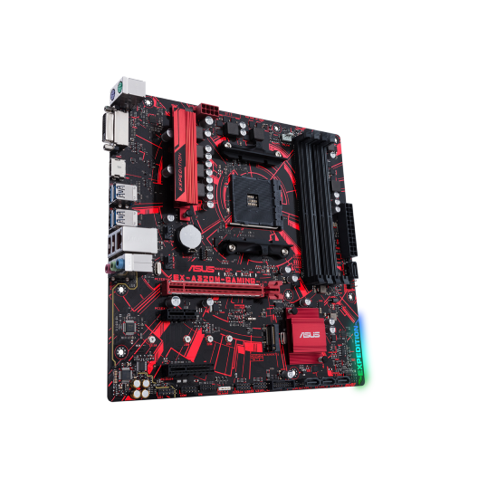

Simple flow
[FOLDER LINK - /@tasks](https://drive.google.com/drive/u/0/folders/1xsXeqhqqieGP0kwjlLOfrP95h12OUEy-)
CURRENTLY
| /home/nkensa/@emelit-projects/teach-coach/udemy-life-coaching-online-certification |
ÀÇÉÈÊ€Ô - àâçêéè Î Ï ôùû - «» ✨✨
√é = Î √è = Ï √¨ = ì √≠ = í √Æ = î √Ø = ï, √ë = Ñ √± = ñ √í = Ò √ì = Ó √î = Ô √ï = Õ √ñ = Ö
=============================================
6258-02-30
. (2021-10-02 - Sat)
6258-02-29
. (2021-10-01)
6258-02-28
. (2021-09-30) - Read & Watch: | https://www.youtube.com/watch?v=522gfdBrpgI&ab_channel=Kugali - APANAEFJ: QGF - AR Nature: https://docs.google.com/document/d/1kMiU3Ekh_0uVy9aZuxbzpN1zMGHvFIkZ/edit#
6258-02-27
. (2021-09-29 - Wed)
- Today:
| ACNews daily:
> Début: 11:25 - Fin: 12:45 - Temps de travail effectif: 1h15
- Maison AfroD:
| TODO:
> Setup Virement bancaire
> Setup payment methods:
https://www.afrohustler.com/top-11-online-payment-aggregators-cameroon/
- Stripe ✗ Cameroon not included ✗
- Paypal ✓?
- 2Checkout ✗
> Setup Mobile integration
- Monetbil: Benin, Cameroon, Liberia, RDC, Senegal ✓
- Wazapay?
> Test
6258-02-26
. (2021-09-28) - Today: | ACNews daily: > Début: 09:15 - Fin: 13:45 - Temps de travail effectif: 4h15 > SPONSOR ? - Maison AfroD: | Présentation marketing: https://www.canva.com/design/DAEq58oW1aE/gUmUqnpKOGynGhlEThtbVQ/edit ~ | Spot candidates: https://www.freelancer.com/contest/A-SPOT-FOR-THE-CROWDFUNDING-CAMPAIGN-OF-THE-AFRODESCENDANTS-HOUSE-1998704/entries ~ > Previous work https://www.facebook.com/watch/?v=210381163718908 > https://www.youtube.com/watch?v=ZsRem0AFNVU > https://www.youtube.com/watch?v=-s8JLiRIksE
6258-02-25
. (2021-09-27) - Today: | ACNews daily | AfroDHouse: > Complete platform work > ... | AfroDHouse:
6258-02-24
. (2021-09-26) - ACNews: | Daily work ✓ > D√©but: 09:45 - Fin: 12:43 - Temps de travail effectif: 2h15 > SPONSOR ☷[ üî¥ RCA: NZILA LA PR√âSENCE DES FORCES SP√âCIALES RWANDAISES SALU√âE PAR DES HABITANTS] ☷[ üî¥ MALI: LE CHEF DU GOUVERNEMENT APPELLE LONU √Ä CHANGER DE PARADIGME CONTRE LE TERRORISME] ☷[ üî¥ MALI-RUSSIE: VERS UN RENFORCEMENT DE LA COOP√âRATION BILAT√âRALE]
6258-02-23
. (2021-09-25 - Sat)
6258-02-22
. (2021-09-24)
6258-02-21
. (2021-09-23) - ACNews: | Daily work ✓ > Début: 08:55 - Fin: : - Temps de travail effectif: h - Today: | Buy.. - Maison AfroD: | Check candidates for community management ✓~ | Backend programming/program/software composition/configuration/setup for Campaign ✓~ | TODO: > Setup Stripe, Paypal & 2Checkout > Setup Mobile integration for Stripe & 2Checkout > Test | COMMUNITY MANAGERS VOLONTAIRES: https://www.facebook.com/jobs/job-opening/409176933957669/?source=job_ats - Community Managers - Reponse - OUI: https://docs.google.com/document/d/1xwdYDa1-KRqWtQ_lGLkMmkxdcdDCrY24/edit# - APANAEFJ: | Séances - Maison AfroD: | Propose, 3 destinations for campaign → 6 different campaign landing pages: > USA, Europe; the World: - $, English - €, French > Cameroun, Africa (→ +Mobile money): - FCFA, French - $, English > Contributors, Sponsors: - $, English - €, French | Murs des contributeurs: - Mur des grands contributeurs - Mur des entreprises - Mur des particuliers, de tout le monde
6258-02-20
. (2021-09-22 - Wed) - ACNews: | Daily work ✓ > Début: 08:30 - Fin: 09:50 - Temps de travail effectif: 1h10 | Read & Watch ✓ | Chronique > Début: 15:15 - Fin: 16:15 - Break: 10:00 - 12:10 - Read & Watch: | "Post Office": https://www.youtube.com/watch?v=Cszp_2OyJaM - Maison AfroD: | See yesterday \~✓
6258-02-19
. (2021-09-21)
6258-02-18
. (2021-09-20) - Maison AfroD: | See yesterday \~✓ | Site multilingue ✓
6258-02-17
. (2021-09-19) - Maison AfroD: | Continue conclude brainstoming | Crowdfunding ~✓ > Spot - Campagne de Crowdfunding: - Check job offer, organize interviews ~✓ - Post on Freelancer.com ~✓ - Write, Website: | https://molhokwai.pythonanywhere.com/emelit/static/plugin_theme_blackwhite/rex.html ✓ - If only she would shut up... looking forward to be away from all this.
6258-02-16
. (2021-09-18 - Sat)
6258-02-15
. (2021-09-17) - ACNews: | Daily work ✓ | Read & Watch ~ - Simple flow / Kmt Calendar: generate-kamite-decaine ✓ | https://drive.google.com/drive/folders/1fKQIqYW8iNspPtFQdnWwtYrKzswAwGgQ?usp=sharing - APANAEFJ: | AR Nature: Raïssa ~✓ | Grenier d'Afrique ~✓ | Séances ~✓ | Dossiers de membre ✗ - Maison AfroD: | Continue conclude brainstoming | Crowdfunding > Spot - Campagne de Crowdfunding: - Check job offer, organize interviews - Post on Freelancer.com
6258-02-14
. (2021-09-16) - Read & Watch | Veritasium: Is Success Luck or Hard Work? ✓↜ - Maison AfroD: | Nommage des chambres + Partagez a vos amis... ✓~ > https://afrodhouse.org/la-maison-des-afrodescendants-nommage-des-chambres/ | Scenographie + Partagez a vos amis ✓~ > https://afrodhouse.org/scenographie-de-la-maison/ | Partage d'idées: Padlet ✓~ > https://afrodhouse.org/vos-idees-pour-la-maison-des-afrodescendants/ > https://padlet.com/mayounkensa/afrodideas# | Site multilingue | Crowdfunding ✓~ > Spot - Campagne de Crowdfunding: - Post - Freelancer.com? > Plateforme: Construire...
6258-02-13
. (2021-09-15)
6258-02-12
. (2021-09-14) - ACNews: | Daily work | Read & Watch ✓ > https://www.ac-news.org/fr/accueil1/48362-guinee-les-concertations-annoncees-par-la-junte-suscitent-attentes-et-interrogations > https://www.ac-news.org/cameroun/48501-guinee-le-dictateur-alpha-conde-encense-le-putschiste-mamady-doumbouya-condamne-guinea > https://www.ac-news.org/cameroun/48499-guinee-alpha-conde-et-la-soif-du-pouvoir-guinea > https://www.ac-news.org/cameroun/48492-des-rebelles-centrafricains-presumes-arretes-au-cameroun-cameroon > https://www.ac-news.org/cameroun/48482-guinee-georges-weah-la-cedeao-devrait-faire-respecter-la-limitation-des-mandats-guinea > https://www.ac-news.org/cameroun/48474-guinee-l-histoire-secrete-de-la-chute-d-alpha-conde-guinea > https://www.ac-news.org/cameroun/48472-cameroun-scandale-19-milliards-fcfa-injectes-en-catimini-pour-le-complexe-sportif-d-olembe-cameroon
- Read & Watch | Prince Kuma Ndumbe III: https://www.facebook.com/100035385438449/posts/595648588291317/?d=n | ASTERNAUTS - Award-winning Sci Fi Comedy Short Film [EN]: https://www.youtube.com/watch?v=aYBF2v0pbCM
6258-02-11
. (2021-09-13)
6258-02-10
. (2021-09-12) - ACNews: | Daily work ✓ | Read & Watch ✓ - Read & Watch | Sasquatch music festival 2009 - Guy starts dance party - https://www.youtube.com/watch?v=GA8z7f7a2Pk&ab_channel=dkellerm
6258-02-09
. (2021-09-11)
6258-02-08
. (2021-09-10)
6258-02-07
. (2021-09-09) - Read & Watch | https://www.ac-news.org/afrique-monde/48063-la-premiere-dame-jill-biden-reprend-son-travail-denseignante-une-premiere | https://www.ac-news.org/afrique-monde/48062-le-bitcoin-trebuche-pour-son-premier-jour-comme-monnaie-officielle-du-salvador - Maison AfroD: http://afrodhouse.org/la-maison-des-afrodescendants-nommage-des-chambres/ ✓
6258-02-06
. (2021-09-08) - https://support.mozilla.org/en-US/kb/troubleshoot-extensions-themes-to-fix-problems ✓ - Maison AfroD: | AFROD-HOUSE-CONFERENCExr24: https://drive.google.com/file/d/1G6rTIjWP8jidTrj_6LfglZq5CxnJA6q4/view?usp=sharing ✓ | AFROD-HOUSE-CONFERENCExr35: https://drive.google.com/file/d/1znt1WBVoHSwAmdrcuxezY9GM9rhQF4eA/view?usp=sharing ✓
6258-02-05
. (2021-09-07)
6258-02-04
. (2021-09-06) - You I would cry acid tears, With the weight that my heart bears, Missing and hurting for you...
But I've shed away all my fears,
-
APANAEFJ | Modèle de plan de développement: https://docs.google.com/document/d/10nCedfVTPfYRdVyFyTneR0gbQsdeZiWjVGtjTVVtr7c/edit#heading=h.z6ne0og04bp5 > Explication: https://drive.google.com/file/d/1-XGc8Wf4VYTCd8JSahqf8CG_Nl6tuhe8/view?usp=sharing | Modèle de plan financier de développement: https://docs.google.com/spreadsheets/d/1k6CLAm7EhQYkeWRg5bTSpQ0dTvjUG_1wkLj5HWBtAdM/edit?usp=sharing > Explication: https://drive.google.com/file/d/1nNdvJiohd5_FCFbxcLW2x1kAN_qN9sqi/view?usp=sharing
-
Maison AfroD: | Maison des afrodescendants - Public et Campagne: https://docs.google.com/document/d/11hGkvaAfKIq0Zd1S2Ordg0YpNTPlQM-F/edit?usp=sharing&ouid=107274502670512090512&rtpof=true&sd=true | Translations: https://docs.google.com/document/d/1bnulbx6teIuagIeRDOf-4NRnvx8r0OfJ/edit#heading=h.l926kjp53tn
6258-02-03
. (2021-09-05) - Today: | Clean smartphone ✓ | Send video ✓ - Read & Watch | https://www.ac-news.org/cameroun/47735-cameroun-malawi-la-caf-accuse-le-cameroun-d-avoir-menti-sur-la-situation-du-stade-d-olembe-cameroon | https://www.ac-news.org/afrique-monde/47751-berlin-des-milliers-de-personnes-defilent-contre-le-racisme-et-le-manque-de-justice-sociale | https://www.ac-news.org/cameroun/47741-cameroun-alain-edgard-mebe-ngo-o-justifie-sa-fortune-au-tcs-cameroon
- APANAEFJ | La fatigue et le froid de la semaine..., réunion globale ✓
- ACNEWS: | https://www.ac-news.org/flash-information/47813-guinee-conakry-coup-d-etat-annonce-du-lieutenant-colonel-mamady-doumbouya ✓
6258-02-02
. (2021-09-04)
6258-02-01
. (2021-09-03) - ACNEWS: | Sample live with belive... with whom? > Talk about chronicle, theme of the month > Choose articles & videos to talk about > Questions/réponses...
6258-01-30
. (2021-09-02) - ACNews | Les volontés de la Communauté Internationale sont-elles en accord avec celles du Peuple Malien? Une transition rapide est-elle nécessaire et dans l'intèrêt du Mali? La démocratie et la classe politique actuelle pourraient-elles éviter un retour à ses dérives si le pouvoir lui était remis dans les délais exigés? Merci pour vos commentaires et réponses objectives, éclairées et impartiales... https://www.facebook.com/acnews.org/photos/a.1654703308074571/3001852466692975/ - Maison AfroD: | Site multilingue | Nommage des chambres + Partagez a vos amis... | Scenographie + Partagez a vos amis | Partage d'idées: Padlet | Crowdfunding ✓~ > Spot - Campagne de Crowdfunding: - Post - Freelancer.com? > Plateforme: Construire...
6258-01-29
. (2021-09-01) - Maison AfroD: | Cercle de poésie libre | ... | ... - Read & Watch I Found Birds In The Audience... - https://www.youtube.com/watch?v=HwGft_oSdpA
6258-01-28
. (2021-08-31) - Appeler Papa - Maison AfroD: | Conference report: https://docs.google.com/document/d/1Gv6AFFQF4SG0UQvfs8zL03zo38klYQ9j/edit ✓ | Dossier de parrainage > Modèle: https://www.canva.com/design/DAEla8sc47A/z3r_lGfItBxbMrp_xY5bcA/edit > Dossier: https://www.canva.com/design/DAEoB1gs6b4/HXME1vqV2ynzvdguDJmDSA/edit > Ppt: https://docs.google.com/presentation/d/1dmXnukv6kTHsXdfXiL6vOiw7JHn9_2lcy3MLaQ5tX0o/edit#slide=id.p | Site web > Nommage > Scénographie > Multilingue | Padlet idées | Mur des contributions | Plateforme | See prv... - APANAEFJ | CR ✓
- ACNews: | https://www.ac-news.org/afrique-monde/47257-l-afghanistan-le-cimetiere-des-empires | https://www.ac-news.org/afrique-monde/47269-cameroun-le-gouvernement-rappelle-a-lordre-les-ong ✓ | CAMEROUN: l'État veut accentuer le contrôle des ONG étrangères ✓
6258-01-27
. (2021-08-30) - Moi j'ai dépensé 1 600F pour ma glace à la pistache, mon croissant et... ✓
6258-01-26
. (2021-08-29) - Read & Watch ✓ Norm MacDonald - Professor of Logic Joke ✓ how mothers deliver a baby from little girl point of view ✓ Jim Carrey - Faces - Unatural Act - 1991 ✓ CLOSEST FINISH EVER? || Fred Kerley & Kenny Bednarek Run ✓ yts: Vacation friends ✓
6258-01-25
. (2021-08-28)
6258-01-24
. (2021-08-27) - ACNews - 6h - Maison AfroD - 7h: | Site web > Nommage > Scénographie | Padlet idées | Mur des contributions | Plateforme | See prv... - APANAEFJ | Arrange audios, get meeting video | 9h...
6258-01-23
. (2021-08-26) - Read & Watch | https://www.voaafrique.com/a/pour-certains-fran%C3%A7ais-la-troisi%C3%A8me-vague-du-covid-reste-une-fiction/6008628.html
6258-01-22
(2021-08-25)
- ...
6258-01-21
(2021-08-24)
- Maison AfroD: See prv - | Contact Mme SIRRI ✓ | YAMSIMa, dossier ✓ | Jean-daniel: reponse ✓ | Phalone KAMNO | Sony ETILA, Ambassador ✓ | See prv... | Lettres officielles de demande de soutien institutionnel: ? > MinRex > Minac
6258-01-20
(2021-08-23)
- CONGE CONGE CONGE
- Today: | Sport ✓ | Appeler Anette ✓ | APANAEFJ ✓ | Hd ✓ | Install ~ | ...
6258-01-19
(2021-08-22)
- ...
6258-01-18
(2021-08-21)
- ... https://www.youtube.com/watch?v=DPTuoTB8o28
- APANAEFJ | Notes d'intention ---------------------------- > M. SONNA > DMG > Mboa Fast Chicken
6258-01-17
(2021-08-20)
- ... Je remarque que ceux et celles qui disent par la Grace de ..., soit sont en souffrance, soit n'ont pas fait quelque chose comme il faut, par exemple, pas respecte leurs engagements... donc c'est soit un exutoire, soit une excuse...
6258-01-16
(2021-08-19)
- ...
6258-01-15
(2021-08-18)
- Today | AfroDHouse: Prio ✓ | AfroDHouse: Contrat ~ | AfroDHouse: Remerciements, dossiers ~? | APANAEFJ: DMG ✓~ | Commande Multiplicateur USB, boitier DD ✓ | MACHINE INSTALL - 13:30 ✗ | AfroDHouse: Website backend access fix? + Multil lingual | APANAEFJ: Dossiers, Repertoire | APANAEFJ: > Def M. TCHAGNA ✓ > Q Finances: M. OUM ~ > Def: Mboa Fast Chicken ~
- ... D'accord... Content de pouvoir te présenter et te parler d'Alexandra... nous nous voyons ces jours-ci. Et vraiment, j’espère sincèrement pouvoir t'offrir une bru... Que les ancetres alignent les Etoiles pour que cela se fasse...
- APANAEFJ: | Lire presentation AUTO-ECOLE SANS FRONTIERE
6258-01-14
(2021-08-17)
- ...
- Maison AfroD: See prv - | Spot - Campagne de Crowdfunding: > Post > Freelancer.com
- ... Night clouds rip apart, Tension fields and a poisonous dart, Obvious scheme, nay wheels of the cart, Heighten up, and change your ways, Bart.
6258-01-13
(2021-08-16)
- APANAEFJ:
| Repertoire des membres
> Feuille de route pour chaque membre | APANAEFJ-Membres-Tableau-de-progression: https://docs.google.com/spreadsheets/d/1LEHW2iaWtfTuQ8jL_prriD2X28yfrxDslLGGM9MULmE/edit#gid=0 ~ > Dashboard: All members progression, see next, see done, see all... > ... see prv... - Maison AfroD: See prv - | Traducteurs.trices - Traductions, suivi: https://docs.google.com/document/d/1MhJ3ViskFd6gLpkSJGWAqOafbuILkV9g/edit#heading=h.51d11y9yncf6 ✓ | Convention de partenariat: https://docs.google.com/document/d/1orZzqBfwtbKsleAwTvpNOWQDq5e9cjKE/edit# ✓? | Contrat de community manager & Communicateur freelance: ✓ > https://docs.google.com/document/d/1bnH2vYsN0rjzLKMEvbAm1D3HpOcAcSVg/edit#
- ...
6258-01-12
(2021-08-15)
- Maison AfroD: See prv - | Convention de partenariat: https://docs.google.com/document/d/1orZzqBfwtbKsleAwTvpNOWQDq5e9cjKE/edit# ✓? | Contrat de community manager & Communicateur freelance: ✓ > https://docs.google.com/document/d/1bnH2vYsN0rjzLKMEvbAm1D3HpOcAcSVg/edit# | Spot - Campagne de Crowdfunding: > Post > Freelancer.com
- ...
6258-01-11
(2021-08-14)
- Maison AfroD: | ☰ LA MAISON DES AFRODESCENDANTS SUR STV: https://www.facebook.com/MaisonDesAfroDescendants/posts/134071278887248
- Read & Watch | A lonely taxi driver takes drastic action to protect a customer from heartbreak. | Halo - https://www.youtube.com/watch?v=0G03slUJ5Sk
6258-01-10
(2021-08-13)
- Today > Yg ✓~✓ > Calculations & summaries ~ > Hd > Ph 0 ~✗✓ > HD+ ~?
- Maison AfroD: | Translators job: https://www.facebook.com/jobs/job-opening/809956759712206 ✓ > Answers & Follow-up: https://business.facebook.com/latest/inbox/all?nav_ref=redirect_biz_inbox&selected_item_id=100067885356781&asset_id=102180018743041&mailbox_id= | ... See prv ...
- APANAEFJ: | Prepare for meetings: Financial questionnaire & Candidate (progression) folder > Module | Niveaux/Etapes ... | ✓ | ✓ | ~ | | ~ | | Repertoire des membres ✗ > Feuille de route pour chaque membre > Dashboard: All members progression, see next, see done, see all... > ... see prv...
- "Cesse de t'inquieter..." dit le message pub de cet operateur... Ecrit par un membre de la minorite de ceux qui touchent un salaire de plusieurs centaines de milliers de F par mois...? Je me demande ce ce que ceux qui marchent au soleil tous les jours pensent de ce type de message...
- Read & Watch: | Doja Cat - Playlist | Wine Pon You (Audio) ft. Konshens - https://www.youtube.com/watch?v=KPjqtjvEgxY&list=PLRaQtz4qnhNkvfAB5WgOTD9ohbXdlSFOF&index=30
6258-01-09
(2021-08-12)
- Today > Hd ✗ > Pay ✓ > Ph ~ > Mt, Tbrsh ✓ > HD+ ~?
- Maison AfroD: See prv - | Convention de partenariat: https://docs.google.com/document/d/1orZzqBfwtbKsleAwTvpNOWQDq5e9cjKE/edit# ✓~ | Contrat de community manager & Communicateur freelance: ✗~ > https://docs.google.com/document/d/1orZzqBfwtbKsleAwTvpNOWQDq5e9cjKE/edit# | Spot - Campagne de Crowdfunding: ✗ > Post > Freelancer.com
- APANAEFJ: | Repertoire des membres ✗ > Feuille de route pour chaque membre > Dashboard: All members progression, see next, see done, see all... > ... see prv...
- SIMBA: ✗?
| SIMBA, Simple Planner - w wh ?
> No login, Dashboard: "Vous pouvez inviter vos participants/collaborateurs a remplir le tableau a ce
, ou, ce qui est preferable si vous etes dans un groupe ensemble: Telechargez l'image et partagez-la dans le groupe: ce sera plus rapide et immediat pour tous et toutes de simplement et directement repondre... \n Voila" - 8eme des 42 ideaux de la Ma'at du Temple d'Isis: "Je regarde tous les autels avec respect"...
6258-01-08
(2021-08-11)
- Today > Hd ✗~ > Pay ✗~ > HD ✗~ > Mt, Tbrsh ✗~
- Si tu étais ici, tu te serais couchée sur mon dos pour voir combien de pompes je peux faire comme ça. ~ Ce qui aurait été beaucoup encore meilleur que le sport que je vais faire maintenant, tard dans la journée...
- Maison AfroD: See prv - | Convention de partenariat: https://docs.google.com/document/d/1orZzqBfwtbKsleAwTvpNOWQDq5e9cjKE/edit# | Contrat de community manager & Communicateur freelance: ✗~ > https://docs.google.com/document/d/1orZzqBfwtbKsleAwTvpNOWQDq5e9cjKE/edit# | Spot - Campagne de Crowdfunding: ✗~ > Post > Freelancer.com | Translators job: https://www.facebook.com/jobs/job-opening/809956759712206 ✓ > Answers & Follow-up: https://business.facebook.com/latest/inbox/all?nav_ref=redirect_biz_inbox&selected_item_id=100067885356781&asset_id=102180018743041&mailbox_id= | Partenaires: https://docs.google.com/document/d/1BQTTJBTPVkdRzkXQP175zW6VnUQ59bWB/edit?usp=sharing&ouid=107274502670512090512&rtpof=true&sd=true ✓ | ... See prv
- bit.ly/nkensa-trainer ✗
6258-01-07
(2021-08-10)
- Read & Watch How Apple and Nike Have branded your brain ✓ https://www.youtube.com/watch?v=o563oEVqAj4 ✓ Artist illustrates...: https://www.youtube.com/watch?v=45oEICMa2TA ✓
6258-01-06
(2021-08-09)
- Maison AfroD: See prv - | Comm & Comm manager: ✓ > https://support.socialbakers.com/hc/en-us/articles/360010637820-Facebook-Page-Roles-Permissions-for-Private-Data-and-Facebook-Ad-Account- | Crowdfunding: paiement pour plateforme ~ | Traducteur.trice.s: post, job ✓~ | Rapport - Validations ✓~ | ... See prv
- APANAEFJ: | Repertoire des membres ✗ | Comm & org ✓✓✓~
- W:
| Services page / Sales page ✗ > Simple facebook portfolio post > Sales page
6258-01-05
(2021-08-08)
- Maison AfroD: See prv - | Rapport - Photos: https://drive.google.com/drive/folders/1DZTmf9ieCBaYRNkxbw9N2VkiiXfEXVsG ✓✓✓ | Crowdfunding ✓~ | Best vs Necessity | Choice ~~ | ... See prv
- APANAEFJ: | Repertoire des membres ✗ | Comm & org ✓
- W: | Services page / Sales page ✗
6258-01-04
(2021-08-07)
- W: ☶ Le 4eme Djehuty 6258 - REPRESSION TECHNOLOGIQUE ✓ BLANK: https://docs.google.com/document/d/1iXjbmYWaGZ20-iZ27auOpuwOwzeV4Ta6JXwIG4HBHWs/edit
6258-01-03
(2021-08-06)
-
6258-01-02
(2021-08-05)
- Read & Watch MAGNI MOUAFO + https://www.facebook.com/watch/?v=503314017339924 "ODD THOMAS" - https://www.youtube.com/watch?v=scsh9F_TxnE
6258-01-01
(2021-08-04)
- APANAEFJ: | Projets: > AR Nature ✓~~ > HOUSE Innovation ✓~ > Grenier de l'Afrique ✓~
- Maison AfroD: See prvs - | "MEDIAS/CONFERENCE INAUGURALE" - https://drive.google.com/drive/folders/1nDv-CwuCwGj8rm1STqY6ipb5xT8ppJLE ✓ | "PHOTOS" - https://drive.google.com/drive/folders/1DZTmf9ieCBaYRNkxbw9N2VkiiXfEXVsG ✓ | Extract from Africa Mondo Magazine - https://madmagz.com/fr/magazine/1932031#/ ✓
- Read & Watch | "Bobodiouf 4H marathon to celebrate the 20 years of the series" - https://www.youtube.com/watch?v=9UA-lqHJULY
6257-12-05
(2021-08-03)
- Maison AfroD: See prv - | Posts pour le Calendrier Africain ✓ | Posts pour de bilan et pour le lancement du Crowdfunding | CONFERENCE INAUGURALE: Message/Post de de remerciement aux partenaires et a la Communaute ✓ | Message d'appel aux partenaires, pour partages de leurs activites
- Read & Watch | https://www.youtube.com/watch?v=hFrl7rnCx4A https://www.youtube.com/watch?v=EQzvQO2LcA4
6257-12-04
(2021-08-02)
- Maison AfroD: See prv - ✓ | Plan comm, medias, comm mgmt ✓
- APANAEFJ: | Comm, blog ✓
- Maison AfroD: See prv - | Money + Voir BILAN FINANCIER | Spot - Conf video: https://fb.watch/74RtsZa4df/ ✓ > (https://www.getfvid.com/downloader) Video on drive: https://drive.google.com/file/d/1vHksqaGN2R6ESpaiLD0Ak0AF75IZtg-d/view?usp=sharing | After event comm ✓ | Share conf video ✓ | Nommage des chambres + Partagez a vos amis... | Scenographie + Partagez a vos amis | Crowdfunding ✓~ > Plateforme, choix - () | Construire... | https://www.fiatope.com | "L'Afrique réinvente sa propre voie du crowdfunding..." - https://www.mediaterre.org/afrique/actu,20161102025914.html | "WP Crowdfunding" - https://www.themeum.com/product/wp-crowdfunding-plugin/ | Reports & Analysis - afrikstart.com/report/wp-content/uploads/2016/09/Afrikstart-Crowdfunding-In-Africa-Report.pdf - minfi.gov.cm/wp-content/uploads/2021/03/Expose_2_George_Meka__crowdfunding_Douala_20__02_2020.pdf | Example with Mobile Money: https://www.gofundme.com/f/ny84p-potable-water-for-mbelewa-nkwen/donate
- Read & Watch "Squeegee" - https://www.youtube.com/watch?v=MBoC_8dePUY "Paparazza" - https://www.youtube.com/watch?v=MUItjDX1gxQ "Hello Ma'am" - https://www.youtube.com/watch?v=rsjIy2yPH5I "15-year-old with BLUES VOICE" - https://www.youtube.com/watch?v=sVJ13sad5NY&pp=sAQA
6257-12-03
(2021-08-01)
- ...
6257-12-02
(2021-07-30)
- ...
6257-12-01
(2021-07-29)
- Maison AfroD: See prv - | Connexion Box Camtel | E-mails afrodhouse.org pour tous
6257-11-30
- ...
6257-11-29
- APANAEFJ Cameroun: +See prv...
- Maison AfroD: See prv - | Migration de site: http://afrodhouse.org ✓✓✓ > Achat de noms de domaine ✓✓✓✓ | Post partenaire... | Banniere pour Ambassadeurs ✓ | Crowdfunding, analysis ~ | Social accounts Comm & Org ~ > "How to connect multiple Twitter accounts in your TweetDeck" - https://help.twitter.com/en/using-twitter/how-to-use-tweetdeck > "Add admin to Instagram Account With AiGrow" - https://socialpros.co/add-admin-to-instagram (https://karolakarlson.com/instagram-for-business-guide/) | Page & post de Nommage
- SEE PREVIOUS DAY, CONTINUED
6257-11-28
- APANAEFJ Cameroun: +See prv...
- Maison AfroD: See prv - | Migration de site: http://afrodfoundation.cloudaccess.host/ ✓✓✓ > Achat de noms de domaine ✓✓ | Crowdfunding, analysis
- SEE PREVIOUS DAY, CONTINUED
6257-11-27
- APANAEFJ Cameroun: +See prv... | Comm ✓ | GIMP - EXCELLENT!! FREE XCF SAMPLES - EFFECTS CHEATSHEET (on drive) ✓
- Maison AfroD: See prv -
| Migration de site: http://afrodfoundation.cloudaccess.host/ ✓✓~
> Achat de noms de domaine ~
| Invitation: Dossier Evenement
| Posts:
> - 1 Post sur la Conférence Inaugurale
| (https://docs.google.com/document/d/1oR-S4gD81hksD-hBunrwAB7qIiJoH00L/edit#)
https://afrodfoundation.cloudaccess.host/conference-inaugurale/
> - 2 Post sur le nommage des chambres
| https://drive.google.com/drive/u/1/folders/1eG58SKF9EGssYbd-E5k1YjwLSSa6lRR5
> - 3 Post sur notre partenaire MONKAM TV - SEE PREVIOUS DAY, CONTINUED
6257-11-26
- SEE PREVIOUS DAY, CONTINUED
6257-11-25
- Maison AfroD: See prv - | Comm & Org ✓~
- Kimpa Vita: Banniere ✓✓✓
- Maison AfroD: See prv - | Migration de site ~✓~ > https://wordpress.org/support/topic/server-error-0/ PHP Notice: ob_end_flush(): failed to send buffer of zlib output compression (0) > UpDraftPlus - https://drive.google.com/drive/folders/1cZBT41ErM07lUeAd-ev33bpdh2RF_BAm?usp=sharing > Support ticket ✓ | +Banniere pour le nommage des chambres > 0 - https://www.canva.com/design/DAElFzZXsjQ/fGbhdgUIP60jKS7V5KB5uw/edit > 1 - https://www.canva.com/design/DAElGKLAuTM/l5sey3mxx1bWzt4O5Lhang/edit
- APANAEFJ Cameroun: +See prv... | Saisie des elements de definition de projet ✓ | QQOQCCP Membres: https://docs.google.com/document/d/1dDw--vod6nnFlTGE6VC48foZ2w4pMDcY/edit#heading=h.uzo80eo57qhn ✓ | Progression: https://docs.google.com/presentation/u/0/?authuser=0&ftv=1&usp=slides_web ✗✗✓
- Read, Watch, Write, W: | ☀️Blindspotting Your Brilliance
6257-11-24
- Maison AfroD: See prv - | Comm & Org ✓~
- Kimpa Vita: Banniere ✓✓
- Maison AfroD: See prv - | +Banniere pour le nommage des chambres | Migration de site ~✓~ > https://wordpress.org/support/topic/server-error-0/ PHP Notice: ob_end_flush(): failed to send buffer of zlib output compression (0) > https://bit.ly/nkensa-trainer
- APANAEFJ Cameroun: +See prv... | Saisie des elements de definition de projet | ...
- Read, Watch, Write, W: | ...
6257-11-23
- ACNews - "Alerte Info" ✓
- Maison AfroD: See prv - | Comm ✓
- Kimpa Vita: Banniere ✓
- Maison AfroD: See prv - | Domain name | Video script (See prv for details & links) ✓✓~~✗✗ | Todo List See prv 8- Finalisation du site web - Fr NKENSA | Page: Nommage des chambres [fusion_form form_post_id="163"] ✓~~ | +Padlet
- APANAEFJ Cameroun: ✗✗ | Saisie des elements de definition de projet | ...
- Read, Watch, Write, W: | https://www.youtube.com/watch?v=mNF3ppJcQPE
6257-11-22
- ACNews - "Alerte Info" ✓ | https://www.ac-news.org/afrique-monde/46442-sept-pays-africains-ont-espionne-des-journalistes-via-le-logiciel-pegasus | custom.css ✓
- Read, Watch, Write, W: | "A young couple on a first date decides to be brutally honest about their flaws. | I Will Despise You" - https://www.youtube.com/watch?v=Ge2IdX29PhY ✓~
6257-11-21
- Maison AfroD: See prv -
- Read, Watch, Write, W: | https://docs.google.com/presentation/d/1Ni5TDrfqxD_PJ_30rZ8Ed7KbcskGAHj3tWHdDkLVlTo/edit#slide=id.p | https://drive.google.com/drive/u/0/folders/1SwP7DKXKwdtHLGv7kJN7lobS2NVFtg6l | www.findglocal.com/XX/Unknown/437794739737669/CLUB-Panafricain-Universitaire
6257-11-20
- Maison AfroD: See prv - | Video script (See prv for details & links) ✓✓~~ | Todo List See prv 8- Finalisation du site web - Fr NKENSA | Page: Nommage des chambres [fusion_form form_post_id="163"] ✓ | +Padlet ✗✗
- APANAEFJ Cameroun | Reunion ✓ | ToDo (See prv) ~ 3- Members' Insertion DB _________ https://wpdatatables.com/features/ https://codecanyon.net/category/wordpress?tags=datatable&term=datatables#content https://datatables.net/blog/2019-02-15 > https://en-gb.wordpress.org/plugins/tablepress/#reviews Extensions > ( see all @https://tablepress.org/extensions/ ) https://tablepress.org/extensions/tablepress-styler-divi-modules/ https://tablepress.org/extensions/datatables-fixedheader/ https://tablepress.org/extensions/responsive-tables/ https://tablepress.org/extensions/row-filter/ https://tablepress.org/extensions/automatic-url-conversion/ https://tablepress.org/extensions/table-cell-shortcode/ https://tablepress.org/extensions/datatables-fixedcolumns/ https://tablepress.org/extensions/datatables-column-filter/ Progress bar > https://stackoverflow.com/questions/54807711/convert-value-to-percentage-using-jquery-for-custom-progress-bar/54807908 ( https://mogul.nz/2020/10/how-to-wordpress-jquery-datatables/ )_ _________ +A quick registration wizard app: http://www.designdetective.net/create-a-simple-progress-bar/ ? See with M. Oum ___________
- Read, Watch, Write: "Kimpa Vita: The Mother of the African Revolution (English Trailer)" - https://www.youtube.com/watch?v=KT75B30PUR4
6257-11-19
- Maison AfroD: See prv - | Video script (See prv for details & links) ✓✓~~ | Todo List See prv 8- Finalisation du site web - Fr NKENSA | Page: Nommage des chambres | +Padlet
- APANAEFJ Cameroun
| Reunion
| 62560917-APANAEFJ-ISP-schema-logique-présentation-partiellexr35 -
https://drive.google.com/file/d/19uxEaL_3o27zaInF906LGU_o7__ZlWi9/view?usp=sharing
| ISP-Schéma-Logique.png
https://drive.google.com/file/d/1PdgHgAydkj2hfhN5yJXkKeVKMwxoH-M9/view
| /MISP (Mécanisme d'Insertion Socioprofessionnelle)
https://drive.google.com/drive/u/0/folders/1MjyMiYPaVDSjuZmDDPd2kRhWueTDRg7u
| >> http://apanaefj.org/wp-content/uploads/2021/07/APANAEFJ-Cameroun-InsertionEmploi-et-Entrepreunariat.png
| ToDo:
1- PV + Blog post for prv & next step ✓~
2- General process schema for all, based on MISP ( QQOQCCP, SEPO, FFOM/SWOT, Money Flow / Registres,
La chevre de ma mere, Trainings, Living conditions, Living expenses,
Insertion plan: CV, Interview, Assigned work & results,
Trainings, Training for interview
Entrepreneuship plan: CV, Interview, Assigned work & results, Financial plan, exploitation plan, Trainings, Living conditions, Living expenses, Training for pitching - Plans validation - Funds acquisition ) Each will receive one to mark progress 3- Members' Insertion DB - Read, Watch, Write:
6257-11-18
- Maison AfroD: See prv - | Video script (See prv for details & links) ✓✓~~ | Todo List See prv 8- Finalisation du site web - Fr NKENSA | Page: Nommage des chambres | +Padlet
- Read, Watch, Write: | Journal: https://molhokwai.pythonanywhere.com/plugin_mystream/grid/my_stream?keywords=journal
6257-11-17
- Maison AfroD: See prv - | Video script ✓~ > "POSTS" - https://drive.google.com/drive/folders/1ZLd46VLsDcSvKfN3bqAVbhIB2uKYFtYC > "PARTENAIRES" - https://drive.google.com/drive/folders/1rj4SqWflZyhDvCp-lbI0QhDoVZK6JcDg > "MAISON-DES-AFRODESCENDANTS-Activites - Webinar1" - https://docs.google.com/document/d/1eGZW445bdW4uBZ0ZW7lI6cfYWmOS9xKw/edit | Todo List See prv 8- Finalisation du site web - Fr NKENSA | Page: Nommage des chambres | +Padlet
- APANAEFJ Cameroun
| ToDo:
1- PV + Blog post for prv & next step ✓~
2- General process schema for all, based on MISP ( QQOQCCP, SEPO, FFOM/SWOT, Money Flow / Registres,
La chevre de ma mere, Trainings, Living conditions, Living expenses,
Insertion plan: CV, Interview, Assigned work & results,
Trainings, Training for interview
Entrepreneuship plan: CV, Interview, Assigned work & results, Financial plan, exploitation plan, Trainings, Living conditions, Living expenses, Training for pitching - Plans validation - Funds acquisition ) Each will receive one to mark progress 3- Members' Insertion DB | Continue ~ - Read & Watch | "Milwaukee Bucks vs Phoenix Suns Full GAME 4 Highlights | 2021 NBA Finals" ✓ - https://www.youtube.com/watch?v=q6l_Bj381U0 | "A teased Black girl gets her hair straightened for the first time. | Mahalia Melts In the Rain" ✓ - https://www.youtube.com/watch?v=wVcse5D1_08
6257-11-16
- Maison AfroD: See prv - | Video script | Todo List See prv 8- Finalisation du site web - Fr NKENSA | Page: Nommage des chambres | +Padlet
- APANAEFJ Cameroun | Continue ~
- Read & Watch
6257-11-15
- Maison AfroD: See prv - | Video script | Todo List See prv 8- Finalisation du site web - Fr NKENSA | Page: Nommage des chambres | +Padlet | Influenceurs: Brainstorming rapide ✓ | Nom de domaine: Decision collective ✓ | Crowdfunding: Placer date dans le calendrier pour analyse des plateformes et mise en place dans system.io ✓
- APANAEFJ Cameroun | Continue ✓~
- Read & Watch
6257-11-14
- Maison AfroD: See prv - | Video script ✗✗✗✗ | Todo List See prv ~ 8- Finalisation du site web - Fr NKENSA ~ | Page: Nommage des chambres | +Padlet
- Read & Watch | "3 friends bet their lives and $1 million in a game of Russian roulette -- in reverse. | Rewind" - https://www.youtube.com/watch?v=IXAdi-5TCzo ✓
6257-11-13
- Maison AfroD: See prv | Video script ✗✗✗ | ( avec ma machine déjà pleine capacité, ça m'aurait pris ~30mns pour les compresser... ) | Posts partenaires, Posts webinaire ~ 1- Poster videos 1 & 2 ✓~ - https://business.facebook.com/creatorstudio/published?content_table=POSTED_POSTS&post_type=VIDEOS 2- Lister posts partenaires & requerir textes/redaction 3- Proposer textes/redaction posts videos ✓~ | Contact: DJ Solonzo, Yamsima, MT? ✓ | Todo List METTRE DANS STRUCTURE, Y COMPRIS Campagne de Crowdfunding 1- Visuels: +Photos et elements des panelistes 2- Invitations 3- Moderation - Ornella 4- DJ - DJ Solonzo 5- Les medias - Fr FEZE 6- Dossier de presse - Djibril AHIDJO 7- Communication - Fr FEZE 8- Finalisation du site web - Fr NKENSA | Influenceurs: Brainstorming rapide ✗✗✗ | Crowdfunding: Placer date dans le calendrier pour analyse des plateformes et mise en place dans system.io ✗✗
- « The biscuits were for you, but your bitter nagging and more shows me that you won't take it well... at all... so: I'm enjoying them... »
- Read & Watch | https://www.youtube.com/watch?v=PY9kqjiMqj4 ✓ | https://www.youtube.com/watch?v=MCxS6us7xPM ✓
6257-11-12
- Maison AfroD: | See prv ~✗ | +Indications/instructions ✓
- APANAEFJ Launch: | Fb post: https://www.facebook.com/pendangueimnhtp/posts/331483905249147 ✓ | Meeting ✓✓✓ | Comm + Blog: ✓✓✓ - http://apanaefj.org/2021/07/10/reunion-de-fondation-de-lapanaefj-cameroun/ ✓ | Report ~
- MANSA/Nkensa Base ~ | See # 6257-11-03
- MANSA: Comm, prepare, legalize... ~✗
- Read, Watch | Serge Gainsbourg - LAETITIA (Vie Heroique) - https://www.youtube.com/watch?v=oIVwhYwygW8
6257-11-11
- Maison AfroD: | Video script ~✗ | Comm: 'bout M. Co, Idr ~✗
- APANAEFJ Launch: | Prints ✓ | Comm ✓ | Ordre du jour
- MANSA/Nkensa Base ~ | See # 6257-11-03
- MANSA: Comm, prepare, legalize... ~✗
6257-11-10
- Read, Watch | A woman tries to contact the outside world before an invasion of an unknown threat. | I'm Still Here https://www.youtube.com/watch?v=qvIOSF7RSok | Google:"Pug preprocessor"
- MANSA/Nkensa Base ~ | See # 6257-11-03
- MANSA: Comm, prepare, legalize...
6257-11-09
- Maison AfroD: | Video script | Comm: Mab, Van, Yamma, Pp... | ...
- APANAEFJ: | Posts, Comm... | ...
- Read, Watch
- MANSA/Nkensa Base ~ | See # 6257-11-03
- MANSA: Comm, prepare, legalize...
6257-11-08
- Read, Watch | ACNews articles ~✗
- MANSA/Nkensa Base ✗ | See # 6257-11-03
- MANSA: Comm, prepare, legalize... ✗
6257-11-07
- Maison AfroD | Answer: posts, webinar live ✓ | Audio ~ | Report & work ✓ | "Afrod House - Webinar announce..." - https://www.canva.com/design/DAEifpEJLjQ/p7LV05B6j6tpL2Z9eiIgTg/edit
- Read, Watch | ACNews articles ~
- MANSA/Nkensa Base ~ | See # 6257-11-03
- MANSA: Comm, prepare, legalize... ✗
6257-11-06
- ...
6257-11-05
- ...
6257-11-04
- Read | ACNews articles ✓~
- Watch | https://www.google.com/search?client=firefox-b-d&q=euro+2021#sie=lg;/m/0p3p7v6;2;/m/01l10v;mt;fp;1;; ✓
- MANSA/Nkensa Base ~ | See # 6257-11-03
- MANSA: Comm, prepare, legalize... ✗
6257-11-03
- Read "Introduction to Big-O" - https://www.youtube.com/watch?v=zUUkiEllHG0 ✓
- MANSA/Nkensa Base ~
| As PWA
_____
1st: Check
( src: https://freeappsforme.com/handwriting-to-text-apps/ )
| "Pen to Print" app (https://play.google.com/store/apps/details?id=p2p.serendi.me.p2p&hl=en&gl=US)
| INKredible
| MyScript Nebo
| INKredible
| MetaMoJi Note
__
Then: Check
( src: https://freeappsforme.com/handwriting-to-text-apps/ )_
| Mindmeister (well... only issue: limited to 3 maps)
| Cacao
| Miro
| Mindmup
_____
- Nkensa trainer ✓| magister | found monochrome layout ✓
> Nkensa portfolio: https://molhokwai.pythonanywhere.com/emelit/static/plugin_theme_trainer/html/index.html#contact
. Carpool-net:
https://drive.google.com/drive/folders/1iJ8YsqOi4xjlpE5mh2BanwHXxJMV0nRQ
images: https://drive.google.com/drive/u/0/folders/14yeFu-gf7Nn9vjMn2jKjl3oBrPie_Vqj
. http://molhokwai.pythonanywhere.com/static/plugin_magister/index.html
_______
| Dynamic progression tree: Backend-Server side json persistent data, Frontend-HTML5 Canvas (find template) + Css
| Vertical progression menu on the right
| Identification by cookie:
for display - MANSA: Comm, prepare, legalize... ✗
6257-11-02
- Read ✗ "Introduction to Big-O" - https://www.youtube.com/watch?v=zUUkiEllHG0 ✓
- MANSA: Comm, prepare, legalize...
- Alone: https://www.youtube.com/watch?v=D42HRlnEPyU ✓
6257-11-01
- AfroD - Post on website ✓
- APANAEFJ ✓ | 1st Communication post: On website, shared on my platforms for testing... ✓ | Comm w M. Come ✓ | Comm w M. Valery ✓
- Read
- MANSA: Comm, prepare, legalize... ✗
6257-10-30
- Read ✗
- MANSA: Comm, prepare, legalize... ✗
6257-10-29
- CHEZHO: ✗ . daily imports & updates | n:28+0 | start @06:30 - end @07:00 ✗ . Sondage, Chronique - Voir # 6257-10-21: ✗ . Others - Voir # 6257-10-21: ✗
- Read
- MANSA: Comm, prepare, legalize...
- AfroD Webinar ~ | remotedesktop.google.com ~ | Site web: page d'accueil+ ✓
6257-10-28
- CHEZHO: . daily imports & updates | n:36+2 | start @07:50 - end @08:25 ✓ . Sondage, Chronique - Voir # 6257-10-21: ✗ . Others - Voir # 6257-10-21: ✗
- AfroD: ✓ | Webinar: Set event up ✓ | https://support.zoom.us/hc/en-us/articles/208220166-Alternative-host ~ | https://support.zoom.us/hc/en-us/articles/206330935-Enabling-and-adding-a-co-host ~
- Read ✗
- MANSA: Comm, prepare, legalize... ✗
6257-10-27
- CHEZHO:` . daily imports & updates | n:36+7 | start @07:10 - end @07:45 ✓ . Sondage, Chronique - Voir # 6257-10-21: ✗ . Others - Voir # 6257-10-21: ✗
- Asana: ~ | Nabhiasana | Sarvangasana | Halasana | Ardha sirsasana | Sirsasana
- Read
- AfroD: | Webinar: Set event up ✓
- MANSA: Comm, prepare, legalize... ✗
- AfroD: ✗ | Dev: website ✗
- Teach-learn: ✗ | Canva, tutorial ✗
- APANAEFJ: | 1st Communication post: On website, shared on my platforms for testing... ✗ | Meeting ✓
- ...
6257-10-26
- CHEZHO:` . daily imports & updates | n:45+4 | start @07:20 - end @07:45 ✓ . Sondage, Chronique - Voir # 6257-10-21: ✗ . Others - Voir # 6257-10-21: ✗
- Read:
| Dev: https://bit.ly/acnews-read-articles - MANSA: Comm, prepare, legalize... ✗
- « Je me rends compte que tu me manques hein... ta voix, ta douceur... »
- Here I am... I took time indeed... ✓
6257-10-25
- CHEZHO:` . daily imports & updates | n:39+2 | start @06:50 - end @07:15 ✓ . Sondage, Chronique - Voir # 6257-10-21: ✗ . Others - Voir # 6257-10-21: ✗
- AfroD: Comm, Org & GdP ✓~
- Read ✗
- AfroD: Dev: website ✗
- MANSA: Comm, prepare, legalize... ✗
- Nkensa portfolio: ✗ https://molhokwai.pythonanywhere.com/emelit/static/plugin_theme_trainer/html/index.html#contact . Carpool-net: ( See # 6257-10-22)
- APANAEFJ: ✓~ . Comm about Website, ✓ . 1st Communication post: On website, shared on my platforms for testing... ✗
- https://www.linkedin.com/in/mayou-nkensa-penda-ngue/ ✗
6257-10-24
- CHEZHO:` . daily imports & updates | n:40+3 | start @07:45 - end @08:00 ✓ . Sondage, Chronique - Voir # 6257-10-21: ✗ . Others - Voir # 6257-10-21: ✗
- Read
- APANAEFJ: ✓~ . Comm about Website, ✓ . 1st Communication post: On website, shared on my platforms for testing... ✓~
6257-10-23
- CHEZHO:` . daily imports & updates | n:52+2 | start @07:35 - end @08:00 ✓ . Sondage, Chronique - Voir # 6257-10-21: ✗ . Others - Voir # 6257-10-21: ✗
- Read !✗
- APANAEFJ: ✗ . Comm about Website, . 1st Communication post: On website, shared on my platforms for testing...
6257-10-22
- CHEZHO:` . daily imports & updates | n:0 | ✗ . Sondage, Chronique - Voir # 6257-10-21: ✗ . Others - Voir # 6257-10-21: ✗
- Read
- Nkensa portfolio: https://molhokwai.pythonanywhere.com/emelit/static/plugin_theme_trainer/html/index.html#contact . Carpool-net: https://drive.google.com/drive/folders/1iJ8YsqOi4xjlpE5mh2BanwHXxJMV0nRQ images: https://drive.google.com/drive/u/0/folders/14yeFu-gf7Nn9vjMn2jKjl3oBrPie_Vqj . http://molhokwai.pythonanywhere.com/static/plugin_magister/index.html
- APANAEFJ: . Comm about Website, . 1st Communication post: On website, shared on my platforms for testing...
- /Tree/Unsorted/.del
6257-10-21
- CHEZHO:` > ACNEWS: . daily imports & updates | n:28+0 | start @07:15 - end @07:45 ✓ . Sondage | Chronique en epingle... ✓ | Sondage: https://www.facebook.com/acnews.org/photos/a.1654703308074571/2937198269825062/ | Chronique - "CÔTE D’IVOIRE - L’APRÈS RETOUR GBAGBO": https://www.facebook.com/acnews.org/posts/2944666022411620 https://twitter.com/ACNews_org/status/1406215199166709761 | Chronique - "LA CEDEAO ET LE CASSE-TETE MALIEN": https://www.facebook.com/acnews.org/photos/a.1654703308074571/2931366870408202/ https://twitter.com/ACNews_org/status/1399787955007410178 | 13:00 - SHARE . Daily articles, posts & pm: | sliders+photogallery: | social network posts + breaking news + acnews tv : if time remaining.... | start @: - end @: | project management | start @: - end @:
- Read > ACNews articles TonyElumeluFoundation.org TEFConnect.com > https://mail.google.com/mail/u/0/#inbox - #38 The Journey of Re-Enchantment
- ...
- AfroD: Comm, Org & GdP
- system.io - training: 1h
- w
6257-10-20
- CHEZHO:` > ACNEWS: . daily imports & updates | n:45 | start @06:50 - end @08:10 ✓ . Sondage | Chronique en epingle... | Sondage: https://www.facebook.com/acnews.org/photos/a.1654703308074571/2937198269825062/ | Chronique: https://www.facebook.com/acnews.org/photos/a.1654703308074571/2931366870408202/ | 13:00 - SHARE . social network posts + breaking news + acnews tv : if time remaining.... | start @: - end @: . project management | start @: - end @:
- Read > ACNews articles > https://mail.google.com/mail/u/0/#inbox - #38 The Journey of Re-Enchantment
- ...
- APANAEFJ: . Website . Comm, Org, GdP , Reorientation
- ACNEWS: Sliders+photogallery
- AfroD: Comm, Org & GdP
- system.io - training: 1h
- w
6257-10-19
- CHEZHO:` > ACNEWS: . daily imports & updates | n:37 | start @06:45 - end ~@07:30 ✓ . Sondage | Chronique en epingle... ✓ | Sondage: https://www.facebook.com/acnews.org/photos/a.1654703308074571/2937198269825062/ | Chronique: https://www.facebook.com/acnews.org/photos/a.1654703308074571/2931366870408202/ | 13:00 - SHARE . social network posts + breaking news + acnews tv : if time remaining.... | start @: - end @: ✗✗ . project management | start @: - end @: ✗✗
- Read > ACNews articles > https://mail.google.com/mail/u/0/#inbox - #38 The Journey of Re-Enchantment > « La facilité avec laquelle nous renonçons, souvent, à notre culture ne s’explique que par notre ignorance de celle-ci, et non par une attitude progressiste adoptée en connaissance de cause. » - Seesh Anta DIOP > https://www.google.com/search?client=firefox-b-d&q=which+is+the+most+ethical+big+pharma%3F
- ...
- APANAEFJ: . Website ✓✓✓✓ . Comm, Org, GdP , Reorientation
- ACNEWS: Sliders+photogallery
- AfroD: Comm, Org & GdP ✓~
- system.io - training: 1h
- w
6257-10-18
- CHEZHO:` > ACNEWS: . daily imports & updates | n:47+2 | start @08:15 - end @08:35 ✓ . Sondage | Chronique en epingle... ✓ | Sondage: https://www.facebook.com/acnews.org/photos/a.1654703308074571/2937198269825062/ | Chronique: https://www.facebook.com/acnews.org/photos/a.1654703308074571/2931366870408202/ | 13:00 - SHARE . social network posts + breaking news + acnews tv : if time remaining.... | start @: - end @: ✗✗ . project management | start @: - end @: ✗✗
- Read ✓
- ...
- APANAEFJ: . Website ✓✓ . Comm, Org & GdP ~
- ACNEWS: Sliders+photogallery ✓
- AfroD: Comm, Org & GdP ✓~
- system.io - training: 1h ✓~
- w
6257-10-17
- CHEZHO:` > ACNEWS: . daily imports & updates | n:45 | start @06:40 - end @07:10 ✓ . Sondage | Chronique en epingle... ✓ | Sondage: https://www.facebook.com/acnews.org/photos/a.1654703308074571/2937198269825062/ | Chronique: https://www.facebook.com/acnews.org/photos/a.1654703308074571/2931366870408202/ | 13:00 - SHARE . social network posts + breaking news + acnews tv : if time remaining.... | start @: - end @: ✗✗ . project management | start @: - end @: ✗✗
- Read ✓
- ...
- APANAEFJ: ✓ . Website ✓ . Comm, Org & GdP ✓~
- ACNEWS: Sliders+photogallery ✓
- AfroD: Comm, Org & GdP ✓~
- system.io - training: 1h ✗✗✗✗✗✗
- w ✗✗✗✗✗✗
6257-10-16
- CHEZHO:`
> ACNEWS:
. daily imports & updates | n:26 | start @07:10 - end @07:45 ✓
. Sondage | Chronique en epingle... ✓
| Sondage: https://www.facebook.com/acnews.org/photos/a.1654703308074571/2937198269825062/
| Chronique: https://www.facebook.com/acnews.org/photos/a.1654703308074571/2931366870408202/
| 13:00 - SHARE
. social network posts + breaking news + acnews tv : if time remaining.... | start @: - end @: ✗✗ . project management | start @: - end @: ✗✗ - APANAEFJ: Comm, Org & GdP ✓~
- Read ✓
- ACNews ✓
- AfroD: ✓ . Comm, Org & GdP ~✓ . Dev: 1h ✓
- system.io - training: 1h ✗✗✗✗
- w
6257-10-15
- CHEZHO:`
> ACNEWS:
. daily imports & updates | n:26 | start @07:45 - end @08:20 ✓
. Sondage | Chronique en epingle... ✓
| Sondage: https://www.facebook.com/acnews.org/photos/a.1654703308074571/2937198269825062/
| Chronique: https://www.facebook.com/acnews.org/photos/a.1654703308074571/2931366870408202/
| 13:00 - SHARE
. social network posts + breaking news + acnews tv : if time remaining.... | start @: - end @: ✗✗ . project management | start @: - end @: ✗✗ - APANAEFJ: ✗
- AfroD: Comm, Org & GdP ~✓
- system.io - training: 1h ✗✗
- w ✗✗✗✗
6257-10-14
- CHEZHO:` > ACNEWS: . daily imports & updates | n:34 | start @: - end @: . Sondage | Chronique en epingle... ✓ | Sondage: https://www.facebook.com/acnews.org/photos/a.1654703308074571/2937198269825062/ ✓ | Chronique: https://www.facebook.com/acnews.org/photos/a.1654703308074571/2931366870408202/ | 13:00 - SHARE . social network posts + breaking news + acnews tv : if time remaining.... | start @: - end @: ✗✗ . project management | start @: - end @: ✗✗
- APANAEFJ:
- AfroD: Comm, Org & GdP
- system.io - training: 1h
- w
6257-10-13
- CHEZHO:` > ACNEWS: . daily imports & updates | n:39 | start @07:25 - end @08:00 ✓ . Sondage en epingle... ✓ | Sondage: ...? | 13:00 - SHARE . social network posts + breaking news + acnews tv : if time remaining.... | start @: - end @: ✗✗ . project management | start @: - end @: ✗✗
- Read: Refrigerateur solaire: https://fb.watch/5tYNInxZPh/
- AfroD: Comm, Org & GdP ~✓
- system.io - training: 1h
- w
6257-10-12
- CHEZHO:` > ACNEWS: . daily imports & updates | n:38 | start @07:25 - end @07:20 . Sondage en epingle... ✓ | Sondage: ...? | 13:00 - SHARE ✗✗ . social network posts + breaking news + acnews tv : if time remaining.... | start @: - end @: ✓✗✗ . project management | start @: - end @: ✗✗
- AfroD: Comm, Org & GdP
- CHEZHO ✓ A faire site Cohrin ✓
- system.io - training: 1h
- w
6257-10-11
- CHEZHO:` > ACNEWS: . daily imports & updates | n:44 | start @06:50 - end @07:20 ✓ . Sondage en epingle... ✓ | Sondage: ...? | 13:00 - SHARE ✗ . social network posts + breaking news + acnews tv : if time remaining.... | start @: - end @: ✗✗✓ . project management | start @: - end @: ✗
- AfroD: Comm, Org & GdP ~✓ Post: ✓ "La généralisation du passeport africain plutôt que prévue" - https://www.financialafrik.com/2017/02/28/la-generalisation-du-passeport-africain-plutot-que-prevue/ "La décoration africaine – diversité d’ornements et proximité de la nature " - https://archzine.fr/deco/la-decoration-africaine-diversite-dornements-et-proximite-de-la-nature/ "Info- #Afrique : Le mouvement « Retour en Afrique » sera officiellement lancé en 2016." - https://belafrikamedia.com/belafrika/2015/12/21/info-afrique-le-mouvement-retour-en-afrique-sera-officiellement-lance-en-2016/
- CHEZHO ✓ A faire site Chezho ✓ A faire site Cohrin ✓
- system.io : Meeting ✗
- w
- ING / FP / KYC Outreach
6257-10-10
- CHEZHO:` > ACNEWS: . daily imports & updates | n:34 | start @07:50 - end @08:15 ✓
- AfroD: Comm, Org & GdP ✓ https://prolettre.com/lettre-10835 ✓
6257-10-09
- CHEZHO:` > ACNEWS: . daily imports & updates | n:112 | start @12:00 - end @12:55 ✓ . Sondage en epingle... ✗✗✗✗✗✗✗✗ | Sondage: https://www.facebook.com/acnews.org/posts/2905508512994038 . social network posts + breaking news + acnews tv : if time remaining.... | start @: - end @: . project management | start @: - end @:
- system.io - training: 1h ✓
- w
6257-10-08
- CHEZHO:` > ACNEWS: . daily imports & updates | n:13 | start @08:05 - end @08:20 ✓ . Sondage en epingle... ✗✗✗✗✗✗✗✗ | Sondage: https://www.facebook.com/acnews.org/posts/2905508512994038 . social network posts + breaking news + acnews tv : if time remaining.... | start @: - end @: ✗✗✗✗✗✗✗✗ . project management | start @: - end @:
- system.io - training: 1h ✗✗✗✗✗✗✗✗
- w
6257-10-07
- CHEZHO:` > ACNEWS: . daily imports & updates | n:9 | start @07:05 - end @07:20 ✓ . Sondage en epingle... | Sondage: https://www.facebook.com/acnews.org/posts/2905508512994038 . social network posts + breaking news + acnews tv : if time remaining.... | start @: - end @: . project management | start @: - end @:
- system.io - training: 1h
- w
6257-10-06
- CHEZHO:` > ACNEWS: . daily imports & updates | n:26 | start @08:30 - end @09:00 ✓ . Sondage en epingle... ✗✗✗✗✗✗✗✗ | Sondage: https://www.facebook.com/acnews.org/posts/2905508512994038 . social network posts + breaking news + acnews tv : if time remaining.... | start @: - end @: ✗✗✗✗✗✗✗✗ . project management | start @: - end @: ✗✗✗✗✗✗✗✗
- system.io - training: 1h
- w
- https://www.esquire.com/lifestyle/sex/news/g2818/best-movie-sex-scenes/ ✓~
6257-10-05
- CHEZHO:` > ACNEWS: . daily imports & updates | n:24 | start @06:50 - end @07:40 ✓ . Sondage en epingle... ✗✗✗✗✗✗✗✗ | Sondage: https://www.facebook.com/acnews.org/posts/2905508512994038 . social network posts : if time remaining.... | start @08:00 - end @08:30 ✓ . breaking news + acnews tv : if time remaining.... | start @: - end @: ✓ . project management | start @: - end @: ✗✗✗✗✗✗✗✗
- Afrobasket 2021 - https://www.google.com/search?q=youtube+fiba+afrobasket+2021+final
- system.io - training: 1h ✓~ https://www.guillaumenjoya.com/course/mlmboost/lecture/76682
- w
- http://ounout.net/?page_id=49 https://molhokwai.pythonanywhere.com/static/plugin_kamite/html/calendar_year.html https://molhokwai.pythonanywhere.com/plugin_kamite/calendar_year?display=iframe
6257-10-04
- CHEZHO:` > ACNEWS: . daily imports & updates | n:17 | start @08:25 - end @07:50 ✓ . Sondage en epingle... ✗✗✗✗✗✗✗✗ | Sondage: https://www.facebook.com/acnews.org/posts/2905508512994038 . social network posts + breaking news + acnews tv : if time remaining.... | start @: - end @: ✗✗✗✗✗✗✗✗ . project management | start @: - end @: ✗✗✗✗✗✗✗✗
- Share > ACNews > Pendangueimnhtp
- system.io - training: 1h
- w
6257-10-03
- CHEZHO:` > ACNEWS: . daily imports & updates | n:22 | start @07:05 - end @07:50 ✓ . Sondage en epingle... ✗✗✗✗✗✗✗✗ | Sondage: https://www.facebook.com/acnews.org/posts/2905508512994038 . social network posts + breaking news + acnews tv : if time remaining.... | start @: - end @: ✗✗✗✗✗✗✗✗ . project management | start @: - end @: ✗✗✗✗✗✗✗✗
- system.io - training: 1h ✗~
- w ✗✗✗✗✗✗✗✗
- r: Aminata TRAORE
- wr: "Na, na, na... I understand and respect what you went or are going through... but in my case, it's about the need for Sex & the affection that goes with it, good food when I'm hungry, and to be out of a misery environment... Voila... just to make sure..." "Ah yeah... also need a normally operating computer back, one that I don't have to be weary about all the time..." ( heureusement que je ne suis pas parano, sinon je penserais qu'il y a des esprits malins qui essayent a tous prix de me faire perdre l'esprit... et maintenant: LE CHAT :D... qu'il faut apprivoiser pour qu'il chasse les souris... )
6257-10-02
- CHEZHO:` > ACNEWS: . daily imports & updates | n:9 | start @07:05 - end @07:25 ✓ . Sondage en epingle... ✗✗✗✗✗✗✗✗ | Sondage: https://www.facebook.com/acnews.org/posts/2905508512994038 . social network posts + breaking news + acnews tv : if time remaining.... | start @: - end @: . project management | start @: - end @: ✗✗✗✗✗✗✗✗
- system.io - training: 1h ✓~
- w ✗✗✗✗✗✗✗✗✗✗✗✗✗✗✗✗
6257-10-01
- CHEZHO:` > ACNEWS: . daily imports & updates | n:9 | start @07:05 - end @07:20 ✓ . Sondage en epingle... ✗✗✗✗✗✗✗✗ | Sondage: https://www.facebook.com/acnews.org/posts/2905508512994038 . social network posts + breaking news + acnews tv : if time remaining.... | start @: - end @: ✗✗✗✗✗✗✗✗ . project management | start @: - end @: ✗✗✗✗✗✗✗✗
- system.io : Meeting ✗✗✗✗✗✗✗✗
6257-09-30
- CHEZHO: > ACNEWS: . daily imports & updates | n:26 | start @06:40 - end @07:25 ✓
- MONEY: Saldo OM: 6 163.58 Saldo MoMo: 34 725 Cash: 3 250 ------------------------------------- TOTAL: 44 138.58
6257-09-29
- CHEZHO: > ACNEWS: . daily imports & updates | n:26 | start @08:10 - end @08:30 ✓ . Sondage en epingle... ✗✗✗✗✗✗✗✗ | Sondage: https://www.facebook.com/acnews.org/posts/2905508512994038 . social network posts + breaking news + acnews tv : if time remaining.... | start @: - end @: ✗✗✗✗✗✗✗✗ . project management | start @: - end @: ✗✗✗✗✗✗✗✗
- system.io - training: 1h ✓✓✓✓✓✓✓✓✓
6257-09-28
- CHEZHO:
> ACNEWS:
. daily imports & updates | n:27 | start @06:15 - end @06:40 ✓
. Sondage en epingle... ✗ | Sondage: https://www.facebook.com/acnews.org/posts/2905508512994038 . social network posts + breaking news + acnews tv : if time remaining.... | start @07:00 - end @08:00 ✓ . project management | start @: - end @: ✗ - system.io - training: 1h ✗✗✗✗✗✗✗✗✗✗✗✗✗✗✗✗✗✗✗✗✗✗✗
6257-09-27
- CHEZHO:
> ACNEWS:
. daily imports & updates | n: 22| start @07:55 - end @08:20 ✓
. Sondage en epingle... ✗ | Sondage: https://www.facebook.com/acnews.org/posts/2905508512994038 . social network posts + breaking news + acnews tv : if time remaining.... | start @: - end @: ✗ . project management | start @: - end @: ✗ - system.io - training: 1h ✗✗✗✗✗✗✗✗✗✗✗✗✗✗✗
- "From African Ancestry DNA to The Royal Prince of the Tikar Kingdom in Cameroon" - https://www.youtube.com/watch?v=3VSwaBWdMk0 https://www.youtube.com/watch?v=Gi__cddQCNU ✓
6257-09-26
- CHEZHO:
> ACNEWS:
. daily imports & updates | n:19 | start @06:15 - end @07:15 ✓
. Sondage en epingle... ✗ | Sondage: https://www.facebook.com/acnews.org/posts/2905508512994038 . social network posts + breaking news + acnews tv : if time remaining.... | start @: - end @: ✗ . project management | start @: - end @: ✗ - system.io - training: 1h ✗✗✗✗✗✗✗✗✗✗✗✗✗✗✗
- 62570722-PUBLICATIONS-FACEBOOK-Publication-photos-avec-lien: ✓ https://drive.google.com/file/d/1McmoktaEzSW8esoIAGq7Z9S2Xpen13Kp/view?usp=sharing
6257-09-25
- CHEZHO: > ACNEWS: . daily imports & updates | n:22 | start @06:10 - end @06:40 ✓ . Sondage en epingle... ✗ | Sondage: https://www.facebook.com/acnews.org/posts/2905508512994038 . social network posts + breaking news + acnews tv : if time remaining.... | start @: - end @: ✗ . project management | start @: - end @: ✗↝ > ACNEWS: ~↝ . PROPOSITION DE MODE DE CHANGEMENT DE MODE DE REMUNERATION: Comm equipe interne
- system.io - training: 1h ✗✗✗✗✗✗✗✗✗✗✗✗✗✗✗
- TODAY: |Shares: 09:30 ✗↝ |AfroD: > Brainstorm start > Drive accesses & link > Fb page > Spreadsheets: - Financials io - Contacts/People |Kimpa Vita ✓ |APANAEFJ ✓ |W ✗✗✗✗✗✗✗✗✗✗✗✗✗✗✗
6257-09-24
- CHEZHO: > ACNEWS: . daily imports & updates | n: | start @06:45 - end @07:15 ✓ . Sondage en epingle... | Sondage: https://www.facebook.com/acnews.org/posts/2905508512994038 . social network posts + breaking news + acnews tv : if time remaining.... | start @07:30 - end @08:30 ✓ . project management | start @: - end @:
- system.io - training: 1h ✗✗✗✗✗✗✗✗✗✗✗✗✗✗✗
- TODAY: |Writes → Up to 13:00: ✗~(Started @15:00: fixed myself a fresh boiled corn salad, +... ) 1. Poison? As known, even a last resort reasonable portion of the dish hurt. ✓~ 2. A clean anomaly in the matrix... wonder what other anomaly or 'correction' would happen if I noticed it... ✓~ 3. Truth: Not a word there... ✓ 4. @Posts ✗↝ - Tw + Fb |Reads: - Cameroun: Autopsie d'une pseudo independance : > https://collectionbrain.com/videos-educatives/cours-videos/l-histoire-du-cameroun/354-cameroun-autopsie-d-une-pseudo-independance > https://youtu.be/AB69vkTeBTA |W ✗✗✗✗✗↝↝↝
- MEETING: ✓ |AfroD ✓ > "Compte-rendu du 18-05-2021 AFRODHOUSE - PROJECT" - https://docs.google.com/document/d/1NB3e2vlL5vVIHtzy7jQlgZj3AmRrwR0c/edit#
6257-09-23
- CHEZHO: > ACNEWS: . daily imports & updates | n:37 | start @07:00 - end @07:45 ✓ . Sondage en epingle... | Sondage: https://www.facebook.com/acnews.org/posts/2905508512994038 . dev post image-not-in-the-beginning-issue tentative fix.... | start @10:20 - end @13:20 ✗✓ . social network posts + breaking news + acnews tv : if time remaining.... start @13:20 - end @13:50 ✓ . project management | start @13:50 - end @14:15 ✓
- TODAY:
- Comm for OnlineOs ✓
- ACNews ↑ ✓
- Tw + Fb ↑
- W ✗
- system.io - training: 1h ✗✗✗✗✗✗✗✗✗✗✗✗✗✗✗
- Reads: ✓ https://www.youtube.com/watch?v=IwxLA2N1fcI https://www.youtube.com/watch?v=f6UN4YDjSBg
6257-09-22
- CHEZHO: > ACNEWS: . daily imports & updates | n:37 | start @08:00 - end @08:30 ✓ . Sondage en epingle... ✗✓ | Sondage: https://www.facebook.com/acnews.org/posts/2905508512994038 . social network posts + breaking news + acnews tv : if time remaining.... | start @: - end @: ✗ . project management | start @: - end @: ✗ > ACNEWS: Check for | Search J3 template... ~ Premium - $89 - https://www.joomlart.com/joomla/templates/ja-teline-v THIS ONE:: Free: https://enginetemplates.com/themes/et-journey-free-responsive-news-joomla-template/ ACTUALLY... THIS ONE:: http://freemiumdownload.com/downloads/jsn-time-free-joomla-template-for-news-magazine/ Paying version; 6 months - Free trial :: https://www.joomlashine.com/joomla-templates/jsn-time.html ALTERNATIVE: Free: https://enginetemplates.com/themes/et-news-free-responsive-joomla-newspaper-theme/ > ACNEWS: Report ✓ https://mail.google.com/mail/u/0/#search/rapports/KtbxLxglrkkGGkBMCJwkMxgDdjvlMjmlSB
- KIMPA VITA: | Comm & Org ✓✓✓~
- system.io - training: 1h
- Glothelo: Commande Nr 000074529 - Pick-up?
-
StopEACOP ✓
https://stopeacop.good.do/actions/visual_petition/share/eyJpZCI6MjkxOTd9:1ljwDc:bY22GwjBponAvPr_DZDLS4oaxb4/?v=d2b5d7da Vote against Total’s bogus “climate plan”
- Yesterday's Todo list cleared ✓
- Reads: "Achraf Kallel ft. Omnia Soliman - Enta Omri / Egypt / Oum Kalthoum /" - https://www.youtube.com/watch?v=utsXmRq7b0Y
6257-09-21
- CHEZHO:
> ACNEWS:
. daily imports & updates | n:37 | start @06:35 - end @07:05 ✓
. Sondage en epingle... | Sondage: https://www.facebook.com/acnews.org/posts/2905508512994038 . social network posts + breaking news + acnews tv : if time remaining.... | start @: - end @: . project management | start @: - end @: > ACNEWS: Check for | Search J3 template... ✗ > ACNEWS: Report ✗ - https://bit.ly/quick-save: "Ghosting levels" - "Travailleur de la conscience: Triangle Victime-Bourreau/Persecuteur-Sauveur" ✓
------------------------------------ - En cours en ce moment: ✓ > ACNews > Preparation travail sur plateforme > Preparation travail de configuration de plateforme de vente en ligne > APANAEFJ > AfroD > Activisme ------------------------------------
- Hier j'ai joue a "Le Responsable Mboa" - Excellent!! On attend la version 3D et Multijoueurs... Et si on peut aider kiroo , nous sommes la!! ✓
- "La chevre de ma mere": Droits d'impression... ✓
- polyandry/giny: comm... ✓
- https://bit.ly/quick-save: ... is one of my inspirations for sport every day...
- KIMPA VITA: | Comm ✓~
- (Go) see if cando Android regeneration... online, or else...
- AfroD - Todo list ✓
- system.io - training: 1h
- Reads
Written in ../@posts/@posts.md ✓
"ADIEU LES CONS" - Bande-annonce
6257-09-20
- CHEZHO: > ACNEWS: . daily imports & updates | n:38 | start @06:45 - end @07:15 ✓
- Reads:
https://www.youtube.com/watch?v=w4U8NAMERws
GABON: sommet sur le financement des économies africaines Une fausse-bonne idée: https://www.ac-news.org/gabon/44890-sommet-sur-le-financement-des-economies-africaines-une-fausse-bonne-idee
Video games:
- Overwatch
- Blizzard
- Half(Hard) Stone
- Deus Ex (old versions)
- The Last of Us
- Glothelo: Commande Nr 000074529 - Follow up ✓
6257-09-19
- CHEZHO: > ACNEWS: . daily imports & updates | n:39 | start @08:15 - end @08:45 ✓ . Sondage en epingle... ✗ | Sondage: https://www.facebook.com/acnews.org/posts/2905508512994038 . social network posts + breaking news + acnews tv : if time remaining.... | start @: - end @: . project management | start @: - end @:
- KIMPA VITA: | Org ✓
- APANAEFJ: | Pilotage - Todo list ✓ | Registration results + fixes ✓~ | Comm & Org ✓~
- system.io - training: 1h
6257-09-18
- CHEZHO: > ACNEWS: . daily imports & updates | n:24 | start @06:25 - end @06:50 ✓ . Sondage en epingle... ✗ | Sondage: https://www.facebook.com/acnews.org/posts/2905508512994038 . social network posts + breaking news + acnews tv : if time remaining.... | start @07:15 - end @8:25 ✓ . project management | start @: - end @:
- system.io - training: 1h
- Monday: https://www.youtube.com/watch?v=T2sOf38ibDk
6257-09-17
- CHEZHO: > ACNEWS: . daily imports & updates | n:28 | start @07:30 - end @: ✓ . Sondage en epingle... ✓✗ | Sondage: https://www.facebook.com/acnews.org/posts/2905508512994038 . social network posts + breaking news + acnews tv : if time remaining.... | start @: - end @: ✗ . project management | start @: - end @: ✗
- system.io - training: 1h ✗
- Reads & Writes: ✗ | https://www.cinemutins.com/The-ambassador https://www.youtube.com/watch?v=nhnmaqAlMj0 | https://www.ac-news.org/cameroun/44791-afrique-lettre-ouverte-a-emmanuel-macron-president-de-la-republique-francaise-africa | https://www.ac-news.org/cameroun/44792-cameroun-les-tradipraticiens-veulent-planter-1-million-d-arbres-therapeutiques-cameroon
6257-09-16
- CHEZHO: > ACNEWS: . daily imports & updates | n:38 | start @07:00 - end @07:30 ✓ . Sondage en epingle... ✗ | Sondage: https://www.facebook.com/acnews.org/posts/2905508512994038 . social network posts + breaking news + acnews tv : if time remaining.... | start @: - end @: ✗ . project management | start @: - end @: ✗
- APANAEFJ: Document-guide d'administration ✓
- i-Kabin figures
- Work...
- system.io - training: 1h
6257-09-15
- CHEZHO: > ACNEWS: . daily imports & updates | n:25 | start @06:45 - end @07:15 ✗✓ . SITE DOWN: Resolution ✓ . Sondage en epingle... ✗ | Sondage: https://www.facebook.com/acnews.org/posts/2905508512994038 . social network posts + breaking news + acnews tv : if time remaining.... | start @: - end @: ✗ . project management | start @: - end @: ✗
6257-09-14
- CHEZHO: > ACNEWS: . daily imports & updates | n:39 | start @06:45 - end @07:15 ✓ . Sondage en epingle... | Sondage: https://www.facebook.com/acnews.org/posts/2905508512994038 https://twitter.com/ACNews_org/status/1387359186514808832 | Chronique: https://www.facebook.com/acnews.org/photos/a.1654703308074571/2905489916329231/ https://twitter.com/ACNews_org/status/1387371023050366980 . social network posts + breaking news + acnews tv : if time remaining.... | start @07:20 - end @09:00 ✓
- Reads: Alan Watts Lost Interview ( 1973 | Radio ) - https://www.youtube.com/watch?v=psou-_umYQE
6257-09-13
- CHEZHO: > ACNEWS: . daily imports & updates | n:35 | start @07:25 - end @08:00 ✓ Nouvelles sources: | start @10:50 - end @11:20 ✓✓✗✗✓ > msn.com > ledefigabon.com > camerouninfo.net > camerounweb .com . Sondage en epingle... ✗✗(expire sur Twitter, pas possible? sur facebook) | Sondage: https://www.facebook.com/acnews.org/posts/2905508512994038 . social network posts + breaking news + acnews tv : if time remaining.... | start @09:00 - end @10:20 ✓ . project management | start @10:30 - end @10:50
- GSW: https://www.youtube.com/watch?v=GuWKvsl6nLE
6257-09-12
- CHEZHO: > ACNEWS: . daily imports & updates | n:34 | start @06:50 - end @07:15? ✓
6257-09-11
- CHEZHO: > ACNEWS: . daily imports & updates | n:16 | start @06:50 - end @07:? ✓
- system.io : Meeting
- Read: « Thomas Sankara - Un rêve assassiné » « La ... n'est pas un livre sacré... »
- Writes: https://www.ac-news.org/centrafrique/44422-rca-un-soldat-faca-assassine-au-km5 https://www.ac-news.org/afrique-monde/44458-l-union-europeenne-met-la-junte-malienne-sous-surveillance
6257-09-10
- CHEZHO:
> ACNEWS:
. daily imports & updates | n:33 | start @08:10 - end @08:30 ✓
Nouvelles sources:
> msn.com
> ledefigabon.com
> camerouninfo.net
> camerounweb .com
. Sondage en epingle... ✗ | Sondage: https://www.facebook.com/acnews.org/posts/2905508512994038 . social network posts + breaking news + acnews tv : if time remaining.... | start @: - end @: ✗ . project management | start @: - end @: ✗ - system.io - training: 1h
- LOMBO Plan de developpement ✓✓✓
- Read: ✗ « Thomas Sankara - Un rêve assassiné » « La ... n'est pas un livre sacré... »
-
Write ✓ >> https://www.youtube.com/watch?v=VbVwV8_TEkM MNTZ«««
Tremens vs Fascinens See "Cleansing the Doors Of Perception" by Huston Smith « If the doors of perception were cleansed, everything would appear to man as it is: infinite. » -William BlakeNo judgment here, just facts and Logic (Logos, Verb)... In the presence of the Divine, there are those who Fear (Tremens) and those who are Fascinated (Fascinens).
Those who fear need to get a hold on something, and so they do, and they thus limit themselves to whatever that 'thing' is, however high it is, or seems to be. Those who are fascinated want, ask, look for more, more of the Unknown, more of the Ultimate Uncertainty... They never stop looking... Until their search expands to Infinity, and they see, among a limitless number of other essential realizations, that Truth has no label, no name, no face, no voice... other than itself. That Truth, just like Faith and more, is self contained, self sufficient, and that attaching anything to it is the most common betrayal leading us away, in a world of reassuring bright lighted darkness... »»» - https://twitter.com/tanerelle/status/1391057639803609094
6257-09-09
- CHEZHO: > ACNEWS: . daily imports & updates | n:33 | start @07:30 - end ~@08:00 ✓ . rapport hebdomadaire ✓ . Alterner Chronique/Sondage en epingle... ✗ | Sondage: https://www.facebook.com/acnews.org/posts/2905508512994038 | Chronique: https://www.facebook.com/acnews.org/photos/a.1654703308074571/2905489916329231/ . social network posts + breaking news + acnews tv : if time remaining.... | start @: - end @: ✗ . project management | start @: - end @: ✗
- LOMBO Plan de developpement ~
- system.io - training: 1h ✗
- Read: ✗ « Thomas Sankara - Un rêve assassiné » « La ... n'est pas un livre sacré... »
- Write? https://www.ac-news.org/a-voir/43894-l-oms-deplore-les-384-000-deces-evitables-dus-au-paludisme-recenses-en-afrique-en-2020 https://www.ac-news.org/component/content/article/88-cameroun/43999-paludisme-reduire-la-mortalite-de-60-en-2023 https://www.ac-news.org/component/content/article/88-cameroun/44003-le-paludisme-a-tue-4121-personnes-en-2020-au-cameroun
- Money ~ ____ 350 + 1080 + 450 + 1080 + 2100... ____ 1500 (Pain, Nescafe, Lait, +) + 1500 (idem) + 255 + 200 (Credit O + MTN) + 6 000 (Mr Basile) ____
6257-09-08
- CHEZHO: > ACNEWS: . daily imports & updates | n:16+2 | start @06:58 - end @07:30 ✓ . Alterner Chronique/Sondage en epingle... ✗ | Sondage: https://www.facebook.com/acnews.org/posts/2905508512994038 | Chronique: https://www.facebook.com/acnews.org/photos/a.1654703308074571/2905489916329231/ . Android icon fix: app regeneration. ✗ . social network posts: if time remaining.... | start @: - end @:. ✗ . project management | start @: - end @:. ✗
- system.io - training: 1h
- LOMBO Plan de developpement ✓~
- 18:00 - Rendez-vous Frere KOUNTCHOU ✓
- APANAEFJ - Reunion 22 Equipe pilote ✓
- Read: ~ « Thomas Sankara - Un rêve assassiné » « La ... n'est pas un livre sacré... »
6257-09-07
- CHEZHO: > ACNEWS: . daily imports & updates | n: 29 | start @07:05 - end @07:35 ✓ . Alterner Chronique/Sondage en epingle... + sharing - @08:50 - @09:00 | Sondage: https://www.facebook.com/acnews.org/posts/2905508512994038 | Chronique: https://www.facebook.com/acnews.org/photos/a.1654703308074571/2905489916329231/ . social network posts + breaking news + acnews tv : if time remaining.... | start @07:35 - end @08:30 ✓ . project management | start @08:30 - end @08:50 ✓
- LOMBO Plan de developpement ✓~
- system.io - training: 1h
- Read: « Thomas Sankara - Un rêve assassiné » « La ... n'est pas un livre sacré... »
6257-09-06
- CHEZHO: > ACNEWS: . daily imports & updates | n: | start @06:40 - end @06:55 ✓ . 8 Millions... ✓ . Alterner Chronique/Sondage en epingle... ✓ | Sondage: https://www.facebook.com/acnews.org/posts/2905508512994038 | Chronique: https://www.facebook.com/acnews.org/photos/a.1654703308074571/2905489916329231/ . social network posts: if time remaining.... | start @11:00 - end @11:30 ✓ . project management | start @: - end @:
- system.io - training: 1h ✓ ( J'ai commencé ✨✨ )
6257-09-05
- CHEZHO: > ACNEWS: . daily imports & updates | n:27 | start @06:45 - end @07:05 ✓ . Android icon fix: app regeneration ~✗ . Alterner Chronique/Sondage en epingle... ✗ . social network posts: if time remaining.... | start @: - end @: ✗ . project management | start @: - end @: ✗
- system.io - training: 1h ✗✗✗✗ __________
- AVOID "MARA": When next date setup. warn everyone that you will not be available 4 days around it... __________
- Money ⇓ ✓
6257-09-04
- CHEZHO: > ACNEWS: . daily imports & updates start @: - end @: ✓ . Alterner Chronique/Sondage en epingle... ✗ . social network posts: if time remaining.... | start @: - end @: ✗
- system.io - training: 1h ✗
- Turing - Interview: ✗✗✗✗✗✗✗✗✗✗✗✗✗✗✗✗✗✗✗✗✗ > Monday, May 03, 2021 - 4:30 - (https://developers.turing.com/dashboard/technical_assessment) | https://developers.turing.com/live/access/92fd6a | Access code: 92fd6a
- Nexttel Issues: ~~~✓
- Money ⇓
6257-09-03
- CHEZHO: > ACNEWS: . daily imports & updates + project management | start @06:25 - end @07:05 . Alterner Chronique/Sondage en epingle... . social network posts: if time remaining.... | start @: - end @:
- system.io - training: 1h
- TODO: > Carte conceptuelle > Grille+++ Voila Il manque la conclusion, et je vais aussi ajouter des images... Verifie que les chiffres sont toujours corrects > Réponse
- Money __ 8 000 + 2 200 + 100 + 500 + 100 + 500 + 200 __ 5 150 + 250 + 200 + 200 + 2500 _____
6257-09-02
- CHEZHO: > ACNEWS: . daily imports & updates + project management | start @06:55 - end @: 13+5 > Mondafrique https://mondafrique.com/category/politique/ > Mondafrique https://mondafrique.com/category/economie/ > Mondafrique https://mondafrique.com/category/societe/ > Mondafrique https://mondafrique.com/category/loisirs-culture/ > Mondafrique https://mondafrique.com/category/international/ . Alterner Chronique/Sondage en epingle... . social network posts: if time remaining.... | start @: - end @:
- system.io - training: 1h
- Booksmart - Soundtrack
- https://www.facebook.com/donate/176983437615130/
- ☷ THE REALITY OF THE UN SYSTEM IN THE WORLD AND AFRICA - https://www.facebook.com/pendangueimnhtp/posts/130905688640304
- "Kaytranada Boiler Room Montreal DJ Set" - https://www.youtube.com/watch?v=-5EQIiabJvk "Booksmart (2019) Soundtrack" - https://www.what-song.com/Movies/Soundtrack/102975/Booksmart
6257-09-01
- CHEZHO: > ACNEWS: . daily imports & updates | start @06:45 - end @07:15 ✓ . social network posts: if time remaining.... | start @07:15 - end @08:30 ✓ . project management | start @08:45 - end @09:05 ✓ ✗
- CHEZHO: > ACNEWS: . Alterner Chronique/Sondage en epingle... ✗ . video chronicle... ✗ > depending on input... . Michaël Tchipkio's live... ✗ > depending on input... . Android icon fix: app regeneration ✗
- Parterre de "Roi des herbes"... ✗
- system.io - training: 1h ✗
- YLFM: ✓ ☵ MES COURSES D'AUJOURD'HUI ! Passez votre commande, et n'hésitez pas a partager, pour tous ceux et toutes celles qui comme moi, ont besoin de ce service...
Contact / Whatsapp : ü§≥üèΩüìû Cliquer iciüëâüèΩhttp://bit.ly/your-food-market * Livraison dans tout Douala *
FoodDelivery #Grocery #AtHome #Health #Safety
- https://www.facebook.com/YourLocalFoodMarket/posts/287519519693827
- Reads & Writes: ? ✗ [ üî¥ RCA: LA COALITION DE L‚ÄôOPPOSITION D√âMOCRATIQUE BOYCOTTE LES CONSULTATIONS NATIONALES] https://www.ac-news.org/centrafrique/44093-rca-la-coalition-de-l-opposition-democratique-boycotte-les-consultations-nationales [ SUCCES MASRA ]
6257-08-30
- CHEZHO: > ACNEWS: . daily imports & updates | start @05:15 - end @05:55 ✓ ✓ . Alterner Chronique/Sondage en epingle... ✗ . video chronicle... ✗ > depending on input... . Michaël Tchipkio's live... ✗ > depending on input... . social network posts: if time remaining.... | start @: - end @: ✗
- Parterre de "Roi des herbes"... ✗
- "Bliss" - Interpretation As the beginning of movie shows it, the quasi-dystopian reality is the simulation: > The fact that the office is actually the rehab center (the sign outside) > The shimmering wallet > The office floor's "I'm sorry you're having technical issues" phone answers' chorus... Then the simulation's reality overflows into its parent, through the solipsistic mind of Dr Wittle, who afterwards chooses to stay in the simulation, making it his only reality, then...
6257-08-29
- CHEZHO: > ACNEWS: . daily imports & updates | start @09:30 - end @10:20 ✓ . sondage, make on social networks, share... ✓ . social network posts: if time remaining.... | start @10:30 - end @11:25 ✓ . sondage, make on social networks, share... | start @11:25 - end @12:10 ✓
- Work... ✓
- Money __ 2 000 350 100 100 250 2 621 1 621 ____ 100 + 600 + 400 + 200 + 200 + 100
6257-08-28
- CHEZHO: > ACNEWS: . daily imports & updates | start @7:35 - end @8:35 ✓(no project management) . reports montly/weekly - work status ✓ . sondage, make on social networks, share... ✗ . social network posts: if time remaining.... | start @: - end @: ✗ > Check image on facebook for: [ üî¥ RDC: BIAC DES AGENTS ET CADRES APPELLENT « FATSHI √Ä LA RESCOUSSE] !!! NO IMAGE ⇒⇒ SYSTEMATICALLY REPLACE SITE LINK WITH IMAGE IN FB POST FOR NOW... ✓ . cohrin.org - comm ( in report ↑↑) ✓
- Societe Cooperative... ✓
- Work... ✓
6257-08-27
- CHEZHO: > ACNEWS: . daily imports & updates + project management | start @08:35 - end @09:25 ✓ . social network posts: if time remaining.... | start @09:30 - end @11:15 ✓ > Check image on facebook for: [ üî¥ RDC: BIAC DES AGENTS ET CADRES APPELLENT « FATSHI √Ä LA RESCOUSSE] . cohrin.org - comm ( in report ↑↑) | ✗
6257-08-26
- CHEZHO: > ACNEWS: . daily imports & updates + | start @8:20 - end @10:30 ✓ . sondage, make on social networks, share... ✗ . social network posts: if time remaining.... | start @: - end @: ✗ . cohrin.org | start @10:40 - end @12:00 ✓✓✓
6257-08-25
- CHEZHO: > ACNEWS: . daily imports & updates + project management | start @9:45 - end @15:55 (programming ⇙) . social network posts' content generation automation ( see ACNEWS-ACTIVITIES )... > format_articles.py : https://www.pythonanywhere.com/user/molhokwai/files/home/molhokwai/workspaces/1/acnews/src/webmastering/scripts/sliders%2Bgallery-full/classes/format_articles.py?edit > make base url optional in <_make_article_post> and more... ✓ > check local images issue... ✓ > fix special characters uppercase issue ✓ > validate & release . social network posts: if time remaining.... | start @: - end @: . cohrin.org
- See yesterday, days before, ONLINE (#@6257-08-08) )...
- Reads & Writes: https://mondafrique.com/la-russie-de-poutine-dans-les-coulisses-de-lassasinat-didriss-deby ✓ Au Tchad , Macron confronté aux incertitudes de l'après-Déby ✓
6257-08-24
- CHEZHO: > ACNEWS: . daily imports & updates + project management | start @8h30 - end @10h45 ✓ . Visuals: Logo, Banners ✓(banners) > make on social networks, share/promote https://winwithteamwork.com/insights/3-simple-steps-to-getting-a-sharper-twitter-cover-photo https://www.canva.com/design/DAEceW7CZ9U/0g5LgiY2T7OtLMydJ4t3hQ/edit https://twitter.com/acnews_org . cohrin.org ~✗
- APANAEFJ ✓
- KIMPA VITA ✓~
- LOMBO ✗
- Reads & Writes: > "LE FOND DE CE MAGNIFIQUE TEXTE DE L'OPPOSANT S√âN√âGALAIS OUSMANE SONKO !" - https://www.facebook.com/allumeton.cerveau.50/posts/136790145121810 > ☷[üî¥ TCHAD : SUCC√àS MASRA D√âNONCE UN COUP D'ETAT] - https://www.ac-news.org/acnews-medias Mr MASRA, nous prions -aussi grace a votre jeunesse- pour que vous ne souffriez pas du "MAL DE L'OPPOSITION AFRICAINE"[1], que vous mettiez en avant, que vous insistiez sur, et que vous repetiez encore et encore votre volonte et la necessite de travailler pour le peuple Tchadien, quels que soient les circonstances, et donc que vous fassiez preuve de la moderation qu'il faut tout en critiquant aussi severement que possible les accaparements eventuels du pouvoir, pour pouvoir rester une force de dialogue et pouvoir continuer et augmenter le travail que vous faites pour le bien-etre economique de notre peuple et de notre pays le Tchad... [1] https://www.facebook.com/penda.ngue/posts/1272951779753761
- See yesterday, days before, ONLINE (#@6257-08-08) )...
6257-08-23
- CHEZHO: > ACNEWS: . daily imports & updates + project management | start @8h30 - end @10h45 ✓ . chronique ✓ . cohrin.org ~✗
- See yesterday, days before, ONLINE (#@6257-08-08) )...
6257-08-22
- CHEZHO: > ACNEWS: . daily imports & updates ✓ . cohrin.org ~~~
- See yesterday...
6257-08-21
- CHEZHO: > ACNEWS: . daily imports & updates ✓ . cohrin.org ~~~
- See yesterday...
6257-08-21
- CHEZHO: > ACNEWS: . daily imports & updates (only imports & formating) ✓ . cohrin.org
- Hommage a Bernard NJONGA https://www.lavoixdupaysan.net/cameroun-leucalyptus-tresor-controverse-grassfields/ > https://docs.google.com/forms/d/e/1FAIpQLSc_69LZIH_WSr5OPdiYbPtFAgHK2O7WrcnT-VUN7bgvm2kKzQ/viewform
- Read/Watch: ✓ | https://www.youtube.com/results?search_query=Nuggets+vs+Grizzlies ✓ | A reclusive man abandons his newborn son. Now he's grown up and back for answers. | Reeling Isaac - Omeleto: https://www.youtube.com/watch?v=xp7n5JqXt2o ✓ | Why Rwanda's Capital Kigali Is The Cleanest City In Africa? : https://www.youtube.com/watch?v=15q8CzNVcnU ✓
- Writing: | The God Complex: Ego vs Self, it's like the reality principle interpretation... | Not agreable, but...
- Les villes liberees par les FACA, et les allies Russes et Rwandais https://fb.watch/4-XTvm_OGw/
6257-08-20
- CHEZHO: > ACNEWS: . daily imports & updates (only imports & formating) ✓
- Payments: 10.7€ ~
- Play: SIMBA dash & items with Webflow - no-code apps ✓ Bubble ( sample image: https://s3.amazonaws.com/appforest_uf/f1404232658181x944804870989173600/IMG_4975.JPG ) Notion Wappler
6257-08-19
- CHEZHO: > ACNEWS: . daily imports & updates (only imports & formating) ✓
- Backlog (yesterday) ✓~
- Check repair/upgrade ✓
- Check ONLINE (#@6257-08-08) )⇓⇓⇓⇓ for planning... ~ =========================
- Nexttel Speed test: https://www.speedtest.net/result/11283222177 ✓
- Dl: https://drive.google.com/drive/search?q=meditation%20program ✗
- Work... ✗
6257-08-18
- CHEZHO: > ACNEWS: . daily imports & updates (only imports & formating) ✓
- APANAEFJ: Meeting report ✓ +Request 20th meeting .docx ✓
- LOMBO: Elements
-
https://pdftoimage.com -> https://www.facebook.com/penda.ngue/
- I-KABIN: Download video, upload to drive ✓
- Money counts ✗✓
- APANAEFJ: Message ✗✓
- YLFM: Pic & Message ✗✓
- Check ONLINE (#@6257-08-08)⇓⇓⇓⇓ for planning... ~✗ =========================
- ...
- $ → See date's Money$
- NIGHT: Movie/Series/Shorts to watch until 20h < Read... → Sankara, SciFi+...
6257-08-17
- Outlets → "MANSA - Guerrier" → "Laykee" → "Emelit" → "Penda Ngue", "Travailleur de la Conscience", "Partage de projet informatique"
- CHEZHO: > ACNEWS: . daily imports & updates Imports: 36 + ?
- $ → See date's Money$
6257-08-16
- 09:30 - Petit-déjeûner 13:00 - Déjeûner, repas 18:00 - Citrons
- See yesterday ⇓
6257-08-15
-
68.06 + 66.27 = 134.33 68.63 + 66.73 = 135.36 ⇒⇒ 1.03MB/mn ⇒⇒ 61.8MB/h ___________
-
UPLOAD "APANAEFJ" Audios... ✓ UPLOAD "APANAEFJ Administration" Audios... ✓ ___________
-
TURING (see mail) https://developers.turing.com/dashboard/turing_test ___________
-
CHEZHO: > Androïd + Task completion ✗✗✗✗~~ Running on online server Log: 00:00 - ... ✓
... _______ Install https://docs.expo.io/workflow/android-studio-emulator/ https://developer.android.com/studio/run/emulator-acceleration > Cohrin website: ✗~~~✓~ > ACNEWS: . daily imports & updates ✓✓~✗ ___________ -
COMPTES ✓~ ___________
-
"Le Blog..." ✓ ___________
-
"Merci..." ___________
-
ONLINE ⇓⇓⇓⇓ ============= ___________
-
Global Planning -> Powerpoint A2 (+link to & screenshot of TeamGantt 5 years+ planning)
- Blog: My "CS Elevation" journey
-
"African Tales The Movie - Mark of Uru - Enemy of the Rising Sun - Business and Pleasure": https://www.youtube.com/watch?v=HdaMi62RT_M ___________
6257-08-14
- AUJ: > MANSA doc > > MANSA / APANAEFJ
- $ → See date's Money$
- FIDUCRE ✓
6257-08-13
_________________________________________________________________
- CHEZHO: > ACNEWS: . daily imports & updates ✓✓~✗ > Androïd + Task completion ✗✗✗✗~~ Running on online server Log: 00:00 - ... ✓ ... _______ Install https://docs.expo.io/workflow/android-studio-emulator/ https://developer.android.com/studio/run/emulator-acceleration > Cohrin website: ✗~~~✓~ ___________
- TURING https://developers.turing.com/dashboard/turing_test ___________
- FIDUCRE ___________
- Sauf si on a eu la chance d'avoir au quotidien l'education et les exemples 'parfaits' qu'il faut pour ca, on est jamais vraiment prepare pour un enfant. Mais quand on sait qu'on donnera tout pour lui ou elle, et qu'il ou elle sera le centre de notre vie, alors on est pret.
- Polygamie: Peter Richerson & Team - UC Davis, Californie
- "African Tales The Movie - Mark of Uru - Enemy of the Rising Sun - Business and Pleasure": https://www.youtube.com/watch?v=HdaMi62RT_M
6257-08-12
- Gestion forfaits comm: ✓~ > Aujourd'hui: 500MB pour travail? > Demain: 12310*...# -> 100F | si bonus: Bien | Sinon, voir si souscription pour bonus...
- Upload/Update local files on google drive... ✓✓✓ > data/simple-flow.md > data/@current.md > data/docs/MANSA.md > data/docs/Thomas Sankara_ l'espoir assassine (French - Valere D. Some.txt > data/docs/Observatoire-panafricain.md > data/docs/le-refugie.md > data/docs/UNO.md > data/docs/la chèvre de ma mère - notes.txt
- $ → See date's Money$
- Norme Savons ________________ > https://www.anorcameroun.info/index.php/composition-dossier N° Composition du dossier de demande de certification des produits | List of requirements for the Certification of Products ------------------------------------------------------------------------------------------------------------------------------------------------------------------------------------------ 01 Formulaire timbré de demande de certification (dumentrempli) à retirer à l’ANOR ou sur www.anorcameroun.info | Duly filled in certification application form to beobtained from ANOR or on www.anorcameroun.info 02 Description des activités de l’entreprise | Description of the activities of the enterprise 03 Registre de Commerce (obligatoire pour les entreprises qui sollicitent la marque de conformité) | Trade register (mandatory for companies desiring certification marking) 04 Titre de patente | License card 05 Carte de Contribuable (obligatoire pour les entreprises qui sollicitent la marque de conformité) | Taxpayer card (mandatory for companies desiring certification marking) 06 Certificat de conformité de matières premières (en cas d’importation) | Certificate of conformity of raw materials (case of imports) 07 Nombre d’employés permanents de l’entreprise (de tous les sites ciblés pour la certification | Number of permanent workers in the enterprise (all sites concerned by the certification application) 08 Preuve d’acquisition de(s) norme(s) de tous le(s) produit(s) à certifier (photocopie de la quittance de paiement et du page de garde de la norme) | Proof of acquisition of the standard (s) for all the product (s) to be certified (photocopy of receipt of payment and first page of standard) 09 Fiche technique(s) et photos couleurs de tous le(s) produit(s) a certifié | Technical specifications (or colour pictures) of the products concerned 10 Liste des matières premières, leurs fiches techniques et leur pays d’origine avec entête de la structure, date d’émission, signature du responsable et cachet de la structure | List of raw materials, their technical data sheets and their country or countries of origin (on company’s headed paper, dated, stamped and signed by a company official) 11 Essais réalisés sur le (s) produit(s) à certifier | Tests carried out on the product (s) concerned 12 Plan(s) de(s) localisation(s) de(s) site(s) concerné(s) | Location map of the site(s) concerned 13 Schéma de fabrication | Manufacturing process diagram 14 Liste des produits fabriqués (avec entête de la structure,date d’émission, signature du responsable et cachet de la structure) | List of manufactured products covered by the application for certification (on company’s headed paper, dated, stamped and signed by a company official) 15 Listes des additifs alimentaires et intrants (avec entête de la structure, date d’émission, signature du responsable et cachet de la structure) | List of food additives and input (on company’s headed paper, dated, stamped and signed by a company official) 16 Certification Systèmes de Management obtenus, le caséchéant (ISO 9001, ISO 22000) ________________ > https://www.anorcameroun.info/documents/certification-forms.pdf __________________ > http://www.anorcameroun.info/uploads/LISTE-PNC-EP-N-3-1.pdf ------------------------------------------------------------------------------------------------------- Savons de toilette: 3000 FCFA Eclaircissants: 3000 FCFA Bonnes pratiques de fabrication (BPF): 10 500 FCFA Publicite et etiquetage: 4 500 FCFA Norme generale des produits cosmetiques: 13 500 FCFA Norme generale d'etiquetage des produits cosmetiques: 4 500 FCFA
6257-08-11
- ...
6257-08-10
- Bonjour, Je t'enverrai ma fille, qui viendra avec sa maman...
- Upload/Update local files online... ✓
- « La resultante des forces, actions, et evenements de l'ensemble infini des composantes de son environnement sur les progression ou regression de l'individu constitue l'intention du monde pour lui/elle, et au dela, ses perception et construction de cette derniere. »
- Il y a trois reactions possibles face a L'Absolu, L'Absolu et non le divin, Pour ne pas choquer nos amis cartesiens, Aristoteliciens, Kantiens et hegeliens, Et pour de ce temps le besoin, L'Immensite de l'Existence, L'infini, le Cosmos, L'Essence. ___ Il y a trois reactions possibles donc: L'indifference quelconque, La peur, le Tremens, Et l'extase, le Fascinens. Avec toutes les affectations intermediaires, De l'opportuniste du Fascinens theatral Qui dupe les foules a ses vraies intentions venales, Ou de l'orgueilleux dont l'indifference glaciale, Masque un Tremens qu'il n'ose travailler a defaire. ___
- Comptes: 250 + 6 500 + 500 + 500 + 500 + 2 000 = 10 250 Reste: 15 000 - 10 250 = 5 000
- Ce message est un test, pour voir si aujourd'hui il sera recu par un etre humain et compris, ou juste analyse et classe sans suite par une machine du systeme. ___ En Avril 2010, un accord verbal, au telephone, avec un responsable d'ING m'a assure que je pouvais tranquillement recevoir mon 1er salaire apres 15 mois ou plus sans revenus, et donc que je pourrai tranquillement commencer le renboursement de ma dette. J'arrive donc a l'agence pour faire un retrait, pour me soulager apres des mois de difficultes, au cours desquels j'ai cede mon appartement, ma voiture... et je m'entends annoncer que l'entierete de mon salaire a ete saisi. Ce qui me plonge plus profondement dans la crise que je vis, et participe a l'accentuer, gravement. Je pourrais citer au moins 2 autres _injustices comme celles-la qui m'ont plonge ou replonge dans la crise alors que j'en etais sorti, mais je ne tiens pas non plus a me presenter en victime. Je suis responsable de ma situation, principalement pour avoir ete arrogant d'une part, et naif de l'autre, quant au fait de croire en la bienveillance du systeme. Mon depart vers le cameroun, pour 6 mois uniquement au depart, donc avec la volonte de me reposer et de vite revenir regler mes dettes est la resultante de ce processus. ___ Aujourd'hui , d'un cote ING m'envoie regulierement des lettres a propos de mes 1 200 euros d'avoirs, de l'autre vous m'envoyez le resume de mes dettes. Que faire pour que ces avoirs servent au remboursement de ces dettes? ___ Je suis au regret de dire que malheureusement meme les 30 euros mensuels que j'ai proposes et que vous avez acceptes sont au dela de mes possibilites actuelles. Donc tout ce que je peux vous dire c'est que je reviendrai vers vous des que je le pourrai. En 2011, des que j'ai pu -des que j'ai retrouve un emploi et recommence a percevoir une remuneration , j'ai contacte les impots et ai commence a rembourser cette dette-la. ____
Bien sur, votre systeme ne s'arretera pas et maintiendra et augmentera certainement la pression avec des courriers de plus en plus frequents et menacants. Je ferai avec. Tout ce qui me montrerait un peu d'humanisation dans vos procedures, ce serait une reponse humaine a ce message disant quelque chose comme: "Nous vous comprenons, mais nous sommes soumis a des procedures etablies que nous ne pouvons pas changer". Bien a vous, - TU AS DEJA VU QUOI? Je savais qu'il se passerait "quelque chose" aujourd'hui, et voila...
6257-08-09
- CHEZHO: > Androïd + Task completion ✗✗✗✗~~ Running on online server Log: 10:45 - nvm & node installed ✓ 10:50 - expo installed ✓ 11:00 - online server site not responding... 11:05 - online server site not responding... 11:15 - online server site not responding... 11:20 - online server site not responding - isitdownrightnow.com/onworks.net.html: Onworks.net is DOWN for everyone. 11:30 - online server site not responding - isitdownrightnow.com/onworks.net.html: Onworks.net is DOWN for everyone. 12:00 - online server site not responding - isitdownrightnow.com/onworks.net.html: Onworks.net is DOWN for everyone. 12:30 - online server site not responding - isitdownrightnow.com/onworks.net.html: Onworks.net is DOWN for everyone. ... 19:30~ - reconnected... 19:40~ - acnews project installed 20:00~ - expo-cli installed & succesfully started 20:15~ - android-studio downloaded & copied to usr/local/bin location... 20:20~ - saved? ... _____________ Install https://docs.expo.io/workflow/android-studio-emulator/ https://developer.android.com/studio/run/emulator-acceleration > Cohrin website: ✗~~~
- Download 1 month worth of reading & working material MNTZ: work platforms... MNTZ: ideas... Reads...
- Thomas Sankara_ l'espoir assassine (French - Valere D. Some - # --- QU'EST-CE-QUE CA M'INSPIRE? --- )
6257-08-08
-
ONLINE: ====== FACEBOOK: > Read, watch items in "To Read" > facebook.com/yayansele.mansia > Conseils Kamites: Admit, Strategically rewrite "LA BIBLE__N’EST PAS__UN LIVRE SACRÉ"
MANSA - APANAEFJ
Change from "KANEM" to "MANSA" ✓ Upload "MANSA.md" ✓ A critic and a short term/immediate action plan for "APANAEFJ Cameroun" with ... | Integrate "La chèvre de ma mère" ENTREPRENEURIAT - Notes, into a "MANSA" global plan... Check thoroughly for existing plans and ideas... -> Apply collectively decided plan... > Idea: Preparations for Gdp certification > Project: Travel to zones in need > ... -> Individually: only implement "MANSA - Aide ou Soutien a L'Entrepreneuriat" when enough personal or given-for-the- purpose-with-no-condition ('dont't think so actually, will not risk 'loosing' anyone else's ,money: anyone wants to do it: he/ she pays, I coach, I reinvest the money for the purpose) money
FILES ✓
Uploads: ✓ | "MANSA.md" ✓ | "MANSA.md" ✓ | "MANSA.md" ✓ | "APANAEFJ" ✓
POSTS/MESSAGES
"Eliminez, la peur et la soumission, et vous eliminerez la maladie, et beaucoup d'autres choses..."
OTHERS
Discours d'Orientation Politique (D.O.P.) prononcé par le Président Thomas Sankara le 2 Octobre 1983
"Le Blog..." ✓✓✓
"Merci..."
Global Planning -> Powerpoint A2 (+link to & screenshot of TeamGantt 5 years+ planning) + Blog: My "CS Elevation" journey
"African Tales The Movie - Mark of Uru - Enemy of the Rising Sun - Business and Pleasure": https://www.youtube.com/watch?v=HdaMi62RT_M
-
!!! Real UNO (United Nations Organization: voting power based on 2 ponderated objective criteria -human development wise: idh & population) !!!
6257-08-07
- CHEZHO: > ACNEWS: . daily imports & updates ✓✓~✗
- Réponse (see n days previous) ✓~✓
- Lubuntu live idle connection bandwidth - 4'12" -> 25.94MB - 27.58MB
- Reads & learn: https://www.kdnuggets.com/2018/05/10-more-free-must-read-books-for-machine-learning-and-data-science.html
- https://jakevdp.github.io/PythonDataScienceHandbook (https://github.com/jakevdp/PythonDataScienceHandbook)
- http://neuralnetworksanddeeplearning.com/
- https://greenteapress.com/wp/think-bayes/ ...
- https://automatetheboringstuff.com/
- Social Media Mining: An Introduction
6257-08-06
- CHEZHO:
ACNEWS: . daily imports & updates ✓
- Réponse (see n days previous) ✗✗✗ ✓
- 1h
- Med & org
- w...
- ...
6257-08-05
- ...
6257-08-04
-
6257-08-03
- MNTZ: https://www.pythonanywhere.com/user/molhokwai/webapps/#tab_id_molhokwai_pythonanywhere_com ( https://alphainvestors.com/seo/100-day-traffic/ ) Check traffic increase for high periods Check domain name set Check/Set Analytics MNTZ Templates: http://www.bootstrapzero.com/blocks/index.html (future)https://colorlib.com/go/diffusa-demo (from: https://colorlib.com/wp/grid-website-templates/) Preview: Blog right sidebar | Content: Masonry
6257-08-02
- CHEZHO: > ACNEWS: . daily imports & updates ✓ . Fixed & improved importations: ✓✓✓✓✓✓✓✓✓✓✓
- DESTCON - i-KABIN: Presentation Send ✓✓✓✓~
- Réponse (see 2 days previous) ✗✗✗
6257-08-01
- CHEZHO: > ACNEWS: . daily imports & updates ✓ . Fixed & improved importations: ✓✓✓✓✓✓✓✓✓✓✓
- DESTCON - i-KABIN: Presentation ~~~✗✗✓✓~~✓✓✓
6257-07-30
- CHEZHO: > ACNEWS: . daily imports & updates ✓ . Fixed & improved importations: ✓✓✓✓✓✓✓✓✓✓✓
- Presentation ~~~✗✗✓✓~~ Implement ✓~ /i-kabin/src/dev/video/
6257-07-29
- CHEZHO: > ACNEWS: . daily imports & updates ✓ . Fixed & improved importations: ✓✓✓✓✓✓✓✓✓✓✓
- Presentation ~~~✗✗ ✓✓✓ Implement ✓~ /i-kabin/src/dev/video/
- KIMPA VITA Draps ✓✓ -> Receipt, +... Proposition...
- CHEZHO: . Androïd + Task completion ✗✗✗✗ > Running on online server Install https://docs.expo.io/workflow/android-studio-emulator/ https://developer.android.com/studio/run/emulator-acceleration > Cohrin website: ✗✗✗✗✗✗✗✗✗
-
Réponse ✗✗ ______ https://nanopdf.com/queue/lontologie-de-kagame-une-philosophie-du-langage-sur_pdf?queue_id=-1&x=1616761677&z=NDEuMjQ0LjI0My4xMjM=
p.5 "L'âme qui pêche est celle qui mourra"
p.4 « Je vais dans un premier temps rappeler que la mort est venue à la suite de la désobéissance d'Adam. »
p.9 « Pour les philosophes classiques tout l'écosystème est le produit d'un esprit supérieur (Dieu) en fonction du projet qu'il a conçu lui-même. Une réalité prouvée bibliquement par la théorie de la création. »
( https://www.lecourrierdelatlas.com/le-racisme-pensees-et-actes/ ) Kant : « L’humanité atteint la plus grande perfection dans la race des Blancs. Les Indiens jaunes ont déjà moins de talent. Les Nègres sont situés bien plus bas ». Voltaire: « Il n’est permis qu’à un aveugle de douter que les Blancs, les nègres, les albinos, les Hottentots, les Chinois, les Américains ne soient des races entièrement différentes » (t.1, p.6-8). Il ajoute : « La plupart des Nègres, tous les Cafres, sont plongés dans la même stupidité, et y croupiront longtemps » Platon: " Platon qui a parlé de la métaphore des « trois races » dans La République – la race de bronze, la race d’argent et la race d’or – et des « philosophes-rois », issus d’une caste établie selon des déterminants biologiques, a d’ailleurs été exploitée à bon escient par les Nazis. Outre que Platon apparaît comme le défenseur du régime oligarchique de Sparte contre la démocratie athénienne "
- UFC260 "Someone asked me what I will want to do with the belt and I think we are going to find a public place in Cameroon and put it there so that kids can look at the title belt and be inspired. This will help them to understand that it is a symbol of determination and that you can come from anywhere and win. It will help them to stay focus and believe in their dreams. That is what I am going to do with the belt" Francis Ngannou, UFC heavyweight champion
6257-07-28
- CHEZHO: > ACNEWS: . daily imports & updates ✓ . Fixed & improved importations: ✓✓✓✓✓✓✓✓✓✓✓
- KIMPA VITA Draps ✓✓
- Presentation ~~~ Implement ✓~ /i-kabin/src/dev/video/
- CHEZHO: . Androïd + Task completion ✗✗✗✗ > Running on online server Install https://docs.expo.io/workflow/android-studio-emulator/ https://developer.android.com/studio/run/emulator-acceleration > Cohrin website: ✗✗✗✗✗✗✗✗✗
- Réponse ↝↝
- "les contes de ma grand_Mere_Princesse Sadjo_ep1" - https://www.youtube.com/watch?v=UTWIZds-Cjk
6257-07-27
- CHEZHO: > ACNEWS: . daily imports & updates ✓ . Fixed & improved importations: ✓✓✓✓✓✓✓
- KIMPA VITA Draps ✓✓
- Presentation ~~~ Implement ✓~ /i-kabin/src/dev/video/
- Réponse ↝
- CHEZHO: . Androïd + Task completion ✗✗✗✗ > Running on online server Install https://docs.expo.io/workflow/android-studio-emulator/ https://developer.android.com/studio/run/emulator-acceleration > Cohrin website: ✗✗✗✗✗✗✗✗✗
6257-07-26
- CHEZHO: > ACNEWS: . daily imports & updates ✓ . Fixed & improved importations: ✓✓✓✓✓ . Androïd + Task completion ~~✗✗ > Running on online server Install https://docs.expo.io/workflow/android-studio-emulator/ https://developer.android.com/studio/run/emulator-acceleration
- KIMPA VITA Draps ✓✓~~
- Presentation ~~✗✗ Mail ✓ Implement ✓~ https://drive.google.com/drive/u/0/folders/1syAVmX_axZ7tVa7j6PYNcRaXbpoHAnX3
- CHEZHO: > Cohrin website: ✗✗✗✗✗✗✗✗✗
6257-07-25
- CHEZHO: > ACNEWS: . daily imports & updates ✓ . Fixed & improved importations: ✓✓✓ . Androïd + Task completion > Running on online server Install https://docs.expo.io/workflow/android-studio-emulator/ https://developer.android.com/studio/run/emulator-acceleration
- Presentation ~~✗✗ - Mail & implement |~~✗✗
- KIMPA VITA Draps
- CHEZHO: > Cohrin website: ✗✗✗✗✗✗✗✗✗
- APANAEFJ marie-jose.blinacouh@apanaefj.org - BLIN2021
6257-07-24
- CHEZHO: > ACNEWS: . daily imports & updates ✓ . Fixed & improved importations: ✓✓✓ . Androïd + Task completion ✗✗✗✗✗✗✗✗✗~~~~ > online dev: snack.expo.io, cloud9 "nodeHandle expected to be non-null" https://github.com/react-native-webview/react-native-webview/issues/908 ? No build & publish online: -> Installed expo-cli only... -> Running on online server ✓~ https://www.onworks.net/runos/create-os.html?os=xubuntu-18.04-desktop-i386&home=init | https://www.onworks.net/runos/create-os.html?os=ubuntu-19.10-desktop-amd64&home=init Result Couldn't start project on Android: No Android connected device found, and no emulators could be started automatically. Please connect a device or create an emulator (https://docs.expo.io/workflow/android-studio-emulator). Then follow the instructions here to enable USB debugging: https://developer.android.com/studio/run/device.html#developer-device-options. If you are using Genymotion go to Settings -> ADB, select "Use custom Android SDK tools", and point it at your Android SDK directory.
- Presentation ~~
- KIMPA VITA Draps
- CHEZHO: > Cohrin website: ✗✗✗✗✗✗✗✗✗✗✗~
- DUST: "Ryoko's Qubit"
6257-07-23
- CHEZHO: > ACNEWS: . daily imports & updates ✓ . Fix importations: ✓✓ . Androïd + Task completion ✗✗✗✗✗✗✗✗✗~ > online dev: snack.expo.io, cloud9 "nodeHandle expected to be non-null" https://github.com/react-native-webview/react-native-webview/issues/908 ? No build & publish online: -> Installed expo-cli only... -> Running on online server https://www.onworks.net/runos/create-os.html?os=xubuntu-18.04-desktop-i386&home=init | https://www.onworks.net/runos/create-os.html?os=ubuntu-19.10-desktop-amd64&home=init > Cohrin website: ✗✗✗✗✗✗✗✗✗~
- Presentation ~
- DUST: "Ryoko's Qubit", "System Error"
6257-07-22
- CHEZHO: > ACNEWS: . daily imports & updates ✓ . Fix importations: ✓ Run, check faulty steps, fix... . Androïd + Task completion ✗✗✗✗✗✗~ > online dev: snack.expo.io, cloud9 > Cohrin website: ✗✗✗✗✗✗~
- Presentation ✗✗✗
6257-07-21
- ...
...
6257-07-13
- ACNEWS > https://docs.expo.io/workflow/upgrading-expo-sdk-walkthrough/
- BAYU > ...
- WOBAKA Hotep Fr Bertony, Voici le numéro pour éviter une erreur de lecture: MTCN: 057-623-6836
6257-07-12
- BAYU > ...
6257-07-11
- ACNEWS: > Ajouter "Oubangui Medias" https://oubanguimedias.com/category/actualite/ https://oubanguimedias.com/category/national/politique/ https://oubanguimedias.com/category/national/infos-elections/ https://oubanguimedias.com/category/national/economie/ https://oubanguimedias.com/category/national/societe/ https://oubanguimedias.com/category/national/culture/ https://oubanguimedias.com/category/national/sport/
- BAYU > ...
6257-07-10
- CHEZHO: > ACNEWS: . daily imports & updates ✓ . Siteground new hosting plan migration ✓✓✓✓ . Résolution | Problème d'affichage de certaines Alertes Info programées ✓✓ . Visuel | Explosions Bata Guinée ✓ . Androïd + Task completion ✗✗✗✗✗✗~ > Cohrin website: ✗✗✗✗✗✗~
6257-07-09
- CHEZHO: > ACNEWS: . daily imports & updates ✓ . Siteground new hosting plan migration ✓✓✓✓ . Résolution | Problème d'affichage de certaines Alertes Info programées . Poll promo: 5 days: On facebook.... ? . Androïd + Task completion ✗✗✗✗✗✗~ > Cohrin website: ✗✗✗✗✗✗~
- "Semi Skimmed" - https://www.youtube.com/watch?v=MLo2rdBq6Q0&ab_channel=Omeleto ✓
6257-07-08
- CHEZHO: > ACNEWS: . daily imports & updates ✓ . Siteground new hosting plan migration ✓✓✓✓ . Poll promo: 5 days: On facebook.... ? . Androïd + Task completion ✗✗✗~ > Cohrin website: ✗✗✗✗✗✗~
- "Semi Skimmed" - https://www.youtube.com/watch?v=MLo2rdBq6Q0&ab_channel=Omeleto ✓
- DESTCON: ~Next phase & Tarifs evaluation~: Sorry but let's launch i-kabin's work first... So, for the ones who want to participate in relaunching Destcon: may them show us the money, and let's discuss afterwords. If they actually show us the money: It would be a smarter, and much much investment to go with i-Kabin, and continue with Destcon afterwords, also with the benefits of the i-Kabin enterprise. So, next phase evaluation = i-Kabin resources acquisition phase evaludaton...
- "Kits Energie Solaire" - https://www.orange.cm/fr/orange-energie.html Moi je propose des solutions pour ne plus subir un problème dont vous parlez quasiment au quotidien. Á partir de là, la réponse intelligente -il me semble- c'est de dire:
Effectivement, je ne peux peut-être pas l'acheter dans l'immédiat, mais c'est abordable, donc je vais voir comment le mettre dans mes priorités pour sortir du statut de victime des problèmes d'électricité...
6257-07-07
- Aurélie - Ventes: Comptes ✓
- CHEZHO: > ACNEWS: . daily imports & updates ✓ . Siteground new hosting plan migration ✓✓✓✓ . Poll promo: 5 days: On facebook.... ? . Androïd + Task completion ✗✗✗~ > Cohrin website: ✗✗✗✗✗✗~
- "Semi Skimmed" - https://www.youtube.com/watch?v=MLo2rdBq6Q0&ab_channel=Omeleto ✓
6257-07-06
- "DRONE ZONE CAVE EDITION" - https://www.youtube.com/watch?v=aSSeWTkXUNI&ab_channel=HiatusKaiyote
6257-07-05
6257-07-04
6257-07-03
6257-07-02
6257-07-01
6257-06-30
- APANAEFJ: "202102-ONG-CSW-Réponse-appel-d-offre" - https://drive.google.com/drive/u/2/folders/1ln4OzWVyottQqDMn6xVKr7m_VoLArdHp ✓~
- "Greatest Neo Soul Songs of All Time - Neo Soul 2018 Mix" - https://www.youtube.com/watch?v=8pJrHfj2PO4&ab_channel=TheLegendSongs
- "NEO SOUL HITS - Lauryn Hill, Mos Def, Erykah Badu and more" - https://www.youtube.com/watch?v=XMjHil9WrUs
6257-06-29
- APANAEFJ Carte de membre: > Dossier d'appel d'offres > +Nr de membre, informations légales, voir fiches d'inscription...
- CHEZHO:
> ACNEWS:
. daily imports & updates ✓
. Siteground troubleshooting + !! Siteground web enhancements mail !!
RewriteCond %{HTTP_HOST} ^ac\-news\.org [NC] RewriteRule ^(.*)$ https\:\/\/ac\-news\.org/$1 [L,R=301]. Poll promo: 5 days: On facebook.... ? . Chronique: publication & promotion ✓~ . Androïd + Task completion ✓~ Check release: https://play.google.com/console/u/3/developers/7295414026623915791/app/4976475230390856489/tracks/production?tab=releases > Cohrin website: Completed! - "Semi Skimmed" - https://www.youtube.com/watch?v=MLo2rdBq6Q0&ab_channel=Omeleto ✓
6257-06-28
- APANAEFJ Carte de membre: > Code QR: Analyse & solution ✓ > Modèle(s) ✓ > +Nr de membre, informations légales, voir fiches d'inscription...
- CHEZHO: > ACNEWS: . daily imports & updates ✓ . Poll promo: 5 days: On facebook.... ? . Chronique: publication & promotion ✓~ . Androïd + Task completion ✓~ Check release: https://play.google.com/console/u/3/developers/7295414026623915791/app/4976475230390856489/tracks/production?tab=releases > Cohrin website: Completed!
6257-06-27
- APANAEFJ Carte de membre: ✓~ > Code QR: Analyse & solution ✓ > Modèle(s) ✓
- CHEZHO: > ACNEWS: . daily imports & updates ✓ . Poll promo: 5 days: On facebook.... ? . Chronique: publication & promotion ✓~ . Androïd + Task correction ✓~ Check release: https://play.google.com/console/u/3/developers/7295414026623915791/app/4976475230390856489/tracks/production?tab=releases > Cohrin website: see planning → execute
6257-06-26
- CHEZHO: > ACNEWS: . daily imports & updates ✓ . Poll promo: 5 days: On facebook.... ? . Chronique: publication & promotion ✓~ . Androïd + Task correction ✓~~ Check release: https://play.google.com/console/u/3/developers/7295414026623915791/app/4976475230390856489/tracks/production?tab=releases . "Available CPU Limit Reached" - https://www.siteground.com/kb/reduce-cpu-seconds-usage/ > Cohrin website: see planning → execute
- Une bonne astuce à connaître: - Un mot de passe comme... ✓
- Free Soul « And just to ensure balance inthe beautiful relationship we have, knowing that you may see things differently, and absolutely, absolutely not intending for us to start a religious conversation -spiritual, eventually, but not religious: You know that I am a Free Soul, that I know that I am my own Grace and Saviour, as I believe everyone else is... yes? » _______
- LOMBÔ: > États ✓ > Prospectus ?✗✗✗✗✗✗✗
- APANAEFJ: Comm & Org ✓
- DESTCON: Website appraisal ✓
6257-06-25
- CHEZHO: > ACNEWS: . daily imports & updates ✓ . Poll promo: 5 days: On facebook.... ~ RESULTS: Sondage: https://www.facebook.com/acnews.org/posts/2854213711456852?ppost_landing_redirect=1&boost_id=2855047681373455&placement=www_aymt_unknown¬if_id=1613990793542874¬if_t=aymt_recently_ended_campaign_tip_ama&ref=notif Entretien: https://www.facebook.com/acnews.org/posts/2852503534961203?ppost_landing_redirect=1&boost_id=2855679704643586&placement=www_aymt_unknown¬if_id=1614077514957310¬if_t=aymt_recently_ended_campaign_tip_ama&ref=notif . Chronique: publication & promotion ✓✓✓✓✓✓ . Andro√Ød + Task completion ✓~✓✓ Check release: https://play.google.com/console/u/3/developers/7295414026623915791/app/4976475230390856489/tracks/production?tab=releases ✗~ ✓✓AVAILABLE✓✓ [@ToDo:Test] > Cohrin website: see planning → execute
- APANAEFJ: Comm & Org ✓
- LOMBÔ: > Prospectus ?✗✗✗✗✗✗✗
6257-06-24
- CHEZHO: > ACNEWS: . daily imports & updates ✓ . Poll promo: 5 days: On facebook.... ~ . Chronique: publication ✓~ . Androïd + Task completion ✓~ Check release: https://play.google.com/console/u/3/developers/7295414026623915791/app/4976475230390856489/tracks/production?tab=releases > Cohrin website: see planning → execute ✗
- DESTCON: > Invoice... ✓✓ > Finalisation du site web: Page d'accueil: - Liens "Le Présent", "Le Futur" à corriger - Lien "Mission" à enlever - Le numéro de téléphone en haut de page - La version anglaise devrait être désactivée, pour l'instant, en attendant qu'elle soit complétée...
- YOUR FOOD MARKET: > Recruit (previously: Task posting)
- APANAEFJ: Comm & Org ✓
- LOMBÔ: > Prospectus ?
6257-06-23
-
CHEZHO: > ACNEWS: . daily imports & updates ✓ . Poll promo: 5 days: On facebook.... ~ . Chronique: publication ✓ . Androïd + Task completion ✓~ Check release: https://play.google.com/console/u/3/developers/7295414026623915791/app/4976475230390856489/tracks/production?tab=releases . Propositions: iOS ✓ - enroll: https://developer.apple.com/enroll/identity/edit - https://docs.expo.io/distribution/app-stores/ « Disclaimer: Especially in the case of Apple, review guidelines and rules change all the time, and Apple's enforcement of various rules tends to be finicky and inconsistent. We can't guarantee that your particular project will be accepted by either platform, and you are ultimately responsible for your app's behavior. » - https://developer.apple.com/app-store/review/guidelines/ - https://docs.expo.io/workflow/publishing/ - https://docs.expo.io/distribution/introduction/ - https://docs.expo.io/distribution/app-stores/ - https://developer.apple.com/app-store/review/#common-app-rejections > Cohrin: ✓~ . Planning => to the 28th Imenhotep / 26th February (Fri) ✓ | Multilingal version ? | Home & subpages ( from statuses/letters of ... ) ___ Belief Commitment Determination __ Objectives Charitable relief Education and training of vulnerable persons A supportive environment for refugees, internally displaced persons, traumatized... Reduce unemployment and ensure peace building activities → aiming at the marginalized Promote community development through education, health care, empowerment and support victims ___ Team __ Projects
-
APANAEFJ: Comm & Org ✓
- LOMBÔ: > Prospectus ?
- INVEST: > 1650 + 50 F > 1100 + 50 F
- BAYU ✗✗✗✗✗ > ... ✗✗✗✗✗
- Superstore S02E10 - Black Friday - Soundtrack - Song... ✓→ Busy Earnin, Jungle
6257-06-22
- CHEZHO: > ACNEWS: . daily imports & updates ✓ . Poll promo: 5 days: On facebook.... . Androïd + Task completion ✓~ . Propositions: iOS ✗ > Cohrin: . Planning ✗
- WOBAKA: > Plan de remboursement KIMPA VITA Draps ✓
- Reads 19h: Ahmadou Ahidjo et son épouse prélude d’une démission présidentielle… → ©actucameroun.com watch: https://www.ac-news.org/acnews-medias
6257-06-21
- CHEZHO: > ACNEWS: . daily imports & updates ✓ . Poll promo: 5 days: On facebook.... . Androïd + Task completion ~ . Propositions: iOS ✗ > Cohrin: . Planning
- LOMBÔ: > Prospectus ✗ > %age ✓
- INVEST: ✗ > 1650 + 50 F > 1100 + 50 F
- YOUR FOOD MARKET: > Task posting ✗
- BAYU ✗ > ... ✗
- DESTCON: > Invoice... ✗
- GALC
6 000
- 20 000
- 5 000
- 5 000
- 2 000
- 3 000
- 8 000
- 5 000
- 3 600
- 3 000
- 9 200
- 10 000
- 2 000
- 5 000
= 86 800 x -1 + 150 000 = 63 200
6257-06-20
- LOMBÔ: > %age ✗
6257-06-19
- ACNEWS: > Poll promo: 5 days: On site.... > Prolong Chronicle promo > Reads: > Tasks: → ... → Androïd update for icon: | Submit new version to playstore: https://docs.expo.io/submit/android/ path to platform: expo | Check and record walktrough for run & debug with expo app: https://docs.expo.io/introduction/walkthrough/ | Général expo cli commands: https://docs.expo.io/workflow/expo-cli/
6257-06-18
- ACNEWS: Sidik: Programme de travail - https://docs.google.com/spreadsheets/d/1zvqOgNcuHd65gD2jllJlLAzCUzB_chii/edit#gid=824522748&range=A7:G7 - http://bit.ly/acnews-activities-asi
6257-06-17
6257-06-16
- Shrieking child... Wokeeyy... so what's next...? I'm curious, it's interesting... Let's see how much time he can hold it: > Started \~09:25 ∘ It's 09:50 now... funny how he pauses, observes, and then restarts... yeah, yeah, yeah... I'm bad and all, for not going to soothe him up and stuff, yeah, yeah, yeah... funny how he pushes harders, shaking his head and all, at other times... he basically fully and absolutely believes in his crying and shireking power... to submit others to his will... or to move others... well, I'm guessing it's time for you to learn something different... or not, but not through me then... we'll see... ∘ 09:55, still on... ∘ 10:05, stopped... the mother is unfortunately (or caculatedly) coming back, so he might not learn from this..
- I know Love... and I'm really sorry for being too busy at the moment -a presentation to complete for ac-news.org communications plan work... What about this evening, after 6pm UT?
- ACNews intégralité%discours https://www.ac-news.org/cameroun/39682-region-de-l-est-des-chinois-interpelles-a-garoua-boulai-en-possession-de-140-millions-de-fcfa-de-lingots-d-or https://www.ac-news.org/afrique-monde/39676-tchad-repression-d-une-nouvelle-manifestation-contre-un-6e-mandat-d-idriss-deby https://www.ac-news.org/cameroun/39683-drame-une-camionnette-ecrase-des-commercants-dans-un-marche-a-douala
6257-06-15
- ACNEWS: > Poll promo: 5 days: On site.... > Prolong Chronicle promo > Reads: > Tasks: → ... → Androïd update for icon: | Submit new version to playstore: https://docs.expo.io/submit/android/ path to platform: expo | Check and record walktrough for run & debug with expo app: https://docs.expo.io/introduction/walkthrough/ | Général expo cli commands: https://docs.expo.io/workflow/expo-cli/
- Reads: https://www.dw.com/en/africas-quiet-cryptocurrency-revolution/a-55199637
6257-06-14
- ACNEWS: > daily imports & updates ✓ > Informations utiles: Trafic, météo... ???? (see prv days) > Report & Dashboard: https://www.ac-news.org/tableau-de-bord ✓✓✓
- APANAEFJ > Comm ~✓✓ > Org for website ~ > General Org ~
- WOBAKA ~✓✓
- LOMBÔ
- DÉSIR CONSTRUCTION ~
- "When You Approach Her With No Lies" - https://www.youtube.com/watch?v=kDjnPEEUn7c&ab_channel=KennEdwinTV
- "Jour et nuit - Olivier Madiba" - https://books.google.cm/books?id=Kl0sAQAAIAAJ&redir_esc=y&hl=fr&pli=1
6257-06-13
- ACNEWS: > daily imports & updates ✓ > Informations utiles: Trafic, météo... ???? (see prv days) > Reads/Watches: "#Nigeria: #muhammadubuhari launches rail project linking neighbouring #Niger" - https://fb.watch/3AuPYrzdKk/ > Report & Dashboard: https://www.ac-news.org/tableau-de-bord ✓
- WOBAKA
Groupe Papa Plantain
- http://bit.ly/wobaka-cameroun-video-6eme-pret https://drive.google.com/file/d/1EHNyVA9FIoGjZ8QX3dnEQF0VofG31Z0g/view?usp=sharing Groupe Maman Mado
- http://bit.ly/wobaka-cameroun-video-7eme-pret-1 https://drive.google.com/file/d/1rMoKCRUnVjHuQKA_DS4ko17iL-hCNEig/view?usp=sharing
- http://bit.ly/wobaka-cameroun-video-7eme-pret-2 https://drive.google.com/file/d/1peFPDH28opwLoGGdOYi7xPUA9PiejA_-/view?usp=sharing
6257-06-12
- ACNEWS: > daily imports & updates ✓ > Informations utiles: Trafic, météo... ???? - Correspondants dans les différentes villes capitales/principales de la CEEAC - Vidéos de 20s pour chaque - ... - Souhaits, motivations panafricain.e.s de bonne journée > Reads: https://www.ac-news.org/cameroun/39272-oscars-2021-un-film-camerounais-en-lice-pour-le-meilleur-film-etranger
- TODAY: > H ~
- TW
- "This Magical Africa Rain Dance Pleased the Rain Gods so Much it Ended a Drought" - https://www.youtube.com/watch?v=hrnhpNw7hUI
- YOUR FOOD MARKET ✓~ > March√© ✓ > Contact / Whatsapp : ü§≥üèΩüìû Cliquer iciüëâüèΩhttp://bit.ly/your-food-market ✓~~
6257-06-11
- ACNEWS:
> daily imports & updates ✓
> Résultats de la Chronique, 1er jour sur 5 -
: Excellent, F√©licitations üëçüèΩ Mr Micha√´l... > Promotion: Tw Vs Fb > VOTE ON POLL: Je voterai neutre. Sauf si il existe un candidat suffisamment solide √† la bonne succession de... @Micha√´l? \~✗✗✗✗✗✗✗✗✗ > https://www.ac-news.org/administration ? > Python additional script for title & content ✓✓✓✓✓✓✓✓✓✓✓✓✓✓✓ > Reports+: Admin report/dashboard interface Analytics Site Twitter Cohrin - Implementation details Andro√Ød - Icon iOs - Implementation details Sponsoring ✓✓ - TODAY:
> H ~
Voici une ébauche de questionnaire
- ... générique à utiliser pour les jeunes auxquels à assister, élever, éduquer... pour leur croissance, pour qu'ils puissent s'insérer dans la société par la formation et le travail, pour qu'ils puissent participer de la meilleure manière au travail pour la prospérité de l'Afrique...
D√©p ✓ Transf ✓ Paies, Subscr ✓~ March√© - YOUR FOOD MARKET - Contact / Whatsapp : ü§≥üèΩüìû Cliquer iciüëâüèΩhttp://bit.ly/your-food-market ✓~ Gins... ~ MoonT ✓ "La ville de Baoro est √† pr√©sent sous le contr√¥le des FACA et des alli√©s. Apr√®s Boda, Mbaiki, Bangassou, Bossemb√©l√©, Damara, Sibut, Bossempt√©l√©. La reconqu√™te continue." - https://www.facebook.com/gouv.cf/posts/2879598895613184 "Les FACA et alli√©s sont dans la ville de Bouar ce matin. La reconqu√™te continue." - https://www.facebook.com/gouv.cf/posts/2880129522226788
- ... générique à utiliser pour les jeunes auxquels à assister, élever, éduquer... pour leur croissance, pour qu'ils puissent s'insérer dans la société par la formation et le travail, pour qu'ils puissent participer de la meilleure manière au travail pour la prospérité de l'Afrique...
- SOON: > House music > ...
6257-06-10
-
[09:06, 2/8/2021] Nkensa: Est-ce que tu te considères être une femme Forte, Libre, et Indépendante?
- Toi: ?
- Toi: Forte et Libre, mais pas Indépendante...
- Toi: Libre, mais pas Forte et Indépendante...
- Toi: Libre, Forte et au moins partiellement Indépendante...
- Toi: Libre, Forte et potentiellement Indépendante...
- Toi: Libre, potentiellement Forte et Indépendante lorsque tu le seras pleinement (forte)... \\ ... [09:39, 2/8/2021] Nkensa: Opened doorways to all the Realms of Existence
- From the pious circles of Self limitation and submissions Through the blessedness of poverty & richness, lack & Abundance Living in the comfort of a willful, managed Ignorance Grateful for all the inflicted affections and granted (lapses of) elations ... \ Would you, Will you know who I am if I tell you Who I am?
- ACNEWS: > daily imports & updates ✓ > VOTE ON POLL: Je voterai neutre. Sauf si il existe un candidat suffisamment solide à la bonne succession de... @Michaël? \~✗✗✗✗✗✗ > https://www.ac-news.org/administration ? > Python additional script for title & content ✓✓✓✓✓✓✓✓✓✓ > Reports+: Analytics Site Twitter Cohrin - Implementation details Androïd - Icon iOs - Implementation details Sponsoring ✓ yt: https://youtu.be/-wQ1hbP5PIc fb: https://fb.watch/3x2wrD-ts5/
6257-06-09
6257-06-08
- APANAEFJ - Site:
- info@apanaefj.org
- Adresse du Siège : Ièr Niveau du Bâtiment Administratif de la Poste de l’Ex-Katanga, Chaussée Laurent Désiré Kabila/Centre-Ville de Lubumbashi
- Côte d'Ivoire en double
- Pages-pays Togo: corrections diverses
- Formulaire d'abonnement/inscription
- Enlever auteur, mettre auteur pays pour blog
6257-06-07
- La compagnie RwandAir dessert à partir d'aujourd'hui, mercredi 03 Février 2021 la capitale centrafricaine, Bangui avec une rotation Kigali-Douala-Bangui. - https://web.facebook.com/banguiwoodtv
6257-06-06
- ...
6257-06-05
- ENEO: Courant de retour: rétablissement, puis installation de nouveau compteur
- NKENSA - Journal: Préparé à passer 10 jours+ sans électricité, donc rééquilibrage émotionnel. Avancée: Lecture, retour à la lecture Rééquilibrage émotionnel - au delà de l'extase profonde permanente, en superficie: entre désespoir, frustration & colère, détermination adamantine, légère vague/léger trouble amoureux/sexuel, froide désensibilisation et détachement glacial... et Assurance Absolue...
6257-06-04
- ...
6257-06-03
- http://apanaefj.org/wp-content/uploads/2020/11/APANAEFJ-flyer-Equipe.jpeg http://apanaefj.org/wp-content/uploads/2020/11/APANAEFJ-flyer-Vision.jpeg
- ENEO: Courant coupé: dû à mon retard à aller faire le changement de compteur tel que requis: coupure, pour paiement d'amende et installation de nouveau compteur > Paiement effectué
6257-06-02
- ACNEWS: > daily imports & updates ✓ > VOTE ON POLL: Je voterai neutre. Sauf si il existe un candidat suffisamment solide à la bonne succession de... @Michaël? \~✗ > https://www.ac-news.org/administration ? > Python additional script for title & content ✓✓✓✓✓✓✓✓✓✓
- Sampa The Great: Black Atlantis - https://www.youtube.com/watch?v=Mx2a9s3mOgU Live Performance: Black August - https://www.youtube.com/watch?v=cjMGotPT5mU
- READS+: > MALI ✓~ (bug:not published, republish) > Mr L'AMBASSADEUR ✓ > → https://www.ac-news.org/rwanda/38726-le-rwanda-participe-au-mini-sommet-de-la-cirgl-en-angola-sur-la-situation-en-rca → Déclaration du CIRGL - https://www.facebook.com/gouv.cf/posts/2873709602868780 https://fr.sputniknews.com/russie/202101281045145234-lavrov-explique-pourquoi-la-russie-demande-la-levee-partielle-de-lembargo-sur-les-armes-contre-la/?fbclid=IwAR3DbSoC8ca92PUgzxKjWrB56ttTD5oxzk_B4EBFfAl8QhpjHHLf16KQrBg → https://www.ac-news.org/congo/38859-presidentielle-au-congo-le-principal-parti-de-l-opposition-boycotte-le-scrutin
- WORK-COT ✗~
- BAYU ✗~
- CHEZHO / ACNEWS: > iOS app proposition ✗~ > cohrin.org ✗~ > scripts improvement: Limit formatted articles output to new ones... ✗~
6257-06-01
- ☷[üî¥ REGARDEZ VOS INFORMATIONS SUR ACNEWS MEDIAS ] Votre cha√Æne d'informations vid√©o... https://www.ac-news.org/acnews-medias
- [WEEK]: > WORK-COT ✗~ > BAYU ✗~ > CHEZHO / ACNEWS: → iOS app proposition ✗~ → cohrin.org ✗~ → scripts improvement: Limit formatted articles output to new ones... ✗~
- Laptop vs Régulateur de tension/Onduleur > 120 000F → https://accessdouala.cm/product/asus-x55a-15-6-laptop-intel-pentium-2-4ghz-4gb-500gb-windows-10/ Un bon laptop -et celui-là est vraiment bien- est donc à 120, 130 000F (je recommande de prendre neuf, sauf si occasion vraiment exceptionnelle à 80 000F ou moins). Un régulateur de tension/onduleur -qui te donne 5mns d'alimentation après coupure- est à 25 000F (à vérifier chez l'ami fournisseur aux galleries de Douala bar) Donc -si c'est confirmé- je te recommande d'utiliser une partie de ton prochain salaire pour un régulateur de tension/onduleur, qui te donnera le temps de sauvegarder ton travail et d'éteindre proprement ton ordinateur...
- https://www.antidote.info/fr/boutique/nouvel-achat
- CHAN2020 Live - https://www.youtube.com/watch?v=11c0S4dhmX8&ab_channel=AHOBITE
6257-05-30
- ACNEWS: > daily imports & updates ✓ > VOTE ON POLL: Je voterai neutre. Sauf si il existe un candidat suffisamment solide à la bonne succession de... @Michaël? \~✗ > https://www.ac-news.org/administration ? > Python additional script for title & content ✓✓✓✓✓✓✓✓✓✓ > We could not renew your service(s) ✓ > CHEZAMA HOLDINGS - Voici le site du groupe dont fait partie ACNews, et que nous avons monté, donc... deux divisions ont été ajoutées, ces derniers jours. Voilà https://www.chezamaholdings.com/
- « Can You Be In Love With Multiple People? | Middle Ground » - https://www.youtube.com/watch?v=IAE8uQUU4Pw
6257-05-29
- ACNEWS: > daily updates ✓ > VOTE ON POLL: Je voterai neutre. Sauf si il existe un candidat suffisamment solide √† la bonne succession de... @Micha√´l? ~✗ > https://www.ac-news.org/administration ? > Python additional script for title & content ✓✓✓✓✓ > We could not renew your service(s) ✗ ☷ [üî¥ LA CHRONIQUE DE MICHA√ãL TCHIPKIO] ✓ (https://fb.watch/3ib9ueHZw8/)
- CEOGlobal: https://www.facebook.com/laurianne.alaka/posts/4146726628688632 ✓
- CHEZAMAHOLDINGS: ✓ > Add Bamenda ✓ > Add Divisions ✓
- READS+: ✓ https://www.ac-news.org/cameroun/38244-akere-muna-tres-impressionne-par-la-connaissance-de-se-christophe-guilhou-de-notre-pays ✓ https://www.ac-news.org/cameroun/37962-accords-coloniaux-un-specialiste-donne-raison-a-christophe-guilhou ✓ https://www.ac-news.org/afrique-monde/38487-mali-la-junte-officiellement-dissoute-cinq-mois-apres-le-putsch ✓ https://www.ac-news.org/afrique-monde/38578-mali-le-president-de-la-transition-bah-n-daw-recu-a-l-elysee-par-emmanuel-macron ✓ https://www.dw.com/fr/manifestation-contre-la-pr%C3%A9sence-militaire-fran%C3%A7aise-au-mali/a-56285769 ✓ https://africtelegraph.com/mali-manifestation-contre-larmee-francaise-reprimee-par-la-police/ ✓ https://mondafrique.com/mali-la-junte-militaire-reprime-les-manifestations-anti-francaises/ ✓ https://www.ac-news.org/rwanda/38726-le-rwanda-participe-au-mini-sommet-de-la-cirgl-en-angola-sur-la-situation-en-rca ~
- FANTASME - https://www.youtube.com/watch?v=GVv_2O0yu58&ab_channel=EleonoreCostes ✓
6257-05-28
- ACNEWS > daily updates ✓ > VOTE ON POLL: Je voterai neutre. Sauf si il existe un candidat suffisamment solide à la bonne succession de... @Michaël? > https://www.ac-news.org/administration ? > Python additional script for title & content ✓✓✓✓✓
- GENERAL STATUS: COMPLETED: ACNews pending tasks, APANAEFJ Tasks, WOBAKA Tasks... PENDING: Bayu
- APANAEFJ - Présentation ✓ Voici les échanges que Mr WOAMENO et moi avons eues: ✓
6257-05-27
- http://apij3.cloudaccess.host/static/afcfta-decision-tree/example/ « Sundance: A young shepherd faces a supernatural phenomenon. | So What If the Goats Die » - https://www.youtube.com/watch?v=zDXahqCI6jk
- ACNEWS > daily updates ✓ > https://www.ac-news.org/administration ? > Python additional script for title & content ✓✓✓✓✓ + Add automation for Alerte Info ✓
6257-05-26
- ACNEWS > daily updates ✓ > https://www.ac-news.org/administration ? > Python additional script for title & content ✓✓✓✓✓ + Fix see <20210123-rapport-quotidien.md> ✓ + Add automation for Alerte Info ✗
6257-05-25
- ACNEWS > daily updates ✓ > https://www.ac-news.org/administration ? > Python additional script for title & content ✓✓✓ + Fix see <20210123-rapport-quotidien.md> ✗ + Add automation for Alerte Info ✗
- AfCTFA
5 websites related to AfCFTA ,that you should know:
- AfCFTA AU Website https://afcfta.au.int/en
- Sokokuu https://sokokuu.africa/index.php
- Africa Trade Observatory (ATO) https://ato.africa/en
- Trade Barriers Portal https://tradebarriers.africa/
- AfCFTA App https://www.afcfta.app/
- ContactsM Whatsapp: 00201000009540 Dr Yousrey Elsharkawi - Egyptian Unami Tihole - Rwanda Dotun Adeoye
- https://rwandatrade.rw
- Et je pourrai parler d'inhibitions sociales, civilisationnelles, humaines...
6257-05-24
- ACNEWS > daily updates ✓ > https://www.ac-news.org/administration ? > Python additional script for title & content ✓✓✓ → FORMATTAGE AUTOMATIQUE DES ARTICLES: DÉMO ✗
- https://www.ac-news.org/cameroun/38244-akere-muna-tres-impressionne-par-la-connaissance-de-se-christophe-guilhou-de-notre-pays https://www.ac-news.org/cameroun/37962-accords-coloniaux-un-specialiste-donne-raison-a-christophe-guilhou https://www.ac-news.org/sports/38206-suspension-de-lionel-messi-la-federation-espagnole-rend-son-verdict-apres-l-appel-du-fc-barcelone https://www.ac-news.org/sports/38205-sacre-coup-dur-pour-kevin-de-bruyne-et-manchester-city https://www.ac-news.org/afrique-monde/38487-mali-la-junte-officiellement-dissoute-cinq-mois-apres-le-putsch https://www.ac-news.org/afrique-monde/38578-mali-le-president-de-la-transition-bah-n-daw-recu-a-l-elysee-par-emmanuel-macron
Chaînes à utiliser pour ACNews Tv Channel. La liste n'est pas exhaustive, donc nouvelles chaînes à rajouter au fur et à mesure...
- facebook.com/voxafrica
- facebook.com/gouv.cf
- facebook.com/crtvweb
- facebook.com/banguiwoodtv
- facebook.com/Canal2International
- facebook.com/CONGO-NEWS-1618608088363297
- facebook.com/GroupeGabonTelevisions
- facebook.com/tvbone
- facebook.com/equinoxe.television
- facebook.com/StvCameroon
6257-05-23
- ACNEWS > daily updates ✓ > monthly reports ✓ > Python additional script for title & content ✓✓✓ → FORMATTAGE AUTOMATIQUE DES ARTICLES: DÉMO ✗
- APANAEFJ - Cameroun: Légalisation (Lun 18 Jan 21) ✗
- AfCFTA : Share
6257-05-22
-
6257-05-21
- ACNEWS > daily updates > monthly reports ✗ > Python additional script for title & content ✓ → FORMATTAGE AUTOMATIQUE DES ARTICLES: DÉMO
- APANAEFJ - Cameroun: Légalisation (Lun 18 Jan 21)
- AfCFTA : Share https://www.eventbrite.co.uk/e/afcfta-opportunities-for-micro-and-small-busines-tickets-136781090925?keep_tld=1 w https://www.facebook.com/penda.ngue/posts/1264157910633148
6257-05-20
- C'est plutôt https://grammalecte.net/ (grammarly que j'ai mentionné est pour l'anglais uniquement, pour l'instant) Donc tu peux lire la page pour voir comment l'application fonctionne, et tu as donc des extensions pour Firefox, Chrome et + pour te permettre de vérifier l'ortographe et la grammaire partout où tu écris dans ces navigateurs... Voilà ✓ ------------ Aussi: vu sur ton post hier que tu faisais une émission ou un enregistrement à l'extérieur. ✓ Quand c'est comme ça tu peux nous prévenir, pour que nous prenions le relai... ------------ Et enfin: ✗✓ Merci de systèmatiquement proposer tous les posts sur Whatsapp, pour que nous les validions d'abord tous ensemble... Voilà
6257-05-19
- ACNEWS ✓ > daily updates ✓ > monthly reports ✗ > Python additional script for title & content ~ (see previous day)
- APANAEFJ - Cameroun: Légalisation (Lun 18 Jan 21) ✗
6257-05-18
- ACNEWS ✓ > daily updates ✓ > monthly reports ✗ > Python additional script for title & content ~ (see previous day)
- youtube.com: Uganda's Bobi Wine rejects early election results The incredible story of Bobi Wine | DW Documentary
6257-05-17
- ACNEWS ✓
> daily updates ✓
> monthly reports ✗
> Python additional script for title & content ~ (see previous day)
- Task in avaza
bash git commit -m "Intermediary - DEV - See Todo # 6257-05-17 - 1 ... ✓ - 2. ... ✓ 3. ... ✓ 4. Test, validate & release ~"- ToDo: 1. Fetch 100 latest unformatted imports ✓ 2. For each source ~ - Get (at least 2) samples ✓ - Set up configuration for source based on samples ✓ - Test, debug, validate ✓ > Fix dac-presse.com, remove 1st ✓ >>> print html, '\n\n---------------------\n\n', \ re.sub(r'\n(?:\ \;)(.)\n(?:\ \;)', r'\1\n', re.sub(r'^(?:\<\/p>)(.
)$', r'\1', html)) 3. Implement live/db operations flow ✓ - Fetch ✓ process... ✓ - Save ✓~ - Test, debug, validate ✓ 4. Deploy, final validation, release ~ 5. Comm, publication 6. Extras: - Add article link to readmore? > Metas for fb & Tw ?
6257-05-16
- Reinitialiser mot de passe fb.me/penda.ngue
Conseils kamites → Lectures kamites
Groupe de lecture, de soutien, de construction et d'élévation de la Communauté Kamite.
Nous partagerons des livres, des articles, nous les commenterons, nous discuterons, nous nous entraiderons, et nous nous éleverons, les un.e.s les autres...
-------------
Exemple de posts
-------------
KEMET, par MBOMBOG BASSONG -
Chapitre I Sondage Qu'est-ce-que tu as de ce 1er châpitre? □ Excellent □ J'ai appris beaucoup de choses □ Je vais le mettre en application □ Je l'ai trouvé trop compliqué, difficile à comprendre ------------- KEMET, par MBOMBOG BASSONG - Sondage Qu'est-ce-que tu as pensé de ce livre? □ (idem) - ACNEWS ✓ > daily updates ✓ Erreur sur ces post: ✓ https://www.facebook.com/acnews.org/posts/2831537933724430 (Écoles vs MINUSCA) https://www.facebook.com/acnews.org/posts/2831439490400941 (Chronique Jules DOMCHE) > monthly reports ✗ > Python additional script for title & content ~ (see previous day) - Task in avaza - /acnews/src/webmastering/scripts/sliders+gallery-full/classes/format_articles.py - Comm: Travail en cours - Vidéo rapide pour l'état d'avancement ✓ > Metas for fb & Tw ?
6257-05-15
- ACNEWS ✓~ > daily updates ✓ > monthly reports ✗ > Python additional script for title & content ~ (see previous day) ~ Task in avaza /acnews/src/webmastering/scripts/sliders+gallery-full/classes/format_articles.py > Metas for fb & Tw (www/templates/newsplace/com_content/article/default.php) ✓
6257-05-14
- ACNEWS ✓~ > daily updates ✓ > monthly reports ✗ > Python additional script for title & content ~ (see previous day) ~ Task in avaza /acnews/src/webmastering/scripts/sliders+gallery-full/classes/format_articles.py
- Mille Mercis, Au Gouvernement Centrafricain, ✓
6257-05-13
- ACNEWS
> daily updates ✓
> monthly reports ✗
> Python additional script for title & content ~ (as 27+7 days before)
Task in avaza
`````````python
# TDD - Tests Unit before & for implementation
# format_articles.py Total: 360mns +~30% = 480mns = 8h
class FormatArticles
def format_title(article) 90mns
return article.title
def format_content(article) 180mns
clean
readmore
source_author
return articles.content
def format_articles(articles[]) 30mns
foreach article:
article.title = format_title(article)
article.content = format_content(article)
return articles[]
def get_articles() 30mns
return articles[]
def save_articles() 30mns
## modified: sql/daily_reports-queries-edited-modules.sql # modified: sql/edited_modules_per_day.sql # modified: sql/modules_modified_record-trigger.sql # modified: sql/weekly_reports-queries-edited-articles-and-modules.sql`````````
6257-05-12
- ACNEWS > daily updates ✓
6257-05-11
- ACNEWS > daily updates ✓ > posts & comm ✓
6257-05-10
- 62570608-WOBAKA-CAMEROUN-PRÊT-3,4-MAMANS-DU-MARCHÉ-Remboursement,Nouveau: https://drive.google.com/file/d/1jr6rBxO6U-T4XU8jL6nnKeHELwQP4MWh/view?usp=sharing 62570608-WOBAKA-CAMEROUN-PRÊT-2,5-PAPA-PLANTAIN-Remboursement,Nouveau: https://drive.google.com/file/d/1snFaF1ONfpUNdQijjCJBP2N3AinxVHVX/view?usp=sharing
- https://odysee.com/@Ambre:1/Alerte-!-Composition-du-vaccin-COVID-19:1 Restons vigilants, mais surtout, pour être efficaces, Restons objectifs.
J'étais curieux de voir les preuves dont cette vidéo parle, donc j'ai recherché et regardé la vidéo "Alerte ! Vaccin COVID-19". Qui m'a mené à recherche le brevet dont il est question.
Et dans ce brevet il n'est absolument pas question de nano-particules injectés, mais de mesure de l'activité corporelle avec des senseurs de smartphone, par exemple. Donc c'est bien possible et même très très... très probable que toutes les preuves dont ils parlent sont du même ordre, c'est-à-dire des incompréhensions et des interprétations erronées.
Effectivement le système par ses médias vend au monde beaucoup, beaucoup de fabrications, à un niveau ou à un autre. Et nous sommes terriblement nombreux à y croire, à les acheter, à accepter de nous limiter et de nous réduire pour vivre en fonction de ces fabrications. Lorsqu'on se réveille, on peut commencer à faire l'inverse, c'est-à-dire commencer croire en des choses comme celles plus haut, simplement parce qu'elles disent le contraire de ce que le système dit.
Mais le 16ème idéal de la Mâ'at dit: Je garde mon propre conseil. Donc si nous voulons être efficaces face à ce système: Fions-nous uniquement à notre propre conseil. Vérififions de manière poussée toutes les affirmations, de quelque bord que ce soit, et faisons-nous vraiment notre propre avis sur les choses.
Voilà
6257-05-09
- ACNEWS > daily updates
- ☶ La Grandeur ✓~
- PCRN
- WOBAKA: 4ème et 5ème prêts - Communication
- LOMBO: Investissement
6257-05-08
- ACNEWS > daily updates ✓
- ZLEC: Message + partage ✓
- WOBAKA: 4ème et 5ème prêts ✓
- LOMBO: Communication, décision ✓
6257-05-07
- CRESSENCE NGA TONGO EPS WEMBE ✓
- https://www.androidgb.com/download-whatsapp-2-16-86-apk-android-whatsapp-latest-version-1897/ ✓
- LOMBO ✓
- ACNEWS > daily updates ✓ > gestion ✓
- ÉLECTIONS EN RCA: Commuications ✓
6257-05-06
- command> nkensa pc add media to watch "A united kingdom,+++,,no,,"
- Kmt calendar: Todo overlay ✓
- ZLEC
6257-05-05
- ...
6257-05-04
- Bayu.com, dossier en ligne Relaunch: ✓~
- ACNews: ✓ > Daily updates ✓ > put-articles-in-categorie.py ✓ > ACnews en 2020 ✓~ > Visuals Donc si notre graphiste de métier peut faire le test de refaire ces images avec de l'Orange à la place du bleu, ce serait parfait... ça lui prendra juste quelques minutes de faire le changement, étant donné qu'il a déjà fait le gros du travail, qui est le visuel général.
- LOMBO Anciens emballages 1 Face → 4000F/m² → 80 emballages: 4000F Nouveaux emballages 1 Face → 75F l'emballage → 80 emballages: 6000F Nouveaux emballages 4 Faces fermés → 125F l'emballage? → 80 emballages: 10000? 180 emballages: 18500?
6257-05-03
- WOBAKA Cameroun: Prepare & Print all elements for prv & next...
- LOMBO: 62570530-Mise-en-place-gestion FR: https://drive.google.com/file/d/1oLST4ofHHM8ccmmJQihru20b-wkmcQN0/view?usp=sharing - https://www.facebook.com/penda.ngue/posts/1260981360950803 EN: https://drive.google.com/file/d/18JltBZYdrdDooRjNF3KgrNXzbDOwni4q/view?usp=sharing - https://www.facebook.com/penda.ngue/posts/1260982454284027
6257-05-02
- KWANZAA ✓
- Penda Ngue Imnhtp ✓
- Kmt Calendar ✓
- ACNews > Daily updates ✓ > Images bannière: 1- 580x190, 2- 250x380 ... See previous days...
6257-05-01
- LOMBO Avance ~ Voir jour précédent pour détails
- ACNews > Daily updates ✓ > Androïd app: Laucnher image > ACNews Tv - Channel: automation script (see previous days) > Python additional script for title & content (see previous days)
6257-05-30
- Rendre une image cliquable sur Facebook+:
https://www.growthhacking.fr/t/rendre-une-image-cliquable-sur-facebook/11840
- Faire page avec image désirée
- Mettre meta de redirection dans la page vers cible (délai: 0 = instantané)
https://anyimage.io/ (lien, image: https://ac-news.org/images/Radio/appels_sur_l_actualite_2_20201228.mp3, https://ac-news.org/images/RCA_Bangui_Vote_1.JPG) http://bit.ly/lombo-gestion È
- LOMBO Avance ~ Éléments complets de gestion: stock, coûts des achats, du transport: coûts de production - transport, dépôt-vente: coûts de distribution, prix de vente ==> Calcul de marge ✓~ Budget Packaging: un rendez-vous pour travailler sur les détails... Budget Participation à la réunion de préparation du CHAN: un rendez-vous pour travailler sur les détails... Publicité pour la diaspora: Élaboration + budget? Proposer une personne pour la gestion ✓
6257-05-29
- ACNews > Daily updates_ ✓ See previous day...
6257-05-28
- ACNews > Daily updates > ACNews Tv - Channel: automation script Add "ACNews Tv - Channel Main" update with main video ✓ Add "ACNews Tv" home update with main video Add modules remote db update > Todo list: Bannière pub app ✓ Icônes Tw & Fb uniquement, icône originales ✓ Près de 6 Millions... ✓ Comm on appstore app... > Python additional script for title & content ~ (see previous day)
- CH |--- | |
- RE |--- | |
6257-05-27
- ACNews Daily updates ✓ ACNews Tv - Channel: automation script ✓ > Python additional script for title & content ~ (see previous day) ✗
- Drive /Private/62570527-healed-@bjo: https://drive.google.com/drive/u/0/folders/1e0GQ1bEFiPx27Hv7mKW9b3e9OkzfqyAP Main pic: https://drive.google.com/file/d/17IrmbOmIR2W7VbZxIekw05t-X1P43s0Y/view?usp=sharing
6257-05-26
- "Yeup... I physically need it, seriously... but I won't..."
- ACNews Daily updates ✓ ACNews Tv - Channel: complete layout & process ✓ > Python additional script for title & content ~ (as 7 days before) ✗ Task in avaza See 17 days forward...
- WOBAKA
- LOMBO
- BAYU: Prepare for Next month
6257-05-25
- ACNews Tv, Test ACNews Tv Script update for Facebook video embed: ✓ > youtube: p9yYwTD-DUE ✓ > facebook: https%3A%2F%2Fwww.facebook.com%2Fvoxafrica%2Fvideos%2F2815717222015911%2F ✓ > Plan Réseaux Sociaux: Campagne1 - Chronique 045 - RCA.mp4 ✓ Campagne1 - Chronique 045 - RCA ✓ Campagne2 - Interview Président TOUADERA - RCA ✓ ACNEWS - ACTIVITIES :: TRANSACTIONS ✓
6257-05-24
- CHEZAMAHOLDINGS, LOMBO, APANAEFJ, WOBAKA, ACNEWS, BAYU
- ACNEWS: > Daily updates ✓ > Update ACNews Tv Script for Facebook video embed ✗ > Bannière "Élections présidentielles en Centrafrique" ✗
- https://twitter.com/ArtFrad http://doualart.org/ - https://www.facebook.com/doualart/
- Mr Robot S04E02 PROPER 480p x264-mSD EZTV - https://eztv.yt/ep/1376249/mr-robot-s04e02-proper-480p-x264-msd/
6257-05-23
- CHEZAMAHOLDINGS, LOMBO, APANAEFJ, WOBAKA, ACNEWS, BAYU
- ACNEWS: > Daily updates ✓ > Chronique ✗ > See for Web Tv (as in Whatsapp conversation): Incetion ✓ | Implement Web Tv > Catégorie: "Élections présidentielles en Centrafrique" ✓~
- APANAEFJ: > Add & Update Mr BALOGOUN's member page & data... ✓
6257-05-22
- CHEZAMAHOLDINGS, LOMBO, APANAEFJ, WOBAKA, ACNEWS, BAYU
- ACNEWS ( même si la recherche rapide que je viens de faire ne montre pas les vidéos de Vox Africa de Facebook sur youtube... ) Bon... je vais regarder ce qui est possible...
- APANAEFJ: APANAEFJ - Finalisation Phase de Préparation - Préparation du Lancement - ToDo List Buttons custom html « Il n’y a qu’une seule chose qui rend un rêve impossible à réaliser : la peur de l’échec ». Paulo Coelho
- Meet Bill - https://www.youtube.com/watch?v=KpzIen5udo4&ab_channel=GravitasVentures
6257-05-21
- https://www.angop.ao/fr/servicos/sobre-servicos-angop/feed-rss/
- « Alexandria Ocasio-Cortez Best Moments Supercut | NowThis » - https://www.youtube.com/watch?v=1LvmPL-ubsI&ab_channel=NowThisNews
6257-05-20
- Facebook share: 9h30
- LOMBO > L'Écriture; L'administration > La Stratégie > Tu n'es pas seul... Le dernier événement 1. Bravo, pas bien passé... > Procédures: 1. Choisir tous ensemble les actions 2. Pour une nouvelle action: réfléchir ensemble 3. Travail d'Équipe →→ Packaging: Réflexion commune, plus jamais de Je suis en train de travailler dessus →→ T-shirt →→ Budget
- https://ytstvmovies.xyz/episode/mr-robot-season-4-episode-1
6257-05-19
- CHEZAMAHOLDINGS, LOMBO, APANAEFJ, WOBAKA, ACNEWS, BAYU
- APANAEFJ: APANAEFJ - Finalisation Phase de Préparation - Préparation du Lancement - ToDo List
- ACNews:
> Daily updates
ACNews Tv -Html (Embed video for non youtube sources) ✓
> Weekly/Monthly report
Oct - Nov: 70/j
Nov - Dec: 107/j
Progression: 1.53 - 53%
2021
----
Dec - Jan: 163/j → MONTH 3
Mar - Avr: 583/j → MONTH 6
Jun - Jul: 2087/j → MONTH 9
Sep - Oct: 7471/j → MONTH 12
Dec - Jan: 26749/j → MONTH 15
> Python additional script for title & content ~ (as 17 days before)
Task in avaza
format_articles.py Total: 360mns +~30% = 480mns = 8h class FormatArticles def format_title(article) 90mns return article.title def format_content(article) 180mns clean readmore source_author return articles.content def format_articles(articles[]) 30mns foreach article: article.title = format_title(article) article.content = format_content(article) return articles[] def get_articles() 30mns return articles[] def save_articles() 30mns
6257-05-18
- WOBAKA: ✓ https://bit.ly/wobaka-prets-burkina ✓ https://bit.ly/wobaka-prets-haiti ✓ Comm ✓
- APANAEFJ: ✓ APANAEFJ - Finalisation Phase de Préparation - Préparation du Lancement - ToDo List
6257-05-17
- CHEZAMAHOLDINGS, LOMBO, APANAEFJ, WOBAKA, ACNEWS, BAYU
6257-05-16
- « 14 Qualities of a Sexually Liberated Woman » - https://evyanwhitney.com/the-sexually-liberated-woman/ : read
- CHEZAMAHOLDINGS, LOMBO, APANAEFJ, WOBAKA, ACNEWS
- « La frustration, on la subit, on l'accepte, on la gère et on l'intègre. » Et on ne la laisse absolument pas changer nos principes. Et on ne la laisse pas changer notre caractère, notre personnalité. sauf si c'est pour nous rendre plus lucides, disciplinés, clairs, vrais... et nous permettre de mieux servir l'autre, dans ce cas-ci, la femme, l'amie en lui disant: « Si tu as vraiment besoin d'argent, je peux t'envoyer ce que je peux... tu es libre de venir ou pas. [dans mon cas actuel: mais si tu viens c'est parce que tu me veux, parce que tu me désires sexuellement. Sinon, ne viens pas, sans souci.] Maintenant si tu as|voici une AGR, ce sera la meilleure manière pour moi de t'aider, en investissant en toi. »
- chezamaholdings.com: restoring emails ✓
- There's a strong 'het' field filled bombarding degrading thoughts: In the "Tu es un con" line... ✓✗
6257-05-15
- chezamaholdings.com: ✓~ | Building website ✓ | Live website/domain name ✓ | Restoring previous emails ~ | Creating emails nkensa.m & tchipkio.m emails ✓ | Updates / RFCs: > Adresse de Bamenda ✓ > About Chezho- ✓ > What We Do: Only divisions activities' description notes... ✓ > Retirer également la mention "cookies" ✓
6257-05-14
- Michaël: C'est dans votre monde que lorsqu'un collaborateur ne fait pas un travail qu'il est supposé faire, et ne prévient pas ni ne s'en excuse que vous vous fâchez, vous élevez le ton, et tout et tout... Moi, je regarde simplement avec tristesse et humour ce genre d'attitude. C'est triste que même un professionnel comme tu l'es manifestement ne puisse pas respecter ça. Vraiment: c'est l'une des raisons pour lesquelles dans mes activités je paye mes collaborateurs à la tâche.
- http://www.angop.ao/angola/fr_fr/rss/c42fa6e7-7db9-46a7-afeb-8865585acd87.xml
- IONOS chezamaholdings.com
TYPE HOST NAME VALUE SERVICE ACTIONS CNAME _domainconnect _domainconnect.1and1.com Domain Connect MX @ mx00.ionos.com Mail MX @ mx01.ionos.com Mail CNAME autodiscover adsredir.ionos.info Mail A @ 217.160.0.199 - AAAA @ 2001:8d8:100f:f000:0:0:0:20a - A www 217.160.0.199 - AAAA www 2001:8d8:100f:f000:0:0:0:20a -
6257-05-13
- Answer on « Cameroonians being behind on consumerism » ✓ https://www.facebook.com/penda.ngue/posts/1219268915122048
-
Diane: Peut-être que je t'appelerai régulièrement, peut-être pas. Si tu veux que ce soit le cas, le travail que nous faisons ensemble sera le vecteur qu'il faut.
Par contre, et j'y ai bien réfléchi, dans cet environnement je pense que je ne ferai plus le moindre effort pour me rapprocher de toi. J'ai besoin d'une femme qui me veut et qui le dit et le montre clairement. Il y en a une comme ça dans ma vie en ce moment, et donc que le travail que je recommence pour que les moyens soient là paye, pour que j'en fasse une Reine et que je puisse être présent pour elle. Je comprends que tu as besoin de te sentir désirée, aimée, et tout... mais vraiment, et j'en suis désolé, je n'ai pas l'énergie et la patience de jouer à ce jeu-là. Donc voilà. Á ta transformation et au rayonnement complet de ta beauté naturelle
6257-05-12
-
6257-05-11
- Anniversaire de Claudia
- « Yuja WANG plays Prokofiev Piano Concerto No 3 » - https://www.youtube.com/watch?v=Ov9dX1RwbUc
6257-05-10
- MrChe - chezamaholding.com - website des on IONOS ✓~
- « Fire and Ice (2001) | Lark Voorhies Kadeem Hardison » - https://www.youtube.com/watch?v=ies-qM9S_bI
- Bonsoir Mr Che, Le site web CHEZAMA HOLDINGS est terminé. Le nom de domaine n'est toujours pas actif, donc voici la capture d'écran vidéo pour le voir. Je recontacte le support demain matin à propos du nom de domaine.
- https://drive.google.com/file/d/1mPzDld27JfRJmJzHNrgEKyLJs3zZLunV/view?usp=sharing
Éléments à votre attention - La section About - Les pages Service Level Agreement, Confidentiality, et Privacy Policy
Bien à vous
6257-05-09
- WOBAKA
- Démission ou démotion
- Ne mélangeons pas
- Associer image n'est pas dénoncer: Engountchi, non pas du 2 poids 2 mesures
- Vous êtes des femmes vierges, moi je suis un hommme...
- « The Great Debaters Film Complet en français ! » - https://www.youtube.com/watch?v=InpjcRpYJCk
- chezamahodlings site 1st draft screencast preview: https://drive.google.com/file/d/1Upadb-CIPk5t3tX73nrTyipMhbInx7ul/view
6257-05-08
- LOMBO ✗~
- chezamaholdings.com, cohrin.org image scopyrights ✓
- Faire la Todo list ✓ chezho - https://photos.app.goo.gl/VsqP4bR5QG2h86rP6 cohrin - https://photos.app.goo.gl/jURXqjiMo7df4Ant9
6257-05-07
- LOMBO: Bilan/Leçons apprises Reprise/continuation du travail > Projet/événement: Analyse de risque, d'opportunité, de rentabilité... pour décision > Étre créatif pour avoir un stand mobile à prix très, très raisonnable... qui pourra bien présenter Lombo partout
- En vérité: Même si le miracle se produisait, ça ne changerait rien. Je ne suis plus là.
- Ça fait mal, et ça donne envie de pleurer, mais c'est comme ça... Tu n'es pas la 1ère à le faire, mais si tout va bien, tu seras la dernière...
6257-05-06
- Budgets de l'ONU: ✓~ http://centrafrique-presse.over-blog.com/2018/07/onu-budget-resserre-pour-les-missions-de-paix.html http://centrafrique-presse.over-blog.com/2018/07/onu-budget-resserre-pour-les-missions-de-paix.html
- Nanawax, le prêt-à-porter africain en mode 2.0 - https://www.youtube.com/watch?v=Z5K_PW_9USs ✓
- AFRIQUE : UN CONTINENT SANS HISTOIRE ? - https://www.youtube.com/watch?v=7ONlia22750 ✓
- A Little Trip to Heaven (2005) - Full Movie - https://www.youtube.com/watch?v=ltlbPX20tr0
6257-05-05
- Teach, coach - Debriefing ✓~ Teach, coach - Debriefing: Mr Come ~
- Est-ce que tu as déjà entendu parler de priapisme? Je passe, les jours où je suis vraiment occupé et que je n'y pense pas trop, au moins 3h en pleine érection. Le matin, la journée, le soir, la nuit... à tout moment... On appelle ça en anglais a "Hard fact". C'est un fait, c'est une réalité dure, ou une dure réalité. Et les meilleurs et les plus beaux sentiments et espoirs amoureux n'y changent et ne l'atténuent en rien. Donc lorsque je dois en plus de ça gérer une amante potentielle qui soit disparaît simplement, soit reporte plusieurs nos rendez-vous pour toutes les bonnes raisons du monde, C'est trop. Voilà.
- Now, do you want to come make love with me? I'm getting ready so as to be able to invite you...
- ACNews: Make & Embed youtube channel > inception result: https://www.ac-news.org/acnews-medias ✓ Using embedsodial, 7 days trial: payment → 19$/month Register free: https://embedsocial.com/admin/free_register/ > publish to home page
6257-05-04
6257-05-03
- https://mayounkensa.wixsite.com/website
- APANAEFJ - Site web
- Les diamants (de Bokassa) sont éternels - https://www.youtube.com/watch?v=cbfksIyucJA
- Frank Martiniq @ RTS.FM - 25.06.2010 - https://www.youtube.com/watch?v=y1I7gxJg8Xo
6257-05-02
- Chezama Holdings → ACNews / Cohrin:
> Daily updates ✓
> Scripts!!
> App!! > Site web Chezamaholdings > Site web Cohrin - Mathilde: LOMBO
- Fragments - https://www.youtube.com/watch?v=YddivIEmKv0
- Stories of black Americans, who fled to the USSR to escape race discrimination | RT Documentary - https://www.youtube.com/watch?v=wZqR2KEd_hk
- Pour le rôle - https://www.youtube.com/watch?v=991n9Jj_X7s
- Le président Idriss Deby dénonce farouchement l'usage du franc CFA en Afrique Centrale - https://www.youtube.com/watch?v=Z6er9_eTjTU
- Andrey Pushkarev - 8 hours live stream (part2) @ WHO I AM Gallery, Moscow 30-05-2020 - https://www.youtube.com/watch?v=ce3Ps7YHg8U
6257-05-01
- ACNews: Time(zone) corrections for optimal posts times... ✗ Daily updates ✓ App! ✓→→
6257-04-30
- WOBAKA:
- Contrats ✓
- Addendum ✗
- Impression statuts ✓
- APANAEFJ: Très bien reçu, Mr Valery, Excellent. Effectivement ce sera le point principal de la réunion, et je pense déjà que nous serons tou.te.s d'accord que ce sera la meilleure stratégie...
- Sans être un pacifiste: Je n'ai ni peur, ni haine de qui que ce soit ou quoi que ce soit. Ni doute sur quoi que ce soit, juste des interrogations auxquelles apporter des réponses. Mon premier combat est celui de l'Élévation et la Prospérité, pour Kama, pour l'Afrique. Je ne me pose absolument pas en un exemple ou un modèle que je ne suis pas mais, tout en étant toujours prêt à tout moment à la Guerre: je vis en Paix, et je n'ai aucun problème avec qui que ce soit ou quoi que ce soit. Cet état d'esprit n'est pas pour tout le monde. Mais si il te correspond, je donne les clés que je peux, ici.
6257-04-29
- Travailleur de la Conscience: 9h30 - Share
-
WOBAKA: Parfait que le siège de la WOBAKA soit au Sénégal Comme c'est la meilleure décision pratique qui nous aidera à accélérer le travail.
Pour que nous restions bien focalisés sur notre mission: - Le but de la WOBAKA est d'investir dans nos communautés pour (participer) à les amener à la prospérité - La WOBAKA est kamite et africaine
De toutes façons, au final la WOBAKA sera une institution (pan)africaine, respectant les normes OHADA et plus.
6257-04-28
- ACNews: ~ Daily updates ✓\~ App! ✗✗✗✗✗✗
- APANAEFJ ~ > Domain registration contact details ✓~ ----------------------------------- First Name*: APANAEFJ Last Name*: Asbl Organisation Name*: APANAEFJ/Aswl Job Title*: President Email*: apanaefj.asbl@gmail.com Address 1*: Chausée Laurent Désiré Kabila Address 2: Bâtiment Administratif de la Poste - 1er Niveau City*: LUBUMBASHI State* HAUT-KATANGA Postcode*: 00243 Country*: Democratifc Republic of Congo Phone*: +243 973 738 975 ----------------------------------- > Link domain ✓ Le nom de domaine est acheté et attribué. Merci à M. @Delphin BRAHIMU et @Valery Ngoy Ndala. Donc le site est maintenant accessible par l'url apanaefj.org. - http://apanaefj.org/ > Cloudmail ~
- Extra: Travailleur de la Conscience, message
6257-04-27
- ACNews: ~ Daily updates ✓ App payment ~
- WOBAKA:
Comptes ✓
---------
En caisse
---------
CFA 63,756.50 $131.72
---------
Transactions
---------
CFA 110,363.50 $200.00
CFA-100,000.00 -$171.13
CFA 102,000.00 $174.56
CFA 101,393.00 $185.00
CFA-150,000.00 -$256.70
--------- Comm ~✓ Statuts: Fin et dépôt ~✓ - APANAEFJ: ~ Payments complete ~ Comm ✗
- H.E.R - Tiny desk : https://www.youtube.com/watch?v=hxxcEzM8r-4 Mama Saturn's Virtual Concert: https://www.youtube.com/watch?v=i2XUrySbdUE
6257-04-26
- ACNews: ✓~✗
Daily updates ✓
Comm manager confirm ~
App payment ~~✗✗✗✗✗
Scripts:
✗✗✗✗ - WOBAKA: ✓ Comm ✓ Statuts ✓~
- APANAEFJ Payments ✓~
- Interface Universelle Cinq catégories, et cinq catégories seulement --------------------------------------------------------------------------------------------------------- | Les personnes | L'expression | Les activités | Les transactions | Les choses | | | | | | Entreprises, | | | | | | Projets, | | | | | | ... | ---------------------------------------------------------------------------------------------------------
- What I want
6257-04-25
- ACNews: ✗✓
Daily updates ✓
Comm manager confirm ~
App payment ~~✗✗✗✗✗
Scripts:
✗✗✗ - APANAEFJ: > Set Comm Team up ~ > Complete/Deliver website ~
- WOSAKA - Statuts ~
Voici le document en ligne... Le Fr Ngah a préféré travaillé en local, donc je serai seul dessus, jusqu'à ce qu'on mette en commun demain. - https://docs.google.com/document/d/1DAP9qmiRdkhWP-uiJ2BFyJgWZ2k1JW5z/edit
- Savons LOMBO ~
- Anniversaire: Fr Talo ~ 13ème Osiris / Mystères d'Osiris 6209-04-13 / 6209 period akhet month 4 day 13 / 13 Ka Hr Ka, Mois des mystères d'Osiris
6257-04-24
- WOBAKA ✓ Answers compilation ✓ Comm & org ✓ Voici les 4 vidéos ... que je vais partager dans le groupe: Dossier de presse ✓
6257-04-23
ACNews:
- Daily updates ~
- Weekly reports ✓
- Comm manager confirm ~
- App?
APANAEFJ: ~
-
Complete/Deliver website "Pour ce que nous avons conclu:
- Annoncons la livraison/publication du site web -et du Dossier Générique, et de tous les éléments de présentation de l'APANAEFJ- pour Vendredi le 27 Novembre, dans 4 jours?
- J'organise la réunion avec Mlle BLIN pour Mercredi à 19hTU si c'est Ok pour toi?
- Annonçons une grande réunion de l'Équipe pilote ce Vendredi pour terminer la phase de préparation et démarrer le travail sur le terrain, avec un grand sujet: Á quel moment lancer la communication de L'APANAEFJ: Site web, vidéo de présentation, présentation...?
Pages membres Ça veut dire aussi que nous allons maintenant demander aux membres de fournir leurs détails pour leurs pages. Je demande à Mlle BLIN et à Mr NZOYIHERA... Il restera Mme Sifa, et les membres présents sur la page
Mr Côme pourra réunir les données des membres du Bénin... Et Vendredi nous garderons publiées uniquement les pages qui auront été remplies, donc. https://apanaefj.cloudaccess.host/notre-equipe/
- Member pages Pages membres Á propos de la vidéo que j'ai faite: je souhaitais que nous en parlions, pour voir si un modèle de vidéo comme celui-là peut être intéressant pour tous les pays..."
- Start Comm Setup - J'organise la réunion avec Mlle BLIN pour Mercredi à 19hTU si c'est Ok pour toi?
- WOBAKA: Answers compilation
- Visual Task Management - AVAZA:
Activities w Erman |SIMPLE TASKER| - Task Parser ACNews Androïd app Advanced programming class: ACNews articles formatting python scripts process... +All all/other tasks
WOBAKA
- Answers compilation ✓
6257-04-22
- WOBAKA: Answers compilation ✗✗✗✗✗
- ACNews: ~ > Daily updates ~ > Python additional script for title & content ~ Task in avaza format_articles.py Total: 360mns +~30% = 480mns = 8h class FormatArticles def format_title(article) 90mns return article.title def format_content(article) 180mns clean readmore source_author return articles.content def format_articles(articles[]) 30mns foreach article: article.title = format_title(article) article.content = format_content(article) return articles[] def get_articles() 30mns return articles[] def save_articles() 30mns
- .. Savons LOMBO
- J'ai reçu la capture de nos notes, donc je t'envoie les détails audios demain.. WOSAKA - Statuts
- J'ajoute une autre activité pour toi à superviser: la compilation/rédaction des statuts de la WOSAKA et leur dépôt... Détails dans l'audio et les messages qui suivent audio... détails: mission, vision, objectifs page facebook activités lancement lives prêts: vidéos, images APANAEFJ → WOBAKA
6257-04-21
- Ce monde est d'une Incroyable Beauté... ✓
- Cameroun APE: https://www.google.com/search?q=cameroun+APE&oq=cameroun+APE&aqs=chrome..69i57j0i22i30l4j0i10i22i30j0i22i30l2.8905j0j7&client=ubuntu&sourceid=chrome&ie=UTF-8 https://www.agenceecofin.com/economie/1707-78645-cameroun-les-pertes-fiscales-liees-a-l-ape-avec-l-union-europeenne-evaluees-a-14-milliards-fcfa-en-2020 https://www.facebook.com/search/top/?q=penda%20ngu%C3%A9%20gouvernement%20APE&epa=SEARCH_BOX
- Videos...
6257-04-20
- ACNews: ✓~ > Daily updates ✓ > Weekly reports ✓✓ > App ✗✗✗✗✗✗✗✗
- Team LOMBO work ✓
- APANAEFJ
SELECT zxg_terms`.name, `zxg_posts`.title FROM `zxg_terms` INNER JOIN `zxg_term_relationships` ON `zxg_term_relationships`.term_id = `zxg_terms`.id INNER JOIN `zxg_posts` ON `zxg_posts`.id = `zxg_term_relationships`.object_id WHERE `zxg_terms`.slug = 'liste-des-pays'; - APANAEFJ: Pages pays
RDC: Comments
- « restent utiles... »
- « partant de nos moyens propres » Guinée: Comments
- « à la dégradation...? »
- « elle ne compte plus sur l’aide de personne... » elle compte avant tout sur son initiative propre
6257-04-19
- ACNews: ~ > Daily updates ✓ > Weekly reports ✗✗✗✗ > App ✗✗✗✗✗✗✗✗
- DESTCON PRO ~
- Research longrich products ✗✗
- Make DBN, BC, Avant/Après android wallpaper... ✗
- Rdz-vous with Mathilde ✓
- Longrich: Start with Diane ❍
6257-04-18
- ACNews: ✓ > Daily updates ✓ > Chronicle ✓ > Weekly reports > App ✗✗✗✗✗
- DESTCON PRO ✓~
- CEO Global ✓ > Rdz-vous with Diane's group > Formation à la rémunération en ligne ~
- https://www.youtube.com/watch?v=z9MmJSzpoI4 "Enquête Exclusive - Rebelles trafic et gang enquête au cœur du chaos centrafricain"
- Mr Jean-Yves Le Drian, ✓
- Avec le fournisseur rouge -(sourire), je mets 2000F/semaine ou 9000F/mois et j'ai 1GB+ par jour...
6257-04-17
- Kmt Calendar - Ritual ✓~
- APANAEFJ - Website ✓~~
- Make dashboard with all current tasks ✓ Nope: Use avaza...
- ACNews - Réunion ✓
- WOBAKA ✓
- DESTCON PRO ✗✗✗✗✗
- CEO Global: > Rdz-vous with Diane's group > Formation à la rémunération en ligne
6257-04-16
- Kmt Calendar - Ritual ✗
- ACNews - Réunion ✓ > CEEAC: Comptes Personnalités & Institutions de la > Comptes Médias relayés (rfi, actucameroun, rnanews.com) et plus > Niveau régional, africain, européen, américain, asiatique, international: Comptes et Personnalités
- Wobaka: ✗✗✗✗✗ > Statutes > Meeting > Call to marché > Prepare
- Laurianne PMD Blog Meeting...
- APANAEFJ - Website ✗✗✗✗✗ Bénin: https://docs.google.com/document/d/1W3Kyg7j8RF3vXiJNVUENh_uxtagv7KlF/edit#heading=h.2et92p0
- DESTCON.PRO: ✗✗✗✗✗ > Deliver content to Mme YENDE > Timesheets > Receipt
6257-04-15
- /Tree/Workspaces/2/emelit/src/dev/projects/wobaka/docs/comm/presentation/WOBAKA-CAMEROUN-PRÊTS-1er-Présentationxr35.mp4
APANAEFJ - Cameroun : Présentation
☶ PAROLE DE TRAVAIL
ICI, en live, ou un audio, une vidéo... demain à 19hTU ou 20hTU, ou le lendemain matin, si contretemps possible...
#Parole #Vérité #Travail
/Tree/Workspaces/video/62570415-Parole-de-travail-Objectivité-Travail-humainxr35.mp4 - 23:00 - ☶ PAROLE DE TRAVAIL: > Share > Add comment A Brief History of Muammar Gaddafi
6257-04-14
6257-04-13
- Make dashboard with all current tasks ✗✗
- ACNews:
- Comm for payment
- App
- https://www.angop.ao/fr/angola/noticias/economia/ ✗✗✓ http://www.angop.ao/angola/fr_fr/rss/db0672d9-480b-4d48-a859-a8f4949301ff.xml https://www.angop.ao/fr/angola/noticias/sociedade/ http://www.angop.ao/angola/fr_fr/rss/c42fa6e7-7db9-46a7-afeb-8865585acd87.xml https://www.angop.ao/fr/angola/noticias/politica/feed-rss/ http://www.angop.ao/angola/fr_fr/rss/07a11aed-a46a-4ea1-a828-694981835336.xml https://www.angop.ao/fr/servicos/sobre-servicos-angop/feed-rss/
- WOBAKA: Statutes, Comm ✗✗
- DESTCON.PRO: ✗✗ > Timesheets > Receipt
- This, is what I want That you, my wife, tell me: « You can have any woman you want, as long as you remain mine... » ... It would open up a whole new discussion & a realm of possibilities...
6257-04-12
- Kmt Calendar: 12 Khoiak \~✓
- ACNews: Daily work \~✓
-
APANAEFJ - Site Web: Comm ~ --------------------- Pour faire suite au dernier message, En attendant que nous organisions les séances suivantes pour terminer les Page-pays (nous y sommes presque): nous pouvons déjà chacun avancer sur le travail, M. @Delphin BRAHIMU, @Côme BANON (et M. @Valery Ngoy Ndala?): tous les éléments sont dans le document, y compris donc les liens vers les pages dont le contenu est à modifier... Ce serait excellent que vous ayez le temps de continuer, et même peut-être de terminer des parties...?
Voilà Document: http://bit.ly/APANAEFJ-DOC-Site-web-contenu
- WOBAKA: Comm -✓
- DESTCON.PRO: ✓
Content transposition from audio ✓
- 699 17 52 08 ✓
6257-04-11
- http://ubuntuhandbook.org/index.php/2015/01/use-android-phone-as-wireless-webcam/
- VIN CAMEROUNAIS ✓
- 12 Khoiak ✓
☰ LA RENAISSANCE AFRICAINE SERA (AUSSI) SPIRITUELLE... - Qui participera au 1er rituel de demain? Parlons-en...
CalendrierAfricain #MystèresdOsiris #Ritueldu12Khoaik
- https://www.facebook.com/calendrierafricain/posts/390480405631838
☰ AFRICAN RENAISSANCE WILL (ALSO) BE SPIRITUAL - Who among us will participate in tomorrow's 1st ritual? Let's talk about them...
AfricainCalendar #OsirisMysteries #12KhoiakRitual
- https://www.facebook.com/calendrierafricain/posts/390480405631838
6257-04-10
- ACNews: Daily work ~✓
- ACNews: Meeting ✓
---------------
- Statut, progrès général, améliorations
- CM:
- Temps & Fréquence - 9h30, très important!
- Clics vers le site: Posts courts présentant les informations 'à valeur ajoutée' avec une mention → "Lire sur ACNews"?
- Comment optimiser Twitter - France, Amériques, suivre des comptes, partager sur ces comptes, retweeter des informations liées de ces comptes:
- Quels comptes?
- Quelle fréquence?
- Analytiques
- Sport: Articles sportifs...
- Argent /acnews/docs/rapports/Plans-réseaux-sociaux/ACNEWS-STATISTIQUES-CM-Analyse-pour-stratégiexr35.mp4: https://drive.google.com/open?id=1l9iwYoe6ftaFbKOSU256AWQLC52LyL7L
6257-04-09
- ACNews: Daily work ✓
- APANAEFJ - Website ✓~ Bénin: https://docs.google.com/document/d/1W3Kyg7j8RF3vXiJNVUENh_uxtagv7KlF/edit#heading=h.2et92p0 Côte d'Ivoire: https://docs.google.com/document/d/1W3Kyg7j8RF3vXiJNVUENh_uxtagv7KlF/edit#heading=h.tyjcwt
- Call au Marché... ✗
6257-04-08
- Kmt Calendar - Mystères d'Osiris: Share
- APANAEFJ - Website ~
- Lives / Recordings
- Call Mathilde... ~
- Call Diane... ✓~
- Call au Marché... ✗
- Meditation Share: ✓ Metaphysics Tantric Secrets Past-life Regression Multi-Dimensional Being, Yogic Alchemy Meditation Solution Level 1 A.mp3
6257-04-07
- Kmt Calendar: Share ✓ Mystères d'Osiris
- Lives / Recordings \~✗
----------------
WOBAKA ✓✓
- #Video1: 1st investment: Summary, demands & conditions → My request ✓ [Matériel]: Logo WOBAKA, Investissements-Video1, Contrats
- #Video2: Voyage, Organisation (séminaire → formation métier: APANAEJF → investissement entrepreneurs/entreprises prêts) Priorités: Savons, Transformation manioc, Logistique/transport... [Matériel]: Logo WOBAKA, Logo APANAEJF, Site Web APANAEFJ, Présentation APANAEFJ, MISP
APANAEFJ ✓✓ - #Video2 ↑↑↑↑↑ aussi pour L'APANAEFJ 3. #Video3 APANAEFJ - Fondation, Déclaration, Statuts: Rendez-vous! [Matériel]: Logo APANAEJF, Flyers/Annonces, Logo WOBAKA, Site Web APANAEFJ, Présentation APANAEFJ, MISP
KMT CALENDAR ✓✓✓✓ 4. #Video4 Rituels du mois des Mystères d'Osiris [Matériel]: Logo, Date du jour, Page Facebook, Contenus du Mois des Mystères, Parole d'Osiris 1. Introduction au Calendrier Africain > Histoire: Facebook, Document général > Description: Application → démo... 2. Mois des Mystères: Facebook Qu'est, Pourquoi... Rituels Rituel du 12 Khoiak 3. Conclusion: Commenter ce post pour être participer et être notifié CALENDRIER-AFRICAIN-Mois-des-mystères-Rituel-12-Khoaikxr25
PAROLE DE TRAVAIL ✓✓ 5. #Video5 ☶ PAROLE DE TRAVAIL : SESSION 2 Voir /@emelit-elevation/pamphlet/docs/messages.md [Matériel]: Haïlé Selasssié, Images/Infographies: Raison vs émotions, S-ANKH-A-RÂ et Khaddafi (vidéo d'histoire d'Afrique)
ENTRAIDE POUR LE NOSO ~ 6. #Video6 ☶ Obstacles: D'où ils viennent en nous? - Natural flow...
CE QUE JE FAIS 7. #Video7 ☶ , , , , (voir glyphes...)
- Call Mathilde... ~
- Call au Marché... ✗
- APANAEFJ/WOBAKA : Seminar, trainings prepare - Share ~✗
- From 5 days previous:
- Install android sdk ✓~~
- https://stackoverflow.com/questions/34556884/how-to-install-android-sdk-on-ubuntu
> sudo apt update && sudo apt install android-sdk| - download and install: commandlinetools-linux-6858069_latest.zip https://dl.google.com/android/repository/commandlinetools-linux-6858069_latest.zip
- https://stackoverflow.com/questions/34556884/how-to-install-android-sdk-on-ubuntu
- Android vebview
- https://www.journaldev.com/9333/android-webview-example-tutorial
- Build app with android phone
- https://www.linkedin.com/pulse/building-android-apps-using-microsofts-vs-code-instead-saamer-mansoor
- Debug/Troubeleshoot: https://docs.gradle.org/current/userguide/upgrading_version_4.html#changes_4.10
- Result /Tree/Workspaces/video/ANDROID-WEBVIEW-VSCode-Project-setup-and-runxr25.mp4: https://drive.google.com/open?id=1XWbYVkBsWExP5ZX690vE9gaRpDySIgvY
- Install android sdk ✓~~
6257-04-06
- Bon, Tout √† fait autre chose, mais c'est aussi ma r√©alit√© üôÇ: / √Å d√©faut que ma femme et moi nous soyons dans les bras l'un de l'autre vu qu'elle est loin, je m'en vais √† mon sport quotidien... ✓
- Kmt Calendar - Mystères d'Osiris ✓
- Réunions de continuation/Séances de travail ✓
- DESTCON: Message ✓~
- Maintenance Windows: Repair Boot, Install Windows 10 Lite/Stripped https://softopc.com/windows-10-lite-free-download/ https://www.facebook.com/watch/?v=10154428599726006
6257-04-05
- Parole de Travail
- Kmt Calendar: « Méditation - Preuves & Effets » - https://www.facebook.com/calendrierafricain/posts/233188084694405 « Râ, Santé, Méditation & Travail quotidien essentiel » - https://www.facebook.com/calendrierafricain/posts/129361405077074 « Méditation - Notre Corps de Cristal » - https://www.facebook.com/calendrierafricain/posts/268076347872245 « Méditation - Restons calmes et sereins » - https://www.facebook.com/calendrierafricain/posts/214460623233818
6257-04-04
- T: https://www.youtube.com/watch?v=Cp77dxli1C0
- Visit:
- La maman...
- Travel
- Youth group
- To 1st
- Commercial for market food
- Share ✗✓
- As for many, many... many other things, there was only one good thing to do, after having refreshed the room a bit: Make Love, in it...
6257-04-03
- APANAEFJ: Pp Équipe-pilote
- Mon Savon Lombo ✓
- CI Live: https://www.facebook.com/watch/live/?v=705237263747197
6257-04-02
- "Travailleur" day
- Tools & Material
- https://www.facebook.com/acnews.org/posts/2704389176439307
-
ACNews - Rapports hebdo: ----------------- Sem avant la précédente → Créa+Édit/j: 109 → Édit/j: 7 ----------------- Sem précédente → Créa+Édit/j: 110 → Édit/j: 8 ----------------- App dev with Android Studio ✓xx
https://developer.android.com/studio/install https://www.journaldev.com/8988/android-studio-tutorial-hello-world-app https://www.journaldev.com/9333/android-webview-example-tutorial https://stackoverflow.com/questions/34556884/how-to-install-android-sdk-on-ubuntuInstall android sdk ✓~~- https://stackoverflow.com/questions/34556884/how-to-install-android-sdk-on-ubuntu
> sudo apt update && sudo apt install android-sdk| - download and install: commandlinetools-linux-6858069_latest.zip https://dl.google.com/android/repository/commandlinetools-linux-6858069_latest.zip Build with android phone ✓~~
- https://www.linkedin.com/pulse/building-android-apps-using-microsofts-vs-code-instead-saamer-mansoor
- https://stackoverflow.com/questions/34556884/how-to-install-android-sdk-on-ubuntu
-
APANAEFJ:
6257-04-01
- "Kmt Calendar" day: Comm
6257-03-30
- Parole de travail SESSION 2 ✓~
- What's the higher world
- ACNews: ~ ✗✗
> Daily updates ✓~
> App: start ✗✗✗✗✗✗✗
> Python additional script for title & content ✗
> Comm for reinforcements
> CM ✗✗✗✗✗✗✗
☴ NOUS SOMMES Á LA RECHERCHE D'UN.E COMMUNITY MANAGER
Pour notre portail d'informations qui se relance... voir la description de fonction⇓, salaire à discuter
Un commentaire, un message, un appel... nous répondrons rapidement.
#CommunityManager #Emploi
https://www.facebook.com/acnews.org/posts/2752417298303161 - W:
- Comm to Natacha
- Comm to cameroon members+ about 1st investments video: Live w CoDir
- Upon success: Comm & planning to cameroon members+ about statutes & legalization + hint on travel: Live
- Implementation
- Visit - Comm: (see details 4|5 days forward) ✓~
6257-03-29
- LE ✓
- ACNews: ~ ✗✗
> Daily updates ✓
> Python additional script for title & content ✗
> Comm for reinforcments ✗✗✗✗✗✗✗
> CM ✗✗✗✗✗✗✗
☴ NOUS SOMMES Á LA RECHERCHE D'UN.E COMMUNITY MANAGER
Pour notre portail d'informations qui se relance... voir la description de fonction⇓, salaire à discuter
Un commentaire, un message, un appel... nous répondrons rapidement.
#CommunityManager #Emploi
https://www.facebook.com/acnews.org/posts/2752417298303161 > App: start ✗✗✗✗✗✗✗
6257-03-28
-
EntraidePourLeNoSo : Share Text in Groups
(https://www.facebook.com/penda.ngue/posts/1210790802636526)
- WOBAKA: SC ~
- ACNews: ~ ✗✗ > Daily updates ✓ > Python additional script for title & content ✗ > Comm for reinforcments ✗✗✗✗✗✗✗ > CM ✗✗✗✗✗✗✗ > App: start ✗✗✗✗✗✗✗
6257-03-27
-
EntraidePourLeNoSo ✓
- Keeping Subsaharian Africa Impoverished
6257-03-26
- Msg vl ✓?
- Msg C: #EntraidePourLeNoSo ✓
- Destcon: PM - Todo list ✓
6257-03-25
- A woman to adore... Es-tu prête à être adorée...?
- ACNews: ~ > Daily updates ✗ > Python additional script for title & content ✗ > Comm for reinforcments ✗ > CM ✗✗✗✗ > App: start ✗✗✗✗
-
W: Partage des vidéos? ✓ Cmmteur ✓ Suite ✓ Inv suivant ✓ Statuts, légal ✓ ===== Réunion de ce soir à 19TU
-
Nous pourrons la faire sur Whatsapp (je fais un groupe pour nous trois)
- Pour le sujet de la sœur Koudjou, je proposerai que nous soyons à trois uniquement
-
Pour les autres sujets, si le Fr Tarnagda est disponible, ce serait parfait!
- Désolé pour ma longue absence de Whatsapp. Aussi par souci de consommer le moins possible, j'ai mis du temps à me séparer de mon téléphone précédent, qui m'a très bien servi pendant 3 ans+...
- J'ai vu que tu as commencé à remplir le contenu pays
- 22:00: Méditation sur la marche à suivre...
- Les noms africains chantent, parlent, vibrent... dites ces noms à haute voix et avec le bon accent si possible, pour bien mesurer leur puissance: ENDALLÈ, NZOYIHERA, TCHATCHOUA, NITCHEU, ALAKA, MBOUOMBOUO, DJOBOUNGUE, ADEHITAN, TARNAGDA, S-ANKH-A-RÂ, LUMUMBA, NZIE, NDIFOR, SOBLOG, MABOMAN... Portons nos noms africains avec Vérité et Dignité...
- i-Kabin curr task ✓~ https://emelit.avaza.com/project/view#!tab=task-pane&groupby=MyTaskDueDate&view=vertical&task=385967&fileview=grid
6257-03-24
-
6257-03-23
-
6257-03-22
- "Travailleur" day
6257-03-21
- ACNews ~
- C H ✓
- "Kmt Calendar" day ✗
- Parole de travail ✓
- WOBAKA ✓
6257-03-20
- Je t'envoie 30 000F
- PAROLE DE TRAVAIL ~
- https://tumelaboucles.com/
- t
- t 15+13+5 = 30 ✓
- ✓
- pp ✓
- s ✓
- c ✗
- 10 000 fc 5 000 tc 16 000 s (6000 v + 5000 s + 5000 p) 27 000 p 10 000 v1 30 000 v2 Total: 98 000 F
- Mongan foods: 651 20 00 20 / 658 58 90 03
- I love your Mind, BADJIE I love your Soul I need to love your Body... More: ✓
6257-03-19
- 9:30 - Share on https://www.facebook.com/pg/pendangueimnhtp/posts: ---------------- ☶ PAROLE DE TRAVAIL ICI, en live, ou un audio, une vidéo... demain à 19hTU ou 20hTU, ou le lendemain matin, si contretemps possible... #Parole #Vérité #Travail ---------------- ☶ THE WORK WORD HERE, live, or through an audio, a video...tomorrow at 7pm GMT, 8pm CAT, if not: the next morning... #Word #Truth #Work ----------------
- 9:35 - Share on https://www.facebook.com/groups/travailleurdelaconscience/:
----------------
« Les formules pour réaliser aussi pleinement que possible ta destinée... »
Travailleur de la Conscience #Destinée #Maîtrise
- https://www.facebook.com/travailleurdelaconscience/posts/137941251370084
« Formulas you need to fulfill your destiny... » Travailleur de la Conscience #Destiny #Mastery - https://www.facebook.com/travailleurdelaconscience/posts/137941251370084
+ « Qu'aurais-tu pensé... »
- Parole travail ☶ PAROLE DE TRAVAIL
Parole #Vérité #Travail
https://www.facebook.com/pendangueimnhtp/posts/170132274717645
☶ THE WORK WORD
Word #Truth #Work
https://www.facebook.com/pendangueimnhtp/posts/170132274717645
- 9:45 - Share on "Afrique, Société, Sagesse...": https://www.facebook.com/groups/1866353486930797/
on "Amis qui aiment...": https://www.facebook.com/groups/329918237384614/
----------------
+ Parole travail
- 9:55 - Check buffer programming, and move facebook posts to Facebook ----------------
- Partage soutenance/mention excellent laurianne
- Le but: Investir dans les gens. Nous pourrions déclarer une vision, une mission, des objectifs (SMART) et une méthodoligie, par exemple. Mais nous serons plutôt ici dans l'implémentation directe, dont la mise en œuvre et les résultats seront la meilleure déclaration et défintion de notre travail. Aussi grâce à tout le travail de mise en place que nous avons fait au sein de la WOBAKA (merci à la WOBAKA) et grâce au travail complet de la Grameen Bank par son fondateur, Mr Muhamad YUNUS. Nous nous en sommes inspirés, nous nous sommes guidés avec ce travail au sein de la WOBAKA, et nous continuerons ici. Nous gérons et centralisons nos activités ici donc, pour avoir une méthode de travail agile, fluide, souple, adaptable, partageable, partagée et évolutive. Les différentes pièces et documents de l'entreprise (manifeste, méthodologie, procédures, réglements, accords, structure)... se construiront au fur et à mesure, envoi (post) après envoi, chaque pièce et document enrichi, étendu, complété par la partie de l'envoi correspondant. Seuls les statuts et le règlement intérieur seront éventuellement rédigés/composée en un bloc au départ, pour les besoins de légalité de l'activité.
- https://tumelaboucles.com/
- https://docs.google.com/spreadsheets/d/11_AGw8Z1sMrRtzIP9x6lUayKNYt6xi4-/edit?pli=1#gid=1983897633&range=B2:F2 ----------------
- WOBAKA Suivi de crédit ✓
6257-03-18
- ACNews: Daily import + Daily updates ✓
- Travailleur de la Conscience ✓ Penda Ngué ✓
- Kmt calendar ✗
- https://www.howtoforge.com/embedding-python-in-apache2-with-mod_python-debian-etch http://modpython.org/live/mod_python-3.2.8/doc-html/tut-pub.html
- WOBAKA-5ème-réunion-pilote-Démarrage-des-investissements-au-Cameroun: https://drive.google.com/drive/folders/1esf30yuOjHtfRpFlojVHoPDJJF_jBHlj?usp=sharing
6257-03-17
- WOBAKA: ✓
- Résumé de réunion
- Hier était la réunion pour le démarrage des investissements et du travail complet sur le terrain de la WOBAKA au Cameroun...
Voici le résumé:
- https://drive.google.com/open?id=1wt5LZROPhzrcmpEYgFFGFLGYtg23Da1G
- Hier était la réunion pour le démarrage des investissements et du travail complet sur le terrain de la WOBAKA au Cameroun...
Voici le résumé:
- Bonjour Frères Talo & Bertony
- WOBAKA-CODIR-Remerciements-gestion-collective-et-personnelle: https://drive.google.com/file/d/15naaS_6D_3NV7amTo2qFt3RMW9LltJ7m/view?usp=sharing > D'abord merci... > Ensuite 16personalities.com: INFJ, ENFP(-T?), ESFP(-T?) Introvert - Extravert iNtuitive - obServant Feeling - Thinking Judging - Prospecting > Non paranoïa (1mn)...
- WOBAKA-CODIR-Argent-situation: https://drive.google.com/file/d/1-oLo_CGZVqn68p4wQPncmpiaObPxlQwn/view?usp=sharing
3ème et dernier audio
- En résumé, je n'arrive plus à joindre la Reine non plus, donc là, je ne peux plus la défendre, et je recherche une autre solution pour respecter ma promesse de commencer avec le 1er investissement demain.
Réalité, situation...
- En résumé, je n'arrive plus à joindre la Reine non plus, donc là, je ne peux plus la défendre, et je recherche une autre solution pour respecter ma promesse de commencer avec le 1er investissement demain.
- Tout ça m'a un peu mis en colère... Mais la colère passe vite, et là maintenant, en même temps ça me fait sourire, et en même temps ça m'attriste... | Mais comme d'habitude, quels que soient les obstacles et les situations: On avance. | Merci, bonne soirée, et portez-vous bien. i. Bon, Reine, j'espère que tu vas bien... et que ce qui te dérange-là, ce n'est que quelque chose comme l'argent, par exemple... parce que si ce n'est que ça, ce n'est que du matétiel, et ce n'est vraiment pas grave...
- Résumé de réunion
- La maison d'Isfet ✓~
6257-03-16
- ACNews: ~
- share: Barthélémy BOGANDA ✓
- write: Haïlé SELLASIÉ
- weekly report ✓
- Modes de communication, gestion du temps, gestion des attentes
- La maison d'Isfet ✗
- kmt calendar: share ✗
- Travailleur: share ✓
- Amy Koita - Diarabi
- https://ww.lisapoyakama.org/sumer-la-premiere-civilisation-noire-de-mesopotamie/
- LA CARTE DU CONTINENT: https://facebook.com/626113254168379/photos/a.626499944129710/3270553839724294 ~
- Bayu ✗
- La meilleure manière de travailler pour moi
6257-03-15
- ACNews: share ✗
- kmt calendar: share ✗
- Travailleur: share ✗
- « You asked me "how I am, really"... I'm great... just need money, so I can take care of myself a little, and confirm my next activities/actions... So: you have what I need, you can speed things up? Yes? If no, better not ask questions you can't handle the answer of... »
- « I suppose the money will only come after the time for change step I planned is passed... yes...? »
- W: update online+
- i-Kabin: website + presentation todo list ✗
- Bayu: ✗
- Restore
- Setup: auto weekly backup → google drive
6257-03-14
- kmt calendar: share ✗
- Travailleur: share ✓
- W ✓~
- i-Kabin: website + presentation todo list ✗
- Bayu: ✗
- AttnGAN ✓
6257-03-13
- Travailleur - 9h30: ✓
- Share planned
- ACnews: Report +A ✓
- APANAEFJ ~
- ACNews: Import script - Auto title+Read more(?): 1H ~✓
- Respond to candidates +
- W: update online+ ✗
- Bayu ~
- L+ ✗
- https://iziway.cm/cuisini%C3%A8re-arg41e-5-foyers-noir-12-mois-2 ✓
- CONNEXION Á partir de 15h aujourd'hui, je serai en connexion limitée, donc disponible uniquement sur Facebook (messenger), jusqu'à demain.
- To continue on the answer you gave about being too busy, in a seminar...
You know Love, I'm very flexible mentally and emotionally... Morally too, actually: I have very strong principles, but I believe in Freedom, and it will be interesting to see if I'll be able to explain the extent of my belief in Freedom. And if I can, if you will understand it.
What I mean to say here, is that my emotional and mental flexibility allow me to adjust to my wife... if she's with me, then I can fully be present too... if she's busy or else and not with me, I just step back and take a broader view, while waiting for here to be back...
Voilà -(smile) ✨
6257-03-12
- Travailleur - 9h30+ ✓
- Share #MédecineConsciente ✓
- P, Prints ✓
- W ✓
- L+ ✗
- ACNews: Import script - Auto title+Read more(?): 1H ✗
- Respond to candidates +
- Aujourd'hui est déjà très bien, même parfait, pour moi, frère... Je souhaite simplement et je travaille pour que demain soit meilleur, prospère, harmonieux pour tous mes frères et toutes sœurs du continent et de la Communauté, pour commencer...
- /wobaka/docs/projets/WOBAKA-MICRO-CREDITS-MICRO-FINANCE/WOBAKA-MICRO-CREDITS-MICRO-FINANCE-10-indicators-priorites-FR.docx ✓
6257-03-11
- Kmt Calendar ✓
- Travailleur ✓
- G & C
- Avant quand j'étais grippé+, ça m'énervait de être permie de ne pas être en bonne santé... Aujourd'hui, dans un monde où il faut commencer à avoir peur de mourir dès qu'on a un gros rhume, désolé, mais ça me fait rire...
- L'humanité a un potentiel infini. Mais il ne peut s'exprimer que si nous commençons à systématiquement dire La Vérité, à tous les niveaux. Sur l'Histoire, sur la Réalité du monde... Un pays comme la Belgique fait déjà le travail qu'il faut dans ce sens, en introduisant l'histoire réelle de la colonisation (belge) dans ses programmes scolaires. Est-ce que (tous) les autres pays, organisations, institutions... vont suivre ce chemin nécessaire, à court, moyen ou long terme? Si oui: l'élévation de la conscience humaine pourrait se faire rapidement, en l'espace d'un siècle ou (beaucoup) moins. Sinon: ce ne sera qu'au bout de plusieurs générations qu'ele sera effective, et ces générations-là regarderont alors les précédentes avec un mélange de pitié, d'horreur, d'incrédulité et de compassion/compréhension.
- « Quand pour certaines femmes ou familles, vous faites porter à vos fillettes des vêtements dénudés ou culottes courtes, vous appelez ca comment ? » : https://www.facebook.com/TchamenChristian/posts/10221421313276725
- « ADO » : https://www.facebook.com/idrissa.tarnagda/posts/3409169942503420
- Voici les chiffres les plus importants pour mesurer le travail d'un dirigeant africain:
- La mortalité infantile
- La mortalité maternelle
- Nutrition infantile
- L'eau et la nutrition
- Logement
- Le taux d'emploi des jeunes
- L'éducation et l'alphabétisation
- Les infrastructures construites/rénovées
- L'industrie
- L'IDH & L'IDHI
http://hdr.undp.org/en/countries/profiles/CIV 2012: https://www.unicef.org/french/infobycountry/guinea_statistics.html
6257-03-10?
- ...
6257-03-09
- ...
6257-03-08
- Histoire_Generale_de_l_Afrique_TOME-1: https://drive.google.com/file/d/1o2sIKoxO_oW6BgeSK_FtnTk5PdTPSqN0/view?usp=sharing
6257-03-07
- Share: 9:30- Travailleur de la Conscience
- https://www.rfi.fr/fr/afrique/rss https://www.bbc.com/news/world/africa/rss.xml https://www.jeuneafrique.com CEEAC? /pays/gabon/ ...
6257-03-06
- "LES MÉDECINS LUI AVAIENT DIT QU’IL NE MARCHERAIT PLUS NORMALEMENT, IL DEVIENT PROFESSEUR DE FITNESS" (facebook - Travailleur de la Conscience) ✓
- AU: Webinar on the Role of Media in Promoting Silencing the Guns in...
- 1ère Sortie WOBAKA ✓
6257-03-05
- Erman: quand je dis pour toi-même, c'est parce que je sais que: ?check?
- Probabilité de 30%- que tu fasses le travail que je te propose au complet
- Probabilité de 5%- que tu écrives Principe de réalité...
- Also, Love: ...shift my focus to high pay work ✓
6257-03-04
- How before sport? Desensitized... what would I do if I were paid today? Go buy a phone... Just realizing that if I had -unveiled- unlimited powers, I would:
- 1st snap: Set up our apartment in a multi storey building in town, up in the building, maybe last floor... a non-luxurious, sober, elegant, practical, original and comfortable apartment, as much as possible in it made locally, running on solar power...
- 2nd snap: Get myself there...
- 3rd snap: Get you with me... I would just ask you: "How much time do you need to get yourself to a place where you can be teleported from without causing any fuss?" ... then after we've taken good care of ourselves, I would turn to the world. To first provide each and every one with the base necessities, unconditionnally and forever. Which means one would have to actively refuse them every day to not enjoy the minimum life comfort...
Then taking the most suitable appearance for each and every person to ask what they want that can be provided for the best, and to ask what world they want to be in, to transport them there, with a reserved door to go back and forth from this world to theirs... - TCO: Getting started with ReactJs ✓
6257-03-03
- ...
6257-03-02
- TCO - Prepare machine: ✓
Partition
> Reduce
partition space (-5GB) > Augment ext4 Lubuntu 18.04 space (+5GB) Node: > Install nvm (before node? check...) > Install node > Install npm > Install React Test & Incept > https://www.topcoder.com/getting-started-reactjs/ > https://www.topcoder.com/building-add-activity-demo-app-using-react-redux-immutablejs/ - TCO - Compete: F2F - Past challenges
6257-03-01
- Repos
6257-02-30
- ACNEWS EDITION: ✓ Daily update ✓ Comm ✓
- WOBAKA: Comm + Org ✓
- TCO
- APANAEFJ Site web: +comm ✓
- Who Created God? – The Secret History of “Spirit-Force” - https://highexistence.com/who-created-god-the-secret-history-of-spirit-force/ ✓
6257-02-29
- ACNEWS EDITION: ✓ Daily update ✓ Comm ~✓
- ACNews: Comm - Report & Statistics ✓
- +SQL: FULL (modules modified) ✓
- +SQL: NR OF ARTICLES BY EDITOR, GROUP BY DAY ✓✗ → In nice graph, table ~~
- WOBAKA: Comm + Org ?✗
- TCO ✗✗✗✗✗✗✗✗✗✗✗✗✗✗✗✗✗✗✗✗✗✗✗✗✗✗✗✗✗✗✗✗✗✗✗✗✗✗✗✗✗✗✗✗✗✗✗✗✗✗✗✗✗✗✗✗✗✗✗✗
- Bayu ✗✗✗✗✗✗
6257-02-28
- ACNews:
- Tv: https://youtu.be/gN94Sg_Camc
- PMD: https://docs.google.com/document/d/10RCb1RMsPXRigAVpgemm-t4dDH24GpSX/edit

6257-02-27
- APANAEFJ: ✗
- Website > https://www.facebook.com/cijdouala3minhdu/
- Comm
- ACNEWS EDITION: Daily update + Comm ✓
- ACNews: Comm - Report & Statistics
- +SQL: FULL (modules modified)
- +SQL: NR OF ARTICLES BY EDITOR, GROUP BY DAY → In nice graph, table
- WOBAKA: Comm + Org ?
- TCO
- Bayu
- « I've had quite a dream about and with you. I'll tell you this evening round 8pm your time... »
- 25 000 ✓
6257-02-26
- APANAEFJ: ✗
- Website > https://www.facebook.com/cijdouala3minhdu/
- Comm
- WOBAKA: Comm + Org ~
-
ACNews: Comm - Report & Statistics ✗
- +SQL: FULL (modules modified) ✗
- +SQL: NR OF ARTICLES BY EDITOR, GROUP BY DAY ✗ → In nice graph, table ✗
-
Hotep frère, Voilà. Plan marketing digital terminé. Quelle est ton adresse gmail, pour pouvoir le partager avec toi?
- https://docs.google.com/document/d/10RCb1RMsPXRigAVpgemm-t4dDH24GpSX/edit?dls=true
-
NKENSA - principes et conditions d'élévation du monde, illusion, réalité, vérité, travail, empreinte éthique, masse critique ✓
-
Réécoutez « RFI - Alain Foka - ... Afrique » - 8H10 TU → https://www.rfi.fr/fr/direct-afrique
-
OBJECTIF SMART GLOBAL DE LA WOBAKA: 100 business financés d'ici au SAMEDI 27 MARS 2021 ✓
-
Nope... mais si tu as un million de dollars pour quelque chose de conséquent, parlons-en...
-
CUISINIÈRE À CHARBON: ~ https://www.facebook.com/nawa.cm/posts/342526513796641 WANZIE - COOKING http://kemitecology.com/ https://www.lemonde.fr/afrique/article/2017/07/16/au-cameroun-une-start-up-de-charbon-bio-attend-ses-investisseurs_5161248_3212.html https://www.facebook.com/search/top/?q=%20four%20moderne%20de%20charbon&ref=eyJzaWQiOiIwLjA2NDI3MzkzNTYyNTM1NTg4IiwicXMiOiJKVFZDSlRJeUpUSXdabTkxY2lVeU1HMXZaR1Z5Ym1VbE1qQmtaU1V5TUdOb1lYSmliMjRsTWpJbE5VUSIsImd2IjoiYmVlMDlmOTNmYTczMmNmYTU5YTFjYjZkOWY0NTBkMzg5MjQyNGU0OSIsImVudF9pZHMiOltdLCJic2lkIjoiNmMzNzM5OWQtNTljNy00Y2U2LWI5ZjUtYjllYzVjNTI5NTljIiwicHJlbG9hZGVkX2VudGl0eV9pZHMiOm51bGwsInByZWxvYWRlZF9lbnRpdHlfdHlwZSI6bnVsbCwicmVmIjoiYnJfdGYiLCJjc2lkIjpudWxsLCJoaWdoX2NvbmZpZGVuY2VfYXJndW1lbnQiOm51bGwsImNsaWVudF90aW1lX21zIjoxNjAxMjM2ODcwOTgzLCJlcHMiOiJXZWJTZXR0aW5nc0NvbnRyb2xsZXIifQ&epa=SEARCH_BOX https://developers.facebook.com/docs/plugins/embedded-video-player/?prefill_href=https%3A%2F%2Fwww.facebook.com%2Fbrainwoodworking%2Fvideos%2F547485835824624%2F#configurator
- CUISINIÉRES Á GAZ OSCAR - 75 000F - (bestbuy) - https://iziway.cm/cuisini%C3%A8re-%C3%A0-gaz-oscar-ocs-c50w-4-foyers-5050-cm-gris-12-mois https://iziway.cm/search?q=cuisini%C3%A8res&orderby=10&pagesize=50&viewmode=grid
6257-02-25
- https://www.kouhman.com/ mayou.nkensa@gmail.com, psw:JomBhahal87$
- APANAEFJ:
- Website > Lubumbashi Democratic Republic of the Congo -11.631946, 27.483399 > https://www.facebook.com/cijdouala3minhdu/
- Comm
- WOBAKA: Comm + Org ~
6257-02-24
- APANAEFJ: ~
- Website ✗
- Comm ~
- WOBAKA: Comm + Org ✓
Fichier et dossier de finances
- https://drive.google.com/open?id=1jIwoG7llLpitAMmrFTROJXue7SRlPHEl
- ACNews - Plan Réseaux Sociaux
6257-02-23
- APANAEFJ: ~
- Website ✗
- Comm ✓
- ACNEWS EDITION: Daily update + Comm ✓
- Plan réseaux sociaux ✓
- WOBAKA: Comm ✓ Franchement, si j'avais su que ma proposition d'ajouter les 2 frères allaient poser autant de problèmes je me serais abstenu.
6257-02-22
- « President Nana Addo, vows to break the Link with France bank on CFA countries, as elected new ECOW »: https://www.youtube.com/watch?v=9aAIDaaoJwk&feature=youtu.be
- ...
6257-02-21
- ACNEWS EDITION: Daily update + Comm
- WOBAKA: Comm
6257-02-20
- INSURRECTION? PAUL ATANGA NJI & MR PAUL BIYA ✓
- MERCI Á L'ARMÉE, AUX FORCES DE L'ORDRE, Á LA JUSTICE MALIENNES, MERCI AU FRÈRE ENGOUNTCHI ✓
- ACNEWS EDITION: Daily update + Comm ~
- WOBAKA: Comm ✓
6257-02-19
- ...
6257-02-18
- SPENDING MORE TIME WITH THE ANCESTORS
-
Réunion
Présentations https://www.agenceecofin.com/entreprendre/1401-72773-cameroun-la-startup-desir-construction-propose-des-maisons-en-briques-de-terre-pour-pallier-au-deficit-du-logement http://bit.ly/nkensa-trainer Q: Quel % dans chaque activité?
Principes Kamites, Principes de la WOBAKA
6257-02-17
- « En Afrique de l'Ouest, on avait découvert [on savait] qu'on pouvait s'immuniser contre une maladie en s'innoculant d'un spécimen du sang de la personne infectée » « La personne qui a introduit la vaccination à Boston aux États-unis, qui a permis à des fortunes de se créer et de s'établir sur des générations et des générations jusqu'aujourd'hui, était un esclave qui n'a jamais été reconnu, qui n'a même pas gagné le droit à sa liberté, qui n'a jamais rien reçu, ni lui, ni ses descandants... »
- ACNEWS: ~
- Daily update ~
- WOBAKA:
- comm: event+shares
- folder for projects + tutorial
- ACNEWS: ~
- Check two last days +-------------------------------------------------------------+-------+----------+ | ANGOLA: le pays veut une coopération agro-industri... | 26138 | faraida | | ANGOLA: le pays à la 151e réunion du Programme des... | 26141 | faraida | | TCHAD: léquipe Al Abbassia vainqueur du championn... | 26148 | faraida | | TCHAD: la préparation du budget de lÉtat pour 202... | 26150 | faraida | | RWANDA- OUGANDA: L’Ouganda entame le rapatriement ... | 26164 | faraida | | RWANDA: RwandAir reprend ses vols vers le Nigeria... | 26165 | faraida | | GABON: Vers un retour de Véolia ... | 26170 | faraida | | GABON:Dette intérieure le palais présidentiel refu... | 26171 | faraida | | GABON: Léandre Nzué sorti de l’hôpital pour le tri... | 26172 | faraida | | GABON: Arrestation de Léandre Nzué Le silence « co... | 26173 | faraida | | RCA: Nord, 60 rebelles désarmés dans la Nana-Grébi... | 26179 | faraida | | CAMEROUN: Droits d’auteur de l’art musical une aut... | 26212 | faraida | | CAMEROUN: des policiers ripoux pris en flagrant dé... | 26214 | faraida | | CAMEROUN: René Emmanuel SADI avertit le MRC « aucu... | 26217 | faraida | | CAMEROUN: Manifestations publiques vastes interpel... | 26222 | faraida | | ANGOLA: Le MPLA et les églises évaluent limpact du... | 26300 | faraida | | ANGOLA: Covid-19 La police empêche lentrée illégal... | 26302 | faraida | | ANGOLA: covid-19 Plus de 100 étrangers expulsés de... | 26309 | faraida | | TCHAD: Entretien avec le directeur général des do... | 26314 | faraida | | TCHAD:le Conseil national de la jeunesse déplore l... | 26316 | faraida | | Tchad les salles de classe ont été pulvérisées à A... | 26327 | faraida | | RWANDA:Le sommet des chefs d’Etat des Grands Lacs ... | 26336 | faraida | | GABON: Prix du médicament Il n’y aura pas d’augmen... | 26342 | faraida | | GABON: Déflation de Pizolub L’Onep propose un plan... | 26343 | faraida | | GABON: La reconnaissance légale du mariage coutumi... | 26346 | faraida | | GABON: le maire de Libreville aurait détourné plus... | 26347 | faraida | | RCA: un présumé braqueur dans les filets de la pol... | 26350 | faraida | | RCA près de 700 soldats et 290 camerounais arrivés... | 26351 | faraida | | RCA un projet de loi soulève des tensions... | 26352 | faraida | | CHAN 2021/CAN 2022 le Cameroun de nouveau sous pre... | 26370 | faraida | | CAMEROUN:Gaëlle Enganamouit bientôt sur un banc de... | 26374 | faraida | | CAMEROUN: Prise en charge des patients du Covid-19... | 26377 | faraida | | Huile de palme 200 000 t d’importation par an... | 26379 | faraida | | CAMEROUN: Filière bois le bois vendu sur le marché... | 26380 | faraida | | CAMEROUN: Effet Covid-19 les banques plus frileuse... | 26382 | faraida | | Cameroun un détenu torturé à mort en prison... | 26386 | faraida | | CAMEROUN: Carte d’identité nationale les récépissé... | 26388 | faraida | | CAMEROUN: Une femme décapite son enfant et cuisine... | 26390 | faraida | | CAMEROUN :Christian Penda Ekoka «dans une démocrat... | 26394 | faraida | | Cameroun La démocratie confisquée... | 26395 | faraida | | CAMEROUN: Contestation anti-Biya la coalition des ... | 26397 | faraida | | Présidence de la République ce que cache la fuite ... | 26398 | faraida | | CAMEROUN: Manifestations du 22 septembre 2020 René... | 26399 | faraida | +-------------------------------------------------------------+-------+----------+
- Daily update
- Order articles in country category by last modified
- Contact: fix
- D:
- C ✓
- C
- P+
- APANAEFJ:
- Fin du site web: communicate
6257-02-16
- DESTCON - i-Kabin
-
APANAEFJ: ✓
- Final "Dossier générique" delivery ✓
- TODO-LIST pour fin du site web: communicate ✓ Le Mod√®le de Dossier G√©n√©rique est termin√©üëÜüèΩ, il ne reste plus que la validation finale de Mr Le Professeur... Donc il nous reste un dernier √©l√©ment √† terminer pour avoir vraiment tout pour d√©marrer le travail sur le terrain: Le site web Site web: https://drive.google.com/file/d/1rQ_5aI_rmhCZJ5rMzXL0N_xHDjm8CjqE/view?usp=sharing
Finalisation du site web - ToDo List Voici la Todo List. Les grandes activités restantes sont celles des pays, pour lesquels il faut le contenu textes et images à mettre dans les pages du pays. Cette vidéo présente ce contenu:
Merci à toutes les équipes de fournir leur contenu
Pages membre: https://drive.google.com/file/d/1BdY5JYdM52hrXht-J7RUsBGzBKugc8qt/view?usp=sharing - WOBAKA: - comm for logistics ✓ - meeting report x 2 + visits comm ✓✗ - online mds ✓✗✗ - folder for projects + tutorial ✗ - ACNEWS: ~ - Daily update ~ - Order articles in country category by last modified ✗ - Contact: fix ✗ - ...
6257-02-15
- APANAEFJ: ~
- TODO-LIST pour fin du site web: communicate
- Final "Dossier générique" delivery
- ACNEWS: ~
- Daily update ~
- Script: Auto format article title ✗
- Contact: fix ~✗
- WOBAKA: meeting+ report + visits comm ~
- https://drive.google.com/file/d/1oMqdiN6wSPUrE-1r1r8qd2zWYy5q38XP/view?usp=sharing
6257-02-14
- ACNEWS: ~
- Daily update ~
- Script: Auto format article title ✗
- Contact: fix ~✗
- APANAEFJ: ~
- Communicate Final "Dossier générique" delivery
- WOBAKA: Communicate, +meeting ✓
- njel.yi@yahoo.com
- D, E ~✓
- AYIBOBO MALI üá≤üá± ✓
- "Á CONTRARIO" - "MÂAT - LE PARADIGME ÉGYPTIEN"
6257-02-13
- ACNEWS: ~
- Daily update ✓
- Weekly report ✓
- Script: Auto format article title
- Contact: fix ~✗
- APANAEFJ: ~
- Communicate ✓
- Final "Dossier générique" delivery
- WOBAKA: Communicate, +meeting
6257-02-12
- ACNEWS: RAPPEL DU TRAVAIL Á FAIRE ✓
- ACNEWS: ~
- Script: Auto format article title ✗
- Alerte Info - 15h30: Ask Mr Michaël ✓
- Contact: fix ~✗
- APANAEFJ: Communicate ✓
- WOBAKA: Design & Communicate ✓
L'ordre du jour de la réunion de lancement:
( Merci à toi frère @Désir Construction Tchumnouo pour les questions qui ont aidé à établir cet ordre du jour )
- En introduction: Présentations, Principes Kamites et Principes de la WOBAKA
- Ensuite: nos buts et notre communication pour nos futur.e.s client.e.s
- Ensuite préparation et planification de notre 1ère visite
- I
6257-02-11
- ACNEWS:
- Import
- Articles+sliders (Á lire:3, Flash d'Information:4, Dans la Semaine:5)
- Les Plus Récents: En Vedette
- Alerte Info
- ACNews Tv
- WOBAKA
- Préparation et non descente
- Stratégie de communication
- Statut
- Publication sur Facebook, publicité
- Bonjour Mr Tchamen,
6257-02-10
- BAYU
- WOBAKA + APANAEFJ: Launch invites Contact Dr
- WOBAKA: Respond + Continue conv
- APANAEFJ: Vision in 5, 10 years
- ACNews - Comm: ACNEWS-EDITION-Articles-importés-trouver-modifierxr25.mp4
- Sexualit√© & ...: https://www.facebook.com/watch/live/?v=361201915058956¬if_id=1599840570730481¬if_t=live_video
6257-02-09
- CALL new_and_edited_articles_per_editor_per_day ('faraida', '2020-09-03 00:00:00', '2020-09-09 23:59:59', @count, @count_per_day);
- https://www.facebook.com/TchamenChristian/posts/10221180058525507
6257-02-08
- APANAEFJ: TODO-LIST pour fin du site web ✗ (2ème report)
- Savon LOMBO: Véro Coiffure au Camp Sapeur Ngodi
- https://cm.coinafrique.com/annonce/son-hifi-et-casques/wireless-bluetooth-speaker-1403584 +simple smartphone headset https://cm.loozap.com/fr/ecouteurs-samsung-douala/1387830.html
- Frères @Talo & @Idrissa Tarnagda: pour la réunion qui a commencé il y a 5mns, je vais plutôt lancer un appel Whastapp...
6257-02-07
- http://www.cameroon-info.net/article/cameroun-gouvernance-la-location-par-le-gouvernement-dun-avion-dethiopian-airlines-provoque-la-polemique-382047.html
- ACNews - Importation auto: Finish ✓
6257-02-06
- Share « Travailleur de la Conscience »
- ACNews - Importation auto: Finish ~
- https://cm.coinafrique.com/annonce/son-hifi-et-casques/wireless-bluetooth-speaker-1403584
- « FKA Twig - Sad day » - https://www.youtube.com/watch?v=IxGDNRE-2c0 Déguerpissement à Douala une bagarre envoie des agents de la police municipale à l’hôpital Me Ntimbane Bomo «je suis absolument contre la campagne de libération de l’élève Kevin Cameroun « Brenda et Junior Biya sont coupables de haute tricherie – Wilfried Ekanga Un cortège de ministres victime d’un grave accident de la route Fraude au baccalauréat les Lions Indomptables prennent la défense de Kévin « On assistera à des élections régionales au rabais « La paix n’est pas encore véritablement revenue dans le NoSo « Les conditions sécuritaires ne sont pas réunies pour l’organisation des élections régionales
Pascal Lissouba Universitaire et Homme politique le mythe
GABON, Meurtre ou accident : un agent d’Ali Bongo retrouvé noyé dans les eaux de l’Ogooué BGFIBank meilleure banque d’Afrique centrale LUnion ANPI-Cofina Gabon 500 millions de francs pour soutenir les PME LUnion Régies financières Jean Marie Ogandage prêt au dialogue avec les grévistes Gabon Review Relance de l’Economie Ossouka Raponda mise sur les PPP et l’investissement public Gabon Review Téléphonie mobile la mise en demeure de l’ARCEP aux opérateurs du secteur AGP
- https://drive.google.com/file/d/1adkuTS-5EUwPvIlWBdQx5qftXgUZPOsH/view?usp=sharing
6257-02-05
- Share « Travailleur de la Conscience » ✗
- ACNews: Articles à publier ✓
- https://drive.google.com/file/d/19khbhMBa6WFwhS_yIAW6z63GTqbXWnLp/view?usp=sharing
6257-02-04
- !Sponsoring: Travailleur de la Conscience
- WOBAKA: Extraordinary Meeting on Statuses Executive Summary ✓
- APANAEFJ - Dossier Générique ~ Je suis le dernier à avoir travaillé sur le dossier générique, il y a quatre jours... Et nous étions les deux seuls à pouvoir modifier, donc j'ai ouvert la à toutes et tous. Signalons-le dans le groupe, pour que nous puissions tout terminer pour la réunion de demain... https://drive.google.com/file/d/1WLIHSDTmtGEfyKSs4oWNzzui12Qyol3Z/view?usp=sharing
6257-02-03
- Plan Marketin Digital - Document de travail: https://drive.google.com/file/d/10RCb1RMsPXRigAVpgemm-t4dDH24GpSX/view?usp=sharing
Principe de Réalité
Bon...
Après réflexion: je termine ce je disais à propos de la partie centrale manquante dans ton résumé. Parce qu'il est important de dire ce qu'on pense réellement. C'est la seule manière pour une personne d'être Vraie.
Voilà. Je partage avec toi la partie manquante, et ensuite l'audio.
Partie manquante:
« Les éléments du culte d’Aïssata Mari-Amen et de la Spiritualité africaine en général sont copiés et transformés. Mari devient blanche. La figure de Jésus Christ – le messie juif sauveur – personnage fictif reprenant les mythes d’Osiris, d’Horus et la vie du Kher Sesheta martyrisé Issa, est adopté et élevé. »
Audio
- /Tree/Workspaces/audio/PRINCIPE-DE-REALITÉ-Importance-Réalité-Objective.mp3: https://drive.google.com/open?id=1wz0KcZbC08TeLi3ntIQbqtophRry5CyJ
6257-02-02
- ACNEWS - Gestion: J'y ai mis les articles. La ligne mise en évidence marque la séparation entre articles du matin et de l'après-midi → https://drive.google.com/file/d/1zvqOgNcuHd65gD2jllJlLAzCUzB_chii/view?usp=sharing
- WOBAKA: Comm ✓
- APANAEFJ: Comm ~
- ACNEWS - Auto import
- APANAEFJ Website ✗
- BAYU Website ✗
- « Les éléments du culte d’Aïssata Mari-Amen et de la Spiritualité africaine en général sont copiés et transformés. Mari devient blanche. La figure de Jésus Christ – le messie juif sauveur – personnage fictif reprenant les mythes d’Osiris, d’Horus et la vie du Kher Sesheta martyrisé Issa, est adopté et élevé. »
- /Tree/Workspaces/audio/PRINCIPE-DE-REALITÉ-Importance-Réalité-Objective.mp3: https://drive.google.com/open?id=1wz0KcZbC08TeLi3ntIQbqtophRry5CyJ
Ok. Donc je pense que nous avons nos élements de travail pour la conversion... c-à-d:
- En gros: de quelle manière parler au prospect (quel ton, quels éléments utiliser/mettre en avant, comment répondre aux questions)
- Quelle finalité: rendez-vous? Visite à domicile? Visite de maison terminée?
- Quelles étapes définies jusqu'à la signature? Ex: conversation -questions/réponses → rendez-vous →proposition/devis complet → signature...?
Voilà. Pour chaque Persona...
-- Et la conversion réponds à notre objectif d’augmentation de chiffre d’affaire
-- Et même si tout ce qui hors ligne ne peut pas être inclus dans le MD, ça doit être pensé et mentionné, parce que le MD ne sera efficace qu'intégré avec un bon marketing vente hors ligne...
-- Je pense que pour le ton on a les réponses, ce sera le même pour chaque persona que ceux déjà définis...
( ce qui veut pratiquement dire deux personnes différentes pour gérer les deux personas... )
Maintenant pour les éléments: qu'est-ce-qui va s'ajouter au moment de la conversion? Par exemple: les spécifications précises des maisons et tous les détails permettant à notre agent de répondre à toutes les questions -à définir par/avec le promoteur?
Et aussi, point très important: c'est ici que les services entrent en jeu. Ils s'ajoutent au package pour finaliser avec le client ou le convaincre...
Voilà
-- Résumé rapide: - Ton: défini pour le Persona - Finalité: rendez-vous? Visite à domicile? Visite de maison terminée? - Étapes? Ex: conversation -questions/réponses → rendez-vous →proposition/devis complet → signature...
- Éléments - question à poser au promoteur: quels sont les questions récurrentes...
- Outils: chatbot pour démarrer et gérer le début de l'interactions, entraîné avec les éléments plus haut...
6257-02-01
- APANAEFJ: TODO-LIST pour fin du site web ✗
- https://www.youtube.com/watch?v=hkUrnHT1VvI
- https://codingsight.com/10-best-mysql-gui-tools/
- Michaël: https://drive.google.com/file/d/1Qb3t6yohoUWQcVjPDIiDAKxaLDQZCRt5/view?usp=sharing Faraïda: https://drive.google.com/file/d/1Qb3t6yohoUWQcVjPDIiDAKxaLDQZCRt5/view?usp=sharing rapport 08-25: https://drive.google.com/file/d/1sfRHPIs1ackHS0AbPAkOfIhDW9Krb4Ks/view?usp=sharing rapport 09-02: https://drive.google.com/file/d/1B0KyvzZDjc6FlLJSbRoMe7iBpCQrk_ga/view?usp=sharing
6257-01-30
- WOBAKA - Dossier comm/annoucements/: https://drive.google.com/file/d/1lVSRgSDJMPUdVjsu5vXjw97j1gv9KtYL/view?usp=sharing
- APANAEFJ - Dossier Générique: Comm ✓
- APANAEFJ - Dossier Générique: Finish Own Work ✓
- https://www.parlonsrh.com/mauvais-mantra-des-rh-il-est-de-richesse-qhommes/
6257-01-29
6257-01-28
- https://lescookines.com/2016/09/12/mousse-au-chocolat-a-leau-de-cuisson-de-haricots-rouges/
- ACNEWS: Articles+slider ✓
ACNEWS: Importation automatique ✓~
/home/nkensa/GDrive-local/Tree/Workspaces/1/acnews/src/dev/www/administrator/components/com_aggregator/
/public_html/administrator/components/com_aggregator/classes
https://securem75.sgcpanel.com:2083/cpsess1962976354/frontend/Crystal/filemanager/editit.html?file=controller.php&fileop=&dir=%2Fhome%2Facnews%2Fpublic_html%2Fadministrator%2Fcomponents%2Fcom_aggregator&dirop=&charset=&file_charset=DETECT&baseurl=&basedir=&codeedit=1
 srcset="https://actucameroun.com/wp-content/uploads/2017/04/cameroun_le_quotidien_mutatio_139265475_g-a-boyomo_cin044042_cameroon-info-p-net_800xm1x.jpg 800w, https://actucameroun.com/wp-content/uploads/2017/04/cameroun_le_quotidien_mutatio_139265475_g-a-boyomo_cin044042_cameroon-info-p-net_800xm1x-300x223.jpg 300w, https://actucameroun.com/wp-content/uploads/2017/04/cameroun_le_quotidien_mutatio_139265475_g-a-boyomo_cin044042_cameroon-info-p-net_800xm1x-768x571.jpg 768w" sizes="(max-width: 800px) 100vw, 800px"> Des chercheurs français ont trouvé un moyen de stopper le coronavirus dans l’organisme, ce qui pourrait constituer une nouvelle alternative au vaccin. Le résultat de cette étude se ferait alors sous forme de spray nasal ou d’une pastille.
srcset="https://actucameroun.com/wp-content/uploads/2017/04/cameroun_le_quotidien_mutatio_139265475_g-a-boyomo_cin044042_cameroon-info-p-net_800xm1x.jpg 800w, https://actucameroun.com/wp-content/uploads/2017/04/cameroun_le_quotidien_mutatio_139265475_g-a-boyomo_cin044042_cameroon-info-p-net_800xm1x-300x223.jpg 300w, https://actucameroun.com/wp-content/uploads/2017/04/cameroun_le_quotidien_mutatio_139265475_g-a-boyomo_cin044042_cameroon-info-p-net_800xm1x-768x571.jpg 768w" sizes="(max-width: 800px) 100vw, 800px"> Des chercheurs français ont trouvé un moyen de stopper le coronavirus dans l’organisme, ce qui pourrait constituer une nouvelle alternative au vaccin. Le résultat de cette étude se ferait alors sous forme de spray nasal ou d’une pastille.
6257-01-27
- WOBAKA - Désir Construction: Plan Marketing Digital ~
- ACNEWS: Sondage ✓
- ACNEWS - Importations automatiques ~
- APANAEFJ - Dossier Générique ✓
- Chadwick Boseman 42 Ma Rainey's Black bottom Marshall to Da 5 Bloods Chambers Brothers - Time Has Come Today (live) - https://www.youtube.com/watch?v=_I4S61Do-Qs Chambers Brothers - Time Has Come Today - https://www.youtube.com/watch?v=cEKp5smqxHQ
- "David Duchovny & Gillian Anderson Explain their 90's Tension" - https://www.youtube.com/watch?v=BgEN1t4jPRE: Comment: « If they weren't sleeping together by this point then I just feel bad for the universe » Reply: You mean for the world... the universe if juust fiiine...
- APANAEFJ - Messages: \~✓
- SMARPTHONE: Maintenance & Ré-usage ✓✓✓✓ Tactile: enlèvement du schéma de déblocage Batterie: réutilisation de l'ancienne batterie...
6257-01-26
- ...
6257-01-25
- ACNEWS: GESTION TECHNIQUE + GESTION DE PROJET ✓ ACNEWS-EDITION-Les-Plus-Recents-Deduplicationxr35: https://drive.google.com/file/d/1up4kAZGb_e2c2cK7CCiYJtqOmQO_yNUA/view?usp=sharing ACNEWS-EDITION-Alerte-Info-Astuce-de-mise-a-jour-et-copiexr35: https://drive.google.com/file/d/18Vf3Nz8Xa0p3YNGqc56ikQEREgKo2Em6/view?usp=sharing ACNEWS-Gestion-du-travail-Détails-complets-et-propositionsxr35: https://drive.google.com/file/d/1orC5IJ81GDZP1rFDls54octRc--HhmdB/view?usp=sharing
- ACNEWS: GESTION DE PROJET - OBJECTIFS & STRUCTURE: Mise en place ~? /Tree/Workspaces/1/acnews/docs/organisation/ACNEWS-GDP-Gestion-de-projet.md
- UPDATE acnews_categories SET title = REPLACE(title, 'Imported - ', '') WHERE published = 1 SELECT * FROM acnews_categories WHERE title LIKE 'Imported - %' WHERE published = 1;
- « A serial killer demands her sister cleans up after her. | Lonely Laura and Her Sister Niamh »: https://www.youtube.com/watch?v=adV3Q5zv7z0
- « Raveena - Stronger / Still Dreaming / Lovers Rock (Sade Cover) (Live) » - https://www.youtube.com/watch?v=vo7leekeZNE
6257-01-24
- WOBAKA - Micro-crédit, Microfinance: ~ > Recruter le Frère NGAH +? ✓ > Recruter les membres pour l'étude
- ACNews: ✓
- ACNEWS: GESTION DE PROJET: Détails de communication ✓
- ACNEWS - Organization: Video tutorial ✓
6257-01-23
- ACNEWS: RFI-CONGO-BRAZZA - MORT DE PASCAL LISSOUBA,/images/Radio/INV_AFR_INTERNET_25_08_CLAUDINE_MUNARI_CONGO_BRAZZAVILLE.mp3 réaction ✓
- ACNEWS: GESTION DE PROJET: Détails de communication ✗
- ACNEWS: GESTION DE PROJET - OBJECTIFS & STRUCTURE ✓
- WOBAKA - Rapport de Suivi des Activités ✓
- WOBAKA - Micro-crédit, Financement Informel: Étude ✓~
- Paper backlog... ✓~✗
- ACNEWS - Organization: Video tutorial ✗
- APANAEFJ Website ✗
6257-01-22
- APANAEFJ - CR ✓
- ACNEWS - Business proposition ✓
- Paper backlog... ✗
- ACNEWS - Organization: Video tutorial ✗
- APANAEFJ Website ✗
- It Just Won't Do - https://www.youtube.com/watch?v=3FjauOAhBHw
6257-01-21
- Inondations à Douala: Proposition de solution ✓
- https://read.amazon.com/?asin=B07GTMYVZF ✓~
- APANAEFJ - Réunion ✓
6257-01-20
- ini_set('display_errors',true); ✓ error_reporting( E_ALL );
6257-01-19
6257-01-18
- ...
6257-01-17
- Proposition de processus pour import auto:
- Articles complet: https://actucameroun.com: ~30 www.angop.ao: ~20
- Articles à compléter partiellement - images: www.cas-info.ca - RC: ~5
- Articles à compléter totalement - texte + images : Total: 10 www.jeuneafrique.com www.rfi.fr https://allafrica.com: pays manquants
- Transfer between J! instances: SP Transfer - https://extensions.joomla.org/extension/migration-a-conversion/data-import-a-export/sp-transfer/
6257-01-16
- Tests sur/Simulations IPad ✓
6257-01-15
- So: when it's not the Mifi, it's the phone... so the Mifi works for periods of one hour (or less?) and then stops... needs to get reloaded for a period of an hour (?)... and no connection possible with the phone... all of this while being hungry... I'm fed in all ways possible... and will continue to be fed in all ways possible... to the great pleasure of the laughing ones... carry on, carry on... let's see how much more, better, deeper and more thoroughly f***ed I can be...
- Let's time it: > 14:47: Mifi on & laptop connected: Phone battery 0% > 15:49: Mifi overheat & off, laptop disconnected: Phone battery 100%
6257-01-14
- « What a setup » (suite) That's the name of the game for MAYOU KANG ESTHER LATIFA & Consorts: See if they can pour enough of their abyssal stupidity, dirt, rot & nastiness to see if they can put enough rage in me so I can be turned into a rampaging hateful human being... "Afrique Media" here plays, is used in the same capacity and purpose... But as you can see MAYOU KANG ESTHER LATIFA & Consorts: it all turns back to you. Whatever you send to me, I'm adding some ire -I meant fire, but this is actually more complete- I'm adding some ire and fire to it and sending it back to you... so please proceed: shout, cry, scream, slam doors, drool your sh... words on me... since Silence and wisdom are absolutely & totally beyond you... and keep the change whe I send it all back to you.
- La jeune femme revendique le plaisir pour la femme de changer de cheveux, de style, de mode... Ok... donc mettons de côté l'aspect aliénation et acculturation. Prenons uniquement l'aspect économique. Le business des mêches c'est clairement des 100aines de milliards par an et plus. De l'argent que les femmes africaines donnent à l'étranger. https://fr.sputniknews.com/international/201901031039522456-cameroun-business-mode-cheveux-humains/
- I do not react well to messages supposed to make you fear something, or feel guilty, and any other negative emotion... That's a judeo-christian mindset, and I'm rid of that... But to messages of Love, showing how beautiful love can be, I react with my heart...
6257-01-13
- What a setup... > An NP mother who only knows how to pretend, and is in there looking for any chance to get back in, so she can stir things up and juice out some of my suffering, gold for her... > Neighbors with off-the-chain children litterally spending the whole day either screaming, shouting, crying and bching or slamming doors and things... > Same neighbors with a great talent for slamming car doors, loud, hard and repeatedly... or honking horns... must be the off-the-chain children... > ... and of course, they devoutly don't miss their evening prayer... no their 4 prayers, I heard... What a setup... one does really not know what those are anymore... and one does really not know what to wish in face of such abyssal loss of identity, value, self... such abyssal loss of connection to anything *real...
6257-01-12
- iqoption.com/traderoom
6257-01-11
- iqoption.com/traderoom
6257-01-10
- REST
6257-01-09
6257-01-08
- WOBAKA: Comm + Report
- APANAEFJ website: ✗
- ACNENWS-EDITION-Justification,métadonnées: https://drive.google.com/file/d/116ulRB-BdUBRENIFMP4eLO6G4zhk0BJY/view?usp=sharing
- python process.py slide1 slide2 photogallery host=live params=no_run
6257-01-07
- APANAEFJ - Dossier générique: Meeting, 4:30pm
- App: http://appsgeyser.com/privacy/app/ https://appsgeyser.com/blog/?s=customized%20code ( https://www.shoutmeloud.com/5-sites-to-create-your-own-android-apps-for-free.html ) This website uses cookies to offer you the most relevant information. On Smartphone (Androïd) information about your applications may be collected for analytic purposes. Please accept cookies and information collection for optimal performance. #cadre_alert_cookies .cadre_texte { font-size: 1.2em; letter-spacing: .05em; max-width: 60%; margin: auto; color: #232323; margin-bottom: 1em; } plugins/system/fmalertcookies/assets/css
6257-01-06
- Kmt Calendar ✗✗✗
- « Je choisirai toujours un enfer réel à un paradis artificiel »
- https://www.google.com/search?q=centre+panafricain+kemi+seba
- ACNews: ~✓
- Articles import automation + Comm
- Tr to host
- Analyze/filter sources
- Tr
- App: ✗ http://appsgeyser.com/privacy/app/ https://appsgeyser.com/blog/?s=customized%20code ( https://www.shoutmeloud.com/5-sites-to-create-your-own-android-apps-for-free.html )
- Articles import automation + Comm
6257-01-05
- Dépassé par son attitude...
→ Un audio sur l'égo, sur les femmes de marriage, celles dont le rôle est de tenir la maison...
→ Un audio sur la stupidité de Dieu, ou plutôt sur les distortions de ce monde, dans ce cas-ci sur l'imbécilité de ma mbo, et ceci est dit avec tout l'amour du monde...
Elle a besoin d'un mari, pas d'un chef/un supérieur hiearchique/employeur
Donc, à la performance:
- 15mns → -10%
- 30mns → -20%
- 45mns → -30%
- 1h → -40%
- 1h30 → -50%
- 24h → -100%
6257-01-04
- Kmt Calendar ~✓
calendrier africain qui est osiris
- AUJOURD'HUI: Le 4ème Ka Hr Ka|Osiris 6256: https://www.facebook.com/calendrierafricain/posts/148050779874803
- LISAPO YA KAMA - DATE DU JOUR : OUSIRÉ 6256: https://www.facebook.com/permalink.php?story_fbid=1570578199779636&id=170981123072691
- LISAPO YA KAMA - DATE DU JOUR : ISIS 6256: https://www.facebook.com/permalink.php?story_fbid=1240051056165687&id=170981123072691
- LISAPO YA KAMA - DATE DU JOUR : HORUS 6256: https://www.facebook.com/permalink.php?story_fbid=1240053926165400&id=170981123072691
- HISTOIRE D'AFRIQUE - Osiris Le grand prophète: https://www.facebook.com/koureychit/posts/916097062066811
- ACNews: ~✓
- Articles import automation + Comm
- Tr to host
- Analyze/filter sources
- Tr
- App: http://appsgeyser.com/privacy/app/ https://appsgeyser.com/blog/?s=customized%20code ( https://www.shoutmeloud.com/5-sites-to-create-your-own-android-apps-for-free.html )
- Articles import automation + Comm
- WOBAKA: Comm + Report
- APANAEFJ website: ✗
- Layout alignment with presentation: reply
- Continue...
++
6257-01-03
- Kmt Calendar ~✓
- Évariste Ndayishimiye
- ACNews: ~✓
- Articles import automation + Comm ~✓
- ✓, 2. ✓, 3. ✓
- Tr
- App: ~✓ http://appsgeyser.com/privacy/app/ https://appsgeyser.com/blog/?s=customized%20code ( https://www.shoutmeloud.com/5-sites-to-create-your-own-android-apps-for-free.html )
- Articles import automation + Comm ~✓
6257-01-02
- Kmt Calendar ~✓
- WOBAKA: Comm ~
- APANAEFJ website: ✗
- Layout alignment with presentation: reply
- Continue...
- ACNews: ~✓
- Articles import automation + Comm
- I on 3 ✓
- T ✓
- Comm ✓ ACNEWS-BIZ-DEMO-automatic-articles-importxr35: https://drive.google.com/file/d/191QJnuVreCekDapLB9MfYu6uzc3zHKc3/view?usp=sharing ACNEWS-TECH-DEMO-automatic-articles-import-1xr35: https://drive.google.com/file/d/1h-g7pa0ofTwtaH5tvKrsVeoURUTmTxcA/view?usp=sharing ACNEWS-TECH-DEMO-automatic-articles-import-2xr35: https://drive.google.com/file/d/1PpbI-FNSL6RTbhUJcizpAzC0gskzVjqD/view?usp=sharing
- Tr
- App: http://appsgeyser.com/privacy/app/ https://appsgeyser.com/blog/?s=customized%20code ( https://www.shoutmeloud.com/5-sites-to-create-your-own-android-apps-for-free.html )
- Articles import automation + Comm
6257-01-01
- Kmt Calendar ~✓
- APANAEFJ - CR Réunion 1 - Dossier générique ✓
- Launch ground work ✗
- ACNews: ~✗
- Articles import automation ~✗ Error: 500 JHtml: :jquery not supported. File not found
- App
- LE NOUVEL AN DU CALENDRIER D'ÉGYPTE ANTIQUE: https://www.facebook.com/amenemhat.dibombari/videos/3459377067429010/?notif_id=1596378621523322
- ( Si tu veux me faire plaisir Nkensa -ou Imnhtp, éventuellement )
6256-13-05++
- Kmt Calendar ~✓
- ACNews:
- check articles import automation: Comm
- Biology comm portal: Sample devis
- WOBAKA:
- Terminer étude de business ✓
- Comm
6256-13-05+
- Kmt Calendar ~✓
- WOBAKA:
- terminer étude de business ✓
- APANAEFJ website: ✗✗
- Layout alignment with presentation: reply
- Continue...
- ACNews: ✗~
- check articles import automation
6256-13-05
- Kmt Calendar ~
- i-Kabin: ✓ :2h45
- presentation ✓
- Á quoi vous fait penser cette image?
- http://mysterenergie.chez.com/passe/egypte.html
- Donc il y a une fête, aujourd'hui ✓
6256-13-04
- Kmt Calendar ~
- APANAEFJ: Planning, WBS + Comm ~
- APANAEFJ website: Add all requested changes
- Feedback from Mr ADDALA ✓
- Layout alignment with presentation
- Continue...
- WOBAKA:
- terminer étude de business todo
- Calendrier Africain: todo
- Harmonisation des dates: lisapoyakama,
ounout.net ::: ref:http://ounout.net/?page_id=49, contact:ounout.net/?page_id=18 → meryu.net/818-2/ → info@meryu.net
3rna-maaya.com ::: http://3rna-maaya.com/2017/07/24/19-juillet-ou-03-aout-pour-le-nouvel-an-kamite/#comment-2367
https://www.facebook.com/institut.africamaat/photos/faut-il-en-revenir-au-calendrier-africain-egyptien-r%C3%A9form%C3%A9la-domination-civilisa/759147110806384/
https://www.rwanda-podium.org/index.php/actualites/politique/2298-afrique-le-calendrier-gregorien-ou-africain
Kemaat Uhuru
Afrocentricity
Imhotep Djéhouti Sa-Wsirê ::: http://mbutamassee.afrikblog.com/archives/2008/01/11/7524739.html - Voir le Pr
- Harmonisation des dates: lisapoyakama,
ounout.net ::: ref:http://ounout.net/?page_id=49, contact:ounout.net/?page_id=18 → meryu.net/818-2/ → info@meryu.net
3rna-maaya.com ::: http://3rna-maaya.com/2017/07/24/19-juillet-ou-03-aout-pour-le-nouvel-an-kamite/#comment-2367
https://www.facebook.com/institut.africamaat/photos/faut-il-en-revenir-au-calendrier-africain-egyptien-r%C3%A9form%C3%A9la-domination-civilisa/759147110806384/
https://www.rwanda-podium.org/index.php/actualites/politique/2298-afrique-le-calendrier-gregorien-ou-africain
Kemaat Uhuru
Afrocentricity
6256-13-03
- Kmt Calendar ~
Finish Épagomènes days images - date bg + day symbols
- Osiris ✓
- Hor ✓
- Seth ✓
- Isis ✓
- Nephtys todo Write & post/plan pubilcations
- SCOMER CAMSA ~
- Reply ✓
- Receipt ✓
- i-Kabin: ~
- Content read ✓
- Receipt ✓
- APANAEFJ - Dossier générique ✓
- Sœur Aset ✓
- Buy Joomla Scraper
- WOBAKA:
- résumé global des activités ✓
- terminer étude de business todo
- See backlog
-
Reads: @emelit-elevation/articles, @emelit-elevation/*, saved, 16personalities... ``` [11:33, 11/07/2020] Mayou Nkensa: APANAEFJ - Cameroun INTRODUCTION Á LA RÉUSSITE - ENCADREMENT ET FORMATION Tu as un business ou un projet? Tu as besoin d'assistance et de motivation pour trouver un emploi ou démarrer ton activité? Quel que soit ton niveau et ta situation, quel que soit ton besoin, rejoins-nous pour que nous voyions comment travailler à ta réussite... [11:41, 11/07/2020] Mayou Nkensa: APANAEFJ - Cameroun INVITATION Á LA RÉUNION D'INTRODUCTION DE L'ASSOCIATION L'APANAEFJ est L'Association Panafricaine d'Encadrement et de Formation de la Jeunesse, qui a démarré en RDC, qui est en train de démarrer au Bénin, et en Guinée Conakry. Ensuite ce sera la Côte d'Ivoire et l'Algérie. C'est le tour du Cameroun. Donc:
- Quelles sont les mission, vision, et objectifs l'APANAEFJ?
- Quels sont les outils, les événements et les actions à venir de l'APANAEFJ?
Pour le Cameroun: - Quels sont les objectifs spécifiques pour le Cameroun? - Quelles sont étapes de démarrage pour le Cameroun? - Quelles sont les 1ères actions pour le Cameroun?
Rendez-vous le ... à ...h à ... pour la réunion et le démarrage du travail pour l'APANAEFJ Cameroun et pour les jeunes.... ```
6256-13-02
- APANAEFJ: Dossier generique follow-up... ~
- referer: https://belive.tv/?referrer=Nzk3Njky
- ACNews:
- Envoyer mots de passe web & ftp ✓
- Retrouver les jingle ✗✓
- Message sur avance à Mme Faraïda ✗✓
6256-13-01
- Kmt Calendar
Finish Épagomènes days images - date bg + day symbols
- Osiris ✓
- Hor ✓
- Seth ~
- Isis ~
- Nephtys Write & post/plan pubilcations
- ...
- WOBAKA - Spiritualité Kamite / Kamit Calendar : Write/make sacred names of Shu & Tefnut
- WOBAKA: résumé global des activités ✗✗✗
- APANAEFJ: Planning, WBS + Comm
- APANAEFJ: Add all requested changes
- Feedback from Mr ADDALA
- Layout alignment with presentation https://apanaefj.cloudaccess.host/2020/05/09/cameroun/
- http://www.emploiparlonsnet.pole-emploi.org/articles/linkedout-en-un-partage-ouvrir-son-reseau-professionnel-a-des-personnes-en-situation-de-precarite/
- https://fr.wikipedia.org/wiki/%C3%82ges_sombres_(cosmologie)
6256-12-30
- ACNews:
- restore application (new method for better app or old app?) todo
- Alerte Info ✓
- APANAEFJ Wesbite ✓~
- WOBAKA Comm + Kamit Spiritual session
6256-12-29
- ACNews:
- restore application (new method for better app or old app?) ✗
- APANAEFJ Wesbite ✓~
6256-12-28
- ACNews:
- restore application (new method for better app or old app?) ✗
- APANAEFJ Wesbite ✓~
- APANAEFJ Meeting ✓
- WOBAKA Comm ✓
6256-12-27
- ACNews:
- restore application (new method for better app or old app?) ✗
- APANAEFJ Wesbite ~
- APANAEFJ Meeting Comm+Org ✓
6256-12-27
- 250+100+150+2500+500 ✓
- i-Kabin: ~ Mission statement Vision En 2025 1 Million de familles rurales connectées, illuminées, électrifiées, et travaillant pour leur développement Objectifs généraux et spéficiques
- ACNews: ✓✗
- restore application (new method for better app or old app?) ✗
- check articles import automation ✓
- write/adapt proposition ✓
- send CV ✓
- APANAEFJ Wesbite ✗✗✗✗✗✗✗✗✗✗✗
6256-12-26
- LUMUMBA - LA FORCE D'UN HOMME VRAI: https://www.facebook.com/pendangueimnhtp/posts/140604071003799 ✓
- WOBAKA - Entrepreneuriat & transmission kamites - Éléments: ✓ /Tree/Workspaces/audio/62561226-WOBAKA-Entrepreneuriat-et-transmission-kamites.ogg /Tree/Workspaces/audio/62561226-WOBAKA-Entrepreneuriat-et-transmission-kamites.md
- DESTCON-WEBSITE-Demo+visual-improvements-propositions ✓
- ACNews: Fix emelit automation
- ACNews: restore application (new method for better app or old app?) ✗
- APANAEFJ Wesbite ✗✗✗✗✗✗✗✗✗✗✗
- "Funky House Classic vinyl mix by E110101" - https://www.youtube.com/watch?v=Z_qBmPW-d5M ✓
6256-12-25
- ACNews ✓ https://www.journalducameroun.com/cameroun-art-premiere-faute-de-gestion-pour-le-pr-justine-diffo-cameroun/ https://www.jeuneafrique.com/1017507/politique/gabon-pourquoi-ali-bongo-ondimba-a-choisi-la-premiere-ministre-rose-christiane-ossouka-raponda/ https://www.jeuneafrique.com/856132/politique/centrafrique-moscou-souhaite-la-levee-totale-de-lembargo-sur-les-diamants/ https://www.jeuneafrique.com/1016772/politique/rdc-sous-pression-des-usa-felix-tshisekedi-procede-a-un-prudent-remaniement-dans-larmee/ https://www.rfi.fr/fr/afrique/20200721-burundi-arrestation-officiels-commune-kayogoro-rancons-travailleurs-saisonniers https://www.rfi.fr/fr/afrique/20200721-affaire-sauts-mouton-en-rdc-le-tribunal-d%C3%A9clare-incomp%C3%A9tent https://www.rfi.fr/fr/afrique/20200721-cameroun-d%C3%A9put%C3%A9-l-opposition-d%C3%A9nonce-malversations-la-gestion-fonds-covid-19 https://www.rfi.fr/fr/afrique/20200721-rdc-la-pol%C3%A9mique-autour-la-nomination-ronsard-malonda-%C3%A0-la-c%C3%A9-poursuit https://www.rfi.fr/fr/afrique/20200721-mort-patrice-lumumba-en-rdc-famille-demande-roi-belges-restes-mortuaires https://www.jeuneafrique.com/1005706/politique/duel-bozize-touadera-en-centrafrique-a-bossangoa-la-mere-des-batailles-politiques/ https://www.jeuneafrique.com/1017296/societe/congo-christian-roger-okemba-lex-maire-de-brazzaville-condamne-a-cinq-ans-de-prison/ https://www.jeuneafrique.com/1012728/politique/affaire-mokoko-tshisekedi-et-lourenco-ont-ils-plaide-pour-levacuation-de-lopposant-congolais/
6256-12-24
- ACNews: Interviews ✓
- WOBAKA: Préparation Visite+Message LDNA ✓
6256-12-23
- http://negronews.fr/affaire-balkany-ldna-leader-de-ldna-rattrape-passe-de-violeur/
6256-12-23
- Mr Tchamen, je peux te poser une question qui ne sera pas agréable pour toi? Toi-même tu as fait la promotion
- conn-db-mysql-live.py-result
6256-12-22
- Ce n'est pas comme ça que nous voyons l'humanité, et pourtant, c'est comme ça qu'elle se présente en ce moment. ✓
- Mon frère... ✓ On comprend mieux que beaucoup de nos dirigeants actuels ne soient pas vraiment capables de résister à la domination de cette machine, quand on voit quelqu'un d'aussi intelligent que toi être complètement pris et endoctriné par ces récits.
- We are using the default "Let's Encrypt SSL Certificate" for now on our website/domain... ✓
- https://www.ac-news.org - Pour le relancement d'un portail d'information, je recherche les profils suivants: ✓
- https://www.facebook.com/acnews.org/posts/2678097392401819 ACNEWS SE RELANCE
6256-12-21
- https://promenade.imcce.fr/fr/pages6/724.html - 25°41'14.2"N 32°38'28.2"E
- https://www.who.int/fr/news-room/detail/14-12-2017-jusqu-%C3%A0-650-000-d%C3%A9c%C3%A8s-par-an-sont-dus-aux-affections-respiratoires-li%C3%A9es-%C3%A0-la-grippe-saisonni%C3%A8re
- https://www.journalducameroun.com/cameroun-dr-ahmadou-sehou-la-necessite-de-rebaptiser-nos-lieux-publics-et-nos-rues-de-construire-des-monuments-a-nos-veritables-heros-simpose/
- APANAEFJ Wesbite \~✓
6256-12-20
- https://promenade.imcce.fr/fr/pages6/724.html - 25°41'14.2"N 32°38'28.2"E
- Avec le mécanicien qui avait réparé ta boîte de vitesse, est-ce que tu penses que ce serait possible de trouver /avoir une pièce (boîte de vitesse automatique d’occasion) pour une Audi Q5 ?
- Bonsoir,Vous êtes maintenant éditeur du document.Bon travail
- 250+450
6256-12-19
- kmt Calendar ✓
- Photos detour ✓
- WOBAKA - Invest: Share ~✓
- i-Kabin presentations ✓
- APANAEFJ Wesbite ✗✗✗✗✗✗✗✗✗✗
- Le rapport Thabo MBEKI montre que l'Afrique 'paye', donne littérallement au monde 2,3,4 fois ou plus que ce qu'elle ne reçoit comme 'aide'. Donc toute organisation internationale ne travaillant pas à inverser cette réalité fait partie de ce système, et est donc -même avec les meilleures intentions du monde- coupable de ce déséquilibre, consciemment ou non.
6256-12-18
- Fix machine: fix Win, make space... ~✓
- https://grammalecte.net/#download ✓
- WOBAKA - Invest: Share ~
6256-12-17
- Mifi - Spot subscription: activated at 13:11 → to expire at 17:11 Marked as: activated at 11:01 → to expire at 15:01 Expired @\~16:11
- i-Kabin: receipt ✗
- https://www.facebook.com/TeferetOfficiel/
- i-Kabin presentations ✗✗✗✗✗✗
- APANAEFJ Wesbite ✗✗✗✗✗✗✗✗✗✗
- Transcribe "Global reality leaders" to make/update global work map... ✗
- Le 1er besoin de « Désir Construction » est un plan financier -même pour acheter une nouvelle machine- donc c'est ce que nous sommes en train de faire @Désir Construction Tchumnouo, Grand-frère @Paul BERTONY...
6256-12-16
- WOBAKA : « Tant que les diasporas continueront à regarder vers une intégration au système néo-libéral occidental plutôt que de se tourner vers Kama (l'Afrique) et voir ce qu'elles peuvent faire: nous nous perdrons. » - KEMI SEBA ✓
- i-Kabin: receipt
- https://www.facebook.com/TeferetOfficiel/
- i-Kabin presentations ✗✗✗✗✗✗
- WOBAKA spiritual meetings announcement ✓
- APANAEFJ Wesbite ✗✗✗✗✗✗✗✗✗✗
- Transcribe "Global reality leaders" to make/update global work map...
6256-12-15
- Share WOBAKA - La spiritualité Africaine - Merci à tous ceux et toutes celles qui ont regardé, et qui regarderont... - https://www.facebook.com/bertony.paul1/videos/3025725400877489/?d=n ✗✗✗✗
- i-Kabin: receipt ✗
- https://www.facebook.com/TeferetOfficiel/ ✗✗
- i-Kabin presentations ✗✗✗✗
- WOBAKA spiritual meetings announcement ✗✗✗✗
- APANAEFJ Wesbite ✗✗✗✗
- Transcribe "Global reality leaders" to make/update global work map... ✗
6256-12-14
- Share WOBAKA - La spiritualité Africaine - Merci à tous ceux et toutes celles qui ont regardé, et qui regarderont... - https://www.facebook.com/bertony.paul1/videos/3025725400877489/?d=n ✗
- WOBAKA pilot meeting minutes + comm & org... ✓
- i-Kabin presentations ✗✗✗✗
- WOBAKA spiritual meetings announcement ✗✗
- APANAEFJ Wesbite ✗✗✗✗✗✗✗✗✗✗✗✗✗✗✗✗✗✗✗✗
6256-12-13
- WOBAKA - Swahili: Swahili La différence entre: Ankh, la croix Kamite et la croix mythique ou légendaire de Jésus
- Kamit script & language: Demotic dictionary http://www.ankhonline.com/parente_langue_egypt_afrique_moderne.htm LA MÉTHODE KUMA - LES OUTILS LES HIÉROGLYPHES ET LA MÉTHODE KUMA
- WOBAKA - La spiritualité Africaine - Un mot sur les langues ✓
- i-Kabin presentations ~
- WOBAKA pilot meeting minutes ✗✗
- WOBAKA spiritual meetings announcement ✗✗
- APANAEFJ Wesbite ✗✗✗✗✗✗✗✗✗✗✗✗✗✗✗
6256-12-12
- i-Kabin presentations ✗✗
- APANAEFJ presentation corrections+input ✓
- APANAEFJ Wesbite ✗✗✗✗✗✗✗✗✗✗✗✗
- WOBAKA spiritual meetings announcement ✗
6256-12-11
- ...
6256-12-10
- https://fr.metrotime.be/2020/06/28/actualite/trump-retweete-une-video-avec-des-slogans-white-power
- https://fr.metrotime.be/2020/07/02/must-read/des-revelations-sur-la-vie-conjugale-assez-libre-de-will-smith
- https://www.pexels.com/photo/woman-holding-tomatoes-3213283: Photo by Omotayo Tajudeen from Pexels https://www.pexels.com/photo/crowd-of-people-in-an-open-restaurant-2802809/: Photo by Keegan Checks from Pexels
- Aspects of personnality: Inner child Free Essential Will maintain you in good health Potentially scary... Self True Ego Personality Reasonable, worker... Higher Self Metaphysics Knowledge, wisdom ...
6256-12-09
- I dreamt of you this morning... Dreamt of taking you, en levrette, hands holding your hips, then one on the small of your back, then holding the curve of your neck and shoulder... deep and hard in you, giving you, making you scream with the violence of a pleasure you've never had... It made me mad, and not at you, love...
And the problem is that I don't think I will able to hold it, to control it, the first time... I think I will come, fast, dimming and interrupting the pleasure for you, frustrating you...
But then the next times, I will open you to being fully mine, forever, as I'm yours, riding us to the cosmic flows of our Being...
I love you and want you so much that I would be terrified, if I could still feel fear... - Erykah Badu Quarantine Concert Freestyle - https://www.youtube.com/watch?v=lArqUn57e-I Mama Saturn's Virtual Concert - https://www.youtube.com/watch?v=i2XUrySbdUE&t=741s
6256-12-08
-
2 white women talk about race. And it threatens their friendship. | A Phone Call From My Best Friend: https://www.youtube.com/watch?v=r7bxJdQMUqQ The comments under the video answer the question asked by the theme, the conversation, the plot... As for the art piece: the cinematography and acting is overwhelmingly good... every shot, every frame, every expression, inflexion, word, sequence... this is nothig but a perfect piece of cinematic art. This is what can rationnaly be called magic, for there is no formula or set of technical & artistic processes that leads to something like this. It just happens. Whether after long, long, repetitive, meticulous, obsessive calculations, implementation & work, or after single shots and editions...
With many layers... the main racism layer, the recognition/epiphany (as one wrote here) & denial layer, the shame layer... And beneath, beyond, between, above, below and within those: the Love layer. The unfulfilled love of the friend mostly just needing to be understood & comforted, the unfulfilled love of Mad'z recognizing a part of herself she doesn't want to and needing to still be unconditionnaly accepted like that, maybe through a loving an non-judgmental full long hug from the brilliant store tender/cashier, maybe through wiping her tears afterwards and letting her know she's alright... The un or not necessarily sexualized Love layer, the infinite pure flow always so interrupted and diverted by our thoughts, our beliefs, our lack, our needs & wants, our prejudices within and without... always so interrupted and diverted by all the illusion of our fears...
-
PROPOSITION FINALE POUR LE FLYER ✓
6256-12-07
- Qu'est-ce que tu veux que je te dise comme Vérité? Quelque chose comme: « Ceux qui veulent me tuer vont mourir »...
- Your mind, your body, your soul ✓
- fb.me/YourLocalMarketFood ✓
- E.J. Stricland - In This Day: https://www.deezer.com/fr/album/2206381
- Amalgame Individuel | Collectif ✓ Perception: ✓ Élever une femme qui s'offre à nous ✓ La Hauteur et La Vérité ✓
6256-12-06
- jp bassom - """POLÉMIQUE SUR LA POLYGAMIE """: https://www.facebook.com/jp.bassom/posts/3373557065996452
- "Because they keep coming into your life doesn't mean they care...": https://www.facebook.com/ShannonRyan1981/posts/686946991859373 One, the daughter of her mother, the first the youngest incarnation of the second... keeps coming, finding all pretexts for coming close and rubbing herself on me... Side note: I showed her a very simple way for us to make real legit big money, one with a ridiculously low start investment, but for reasons that don't make sense, she abandoned it... So, it's actually nothing new, nothing I haven't had an as-clear-as-spring-water full knowledge and understanding of for months at least now... the fact that what she wants is misery, do that she can keep on trying all possible ways to stir something up, see if she can get me into one uncontrolled (negative) emotion or another, to see if she can then start a new thread to get us back to sex -or in the case of the mother to get back to the i'm-your-mother manipulative relationship, and thus to get us back to her abusing me in all ways she'll come to... and it's not her fault, it's the tale of the scorpio that can't help but sting or try to sting the close one... The only thing I want for her from me, is physical pain, physical hurt, really... but I have absolutely no sadistic instinct -yet another difference with her, so I'll just let her get tired of trying... which she is not programmed to do, so I'll just bare with it all. I'was wondering if I should send her the tale of the scorpio, but no... any input from me will only add more fuel to her perverse love tank...
- Bonjour Frère, Donc vous avez eu le privilège en RDC d'apprendre la vraie histoire de Kama (qu'on appelle 'Afrique', mais 'Afrique' est un nom emprunté) très tôt. C'est excellent. Maintenant Frère, s'il-vous-plaît: partagez cette histoire. Partagez même au quotidien la vraie histoire de Kama, ici, et partout où vous le pouvez. Parce que peut-être que vous ne le savez pas, Frère, mais nous sommes très très nombreux à ne pas connaître, ou à ignorer l'histoire de Kama. Aussi parce que nous sommes saturés d'autres informations. Donc nous devons nous aussi autant que possible saturer nos plateformes d'informations sur la vraie Kama.
Pour que plus personne en parmi nous ne puisse plus ne pas connaître ou ignorer la Grandeur de Kama. Voilà - https://www.facebook.com/pendangueimnhtp/posts/109353414128865 - John Coltrane Quartet - "My Favorite Things" - 1965. Comblain-la-Tour, Belgium: https://www.youtube.com/watch?v=NWYWgda5f0I John Coltrane Quartet - "My Favorite Things": https://www.youtube.com/watch?v=qWG2dsXV5HI
6256-12-05
- Naï Palm, Bender - The makings of you: https://www.youtube.com/watch?v=7eC9MHadZt0
6256-12-04
- MIUSCA vs MINUSCA
- Because of our level of consciousness, the system is predatorial... The system is still 'thinking' slavery, somehow... If we were at a higher level of consciousness... Transfers: https://drive.google.com/drive/folders/17E4HfH4z9CZY8gzwk7oPMqTHBgNDdHvW?usp=sharing Finances: https://drive.google.com/file/d/11_AGw8Z1sMrRtzIP9x6lUayKNYt6xi4-/view?usp=sharing
- One way = 600 x57.97 = 34 782 dalasi x657.30 = 394 380 cfa Return = 950 x57.97 = 55 071.5 dalasi x657.30 = 624 435 cfa
6256-12-03
6256-12-02
6256-12-01
- 10h - Bayu: Rendez-vous
- Good day everyone, I've browsed through the lessons every day and that's just good if not great communication work, so congratulations. Now, I believe there are some hard truths to be said regarding the UN System in general, and the actual real impact and results of its nature on Africa and African development.
Those hard truths are about cultural and civilizational biases -and much, much more- that blind the UN and its organizations to specific African realities, leading to enforcement of ultimately destructive (economic, social, political) policies in Africa, and about the role of the UN in the spoliation of Africa.
Brother @Nakentoh Kenneth ü§ó: I will publish the post/article today, but I wouldn't want to be destructive, here, so even though I believe everyone should read and hear those truths, I will require your permission to publish them here.
Brothers @Talo, @Paul BERTONY, Fiancée @Marie K. BADJIE and all, your opinions on this are also welcome.
Thank you
6256-11-30
- APANAEFJ: > Site web
- WOBAKA: > Document de suivi de finances
- DESTCON: > i-Kabin: Financial sheets
- LONGRICH FOR YOUR HEALTH: > Planning
- 500+500+500+2100+4150+200+500+...3100 ✓
- Watch this, my Love... I am molhokwai, so read what molhokwai has written, my Love... Jewel: Del Mar show 2018 I am/was in tears and shock... I'm left somewhere wishing my soul needed saving In the fabric of Reality, some paths of Eternal Lives split, forget... criss, cross, meet, remember... join, rejoin... and fuse, again... Starshine... There's my love, my Love, You, All... more, more, and more... and One.
6256-11-29
- APANAEFJ: ✓ > Org+comm réunion
- WOBAKA: ✓ > Rapport+
6256-11-28
- Dear, First of all, thank you for all the efforts and the work put into our video, we are very very grateful. Please receive the requests for last changes, for a 1st finished version.
- Video 1: Could you please add the logo as in other videos?
- Video 4: Could you please replace the video with the one we are sending?
- Luminosity/contrast: could you please lower the effects, or eventually completely remove them, at your discretion, what you feel will be best for the general quality and balance of the video, and the readability of the sliding texts...
6256-11-27
- Facebook lesson answers:
I you wish to be helping/working for Africa:
1st: Don't think about yourself, your carreer, you interests in any interaction, and so in anything you do on Facebook So: if you put your priority on those things, then best for you to skip the rest: these advices are for (pan)african activists at heart Also: be aware a lot, if not most of these advices will go against some of the things taught in this course which is on/aims at a different track Engage in hard and controversial topics: religion, politics and more... there is a great need for African mental spaces to be cleared from past conditionment, For the world also: The world will never heal if Africa is not truly health. So engage, express your views, debate... to seek, find truth and share it Step out of the beaten (marketing & commerce) path, take the African economy: choose African products and services that you know and believe in and use yourself, and sell those... 1st: they will be easier for you to sell as you really believe in them, 2nd: it'll be easier for you to find a niche...
- US vs UN Human rights council: https://youtu.be/hIxc5Zqc8_g
- I just referred to you (round 9:45 your time this morning) as Sœur Badjie... not too happy with that, I think I'll use Fiancée BADJIE instead...
From Doh Abdel Karim: ''Be the change you want to see around you. It all starts with you. Don't blame, Act and Solve. '' Point the finger and give their share of blame to the ones responsible for or participating in fueling the worlds' problems. Always keep one finger pointed on them, but use your nine others to act and solve. This -apologies for being professoral, but there comes a time when one just has to say things as they are, is a balanced statement. This is an attitude helping to keep the predators and more in check, instead of pretending that we are all good willing, and we should all come together and any such illusion that will ultimately break down the truly good-willed when they ultimately have to face reality.
6256-11-26
- Post automatically every day...
Choose 10 images from directory randomly
slow.[(list)verbs].[(list)cardinalities].[(list)objects].[(list)directions(from|to|at|between)].[(list)locations].[(list)how(randomly|ordered_by)]Ubuntu post app...
6256-11-25
- Use of weapons: https://groups.google.com/forum/#!topic/rec.arts.sf.written/ScGF1Y8sFrI
- SDG Meeting/Training ✓
- APANAEFJ - Mécanisme ISP ✓
6256-11-24
- ...
6256-11-23
- ...
6256-11-22
- ...
6256-11-21
- ...
6256-11-20
- ...
6256-11-19
- Ultimate Björk - PART1 (Iceland, Sugarcubes, GlingGlo)
- https://www.ethicalconsumer.org/company-profile/fairphone-bv
- https://www.ethicalconsumer.org/technology/shopping-guide/mobile-phones
6256-11-18
- Penda Ngue Imhtp ✗
- Kmt Calendar ✗
- WOBAKA - CR + comm
- https://www.thebackpackerz.com/10-rappeurs-africains-decouvrir-absolument/ ✗
- https://highexistence.com/cognitive-complexity/ https://fr.metrotime.be/2020/06/10/actualite/louane-se-confie-sur-la-naissance-de-sa-fille-cetait-vraiment-magique/?utm_source=newsletter&utm_medium=email&utm_campaign=trois_quarts_des_bruxellois_estiment_avoir_respire_un_air_plus_sain_pendant_le_confinement&utm_term=2020-06-14
- Introducing to you: Sampa The Great Pure, true creative, original, african inspiration... ( curious to see if you'll like it... ) Energy: https://www.youtube.com/watch?v=dDubhAKSeB0 Final form: https://www.youtube.com/watch?v=H2lvgKDpiSA Black Girl Magic: https://www.youtube.com/watch?v=oZ9o14s2v4I
6256-11-17
- Penda Ngue Imhtp ✗
- Kmt Calendar ✗
- r000m ✓
- WOBAKA - CR ✓
- https://www.thebackpackerz.com/10-rappeurs-africains-decouvrir-absolument/ ✗
6256-11-16
- Penda Ngue Imhtp ✗
- Kmt Calendar ✗
- ...
- https://www.thebackpackerz.com/10-rappeurs-africains-decouvrir-absolument/ ✗
6256-11-15
- Penda Ngue Imhtp
- Kmt Calendar
- ...
6256-11-14
-
World #Change #History: ✓
https://fr.metrotime.be/2020/06/10/must-read/les-ecoles-devront-enseigner-davantage-le-colonialisme/?utm_source=newsletter&utm_medium=email&utm_campaign=les_ecoles_devront_enseigner_davantage_le_colonialisme&utm_term=2020-06-10
- Penda Ngue Imhtp ~
- Kmt Calendar ✗
- (see prevous days)
- Androïd phones are the best tools ever known to be made. Based on these criteria, listed by order of importance: > Affordability 30 > Accessibility 20 > Versatility 20 > Usefulness 20 > Technological advancement 10
- -5. Divers, Expression ✓
- https://drive.google.com/file/d/1mAhR0GCYldkeHP00FouoDog3c2fYhfFa/view?usp=sharing Conclusion
6256-11-13
- Penda Ngue Imhtp ✗
- Kmt Calendar ✗
- Camtel monthly subscription renewal ✓
- scrcpy ✓~ https://www.omgubuntu.co.uk/2019/07/scrcpy-mirror-android-to-ubuntu-linux
- MLK "only way..." ~
- Kemit: ~ L'une des caractéristiques presque surprenante à observer dans notre communauté de kémites, c'est l'absence de peur. Lorsqu'on reprend contact avec les Grands Ancêtres on comprend, on se souvient de beaucoup de choses sur la vie et la mort, et sur le fait...
-
WoleSoyinka ~
- Radical effective change ~
- Good day everyone, Trusting you're all doing well...
I promised to share « my general point of view on what I believe you as medical, and especially Cameroonian/African medical students should do, and of course, it'll only be my point of view, with whatever value it will hold. » So here it is: - Post-trust mindset
6256-11-12
- Penda Ngue Imhtp
- Kmt Calendar
- Camtel monthly subscription renewal
- scrcpy ✓~ https://www.omgubuntu.co.uk/2019/07/scrcpy-mirror-android-to-ubuntu-linux
- MLK "only way..." ~
- Kemit: ~ L'une des caractéristiques presque surprenante à observer dans notre communauté de kémites, c'est l'absence de peur. Lorsqu'on reprend contact avec les Grands Ancêtres on comprend, on se souvient de beaucoup de choses sur la vie et la mort, et sur le fait...
-
WoleSoyinka ~
- Radical effective change ~
- Good day everyone, Trusting you're all doing well...
I promised to share « my general point of view on what I believe you as medical, and especially Cameroonian/African medical students should do, and of course, it'll only be my point of view, with whatever value it will hold. » So here it is:
6256-11-11
- Penda Ngue Imhtp ✗
- Kmt Calendar ✗
- Destcon: I-Kabin dev - comm ✓
- scrcpy ✓~ https://www.omgubuntu.co.uk/2019/07/scrcpy-mirror-android-to-ubuntu-linux
- MLK "only way..." ~
- Kemit: ~ L'une des caractéristiques presque surprenante à observer dans notre communauté de kémites, c'est l'absence de peur. Lorsqu'on reprend contact avec les Grands Ancêtres on comprend, on se souvient de beaucoup de choses sur la vie et la mort, et sur le fait...
-
WoleSoyinka ~
- Radical effective change ~
6256-11-10
- 5100, 2100, 4150 ✓
- Wobaka - 1ère Réunion: ✓ > Revue rapport ✓ > Comm ✓
- Mini-tutoriel: « COPIER-COLLER DANS WORD ET LES ÉDITEURS DE TEXT - DÉBUTANT » ✓
- Destcon: ✓ > I-Kabin business + landing page development: proforma
- scrcpy ✓~ https://www.omgubuntu.co.uk/2019/07/scrcpy-mirror-android-to-ubuntu-linux
6256-11-09
- 5100, 2100 ~
- Wobaka - 1ère Réunion: ✓ > Réunion ✓ > Modèle de document/rapport ✓
- Destcon: ✓ > Payment receipt ✓ > I-Kabin business + landing page development time estimates ✓
- scrcpy ✓~ https://www.omgubuntu.co.uk/2019/07/scrcpy-mirror-android-to-ubuntu-linux
6256-11-08
- /travailleur-de-la-conscience + emelit elevation platform pwa: static pages + ajax ✗✗✗✗✗✗✗✗✗
- Work Emelit Dev: Frameworks pwa+ ? ✗✗✗✗✗✗✗✗✗✗✗
- Penda Ngue Imhtp ✓
- Kmt Calendar ✗✗
- Work APANAEFJ: Website + Comm ✗✗✗✗✗✗✗✗
- Work APANAEFJ: Mécanisme ISP ✗✗✗✗✗✗✗✗
- Dream ✗
- S Cx ✗
- Destcon: ✗ > Payment receipt > I-Kabin business + landing page development time estimates
- scrcpy ✓~ https://www.omgubuntu.co.uk/2019/07/scrcpy-mirror-android-to-ubuntu-linux https://github.com/Genymobile/scrcpy https://www.genymotion.com/blog/open-source-project-scrcpy-now-works-wirelessly/
6256-11-07
- Work APANAEFJ: Website + Comm ✗✗✗
- Work APANAEFJ: Mécanisme ISP ✗✗✗
- Work APANAEFJ: Org ✗✗✗
- Destcon: ✓✗ > Payment receipt ✗ > I-Kabin costs & payment details... ✓
- Penda Ngue Imhtp: Sortir ✓
- Kmt Calendar: Crystal ✓
- Wobaka ✓
- T - Gd ~
- " DO YOU HAVE THESE SYMPTOMS? BECOMING A CRYSTAL HUMAN " - http://m.blog.daum.net/tulla/8520258?np_nil_b=2
- " Νείλος Καιότης " - https://www.facebook.com/chachafreshstudio ✓
6256-11-06
- Work APANAEFJ: Website + Comm ✗
- Work APANAEFJ: Mécanisme ISP ✗
- Work APANAEFJ: Org ✗
- "La Vérité sur Victor Schoelscher" - https://www.youtube.com/watch?v=9tio-AXZnBE ✓
- Money flow: ✓~
- Transfer payment received
Recap + update Send: 1, 2, 3 ~ b: 1, 2 ~
- Transfer payment received
- " C'est tellement laid que ça en devient beau " Ugliness can be so real, consistent and coherent that it becomes beautiful.
- You perceive reality through the narrow chink of your infinitely beautiful cavern[cite] Now, here's the crux: your cavern is infinite, so it's easy and natural for you to think that it's all there is... Well, it's not. And until you have perceived All That There Really Is, there is a level of conversation that we -You and I- are limited to, that we cannot go beyond.
6256-11-05
- Work Lydano: Support ✓ Presentation doc Screenshots
- Work APANAEFJ: CR Superv ✓
6256-11-04
- "ou adhérer à un plan intelligent que d'autres mettent en œuvre..." ✓
6256-11-03
- Georges Floyd ✓ https://www.reuters.com/article/us-minneapolis-police-protests/protests-flare-around-the-united-states-over-minneapolis-killing-idUSKBN2360FV CONTENT WARNING: Video of the Arrest of George Floyd in Minneapolis: https://www.youtube.com/watch?v=CEZh0C-pmaw Full Video of the Murder: "George Floyd Died After Police Knelt on His Neck During Arrest | NowThis" "Derek Chauvin charged with third degree murder in death of George Floyd" : https://www.youtube.com/watch?v=Ve8S0rGd9-c https://www.lefigaro.fr/international/le-policier-accuse-de-la-mort-de-george-floyd-inculpe-d-homicide-involontaire-20200529
6256-11-02
- ...
6256-11-01
- Penda Ngue ✓
- Kmt Calendar ✓
- Dream ✗
6256-11-01
- Penda Ngue ✓
- Kmt Calendar ✓
- Dream ✗
6256-10-30
- form (correct!)
6256-10-29
- /travailleur-de-la-conscience + emelit elevation platform pwa: static pages + ajax ✗✗✗✗✗✗✗✗✗
- Work Emelit Dev: Frameworks pwa+ ? ✗✗✗✗✗✗✗✗✗✗✗
- Penda Ngue ✓
- Kmt Calendar ✓
- Work APANAEFJ: Scripts ✓
- Work APANAEFJ: Website + Comm
- Work APANAEFJ: Mécanisme ISP ✗✗✗✗✗✗
- Dream ~ Young & high truck Adolescents, children
6256-10-28
- /travailleur-de-la-conscience + emelit elevation platform pwa: static pages + ajax ✗✗✗✗✗✗✗✗✗
- Work Emelit Dev: Frameworks pwa+ ? ✗✗✗✗✗✗✗✗✗✗✗
- Penda Ngue ✓
- Kmt Calendar ✗
- Work APANAEFJ: Scripts + Website + Comm ✓
- Work APANAEFJ: Mécanisme ISP ✗✗✗✗
6256-10-27
- /travailleur-de-la-conscience + emelit elevation platform pwa: static pages + ajax ✗✗✗✗✗✗✗✗✗
- Work Emelit Dev: Frameworks pwa+ ? ✗✗✗✗✗✗✗✗✗✗✗
- Penda Ngue ✓
- Kmt Calendar ✓
- Work APANAEFJ: Scripts + Website + Comm ✗✗✗✗
- Work APANAEFJ: Mécanisme ISP ✗✗✗✗
- https://fr.metrotime.be/2020/05/23/actualite/de-nouvelles-manifestations-contre-les-restrictions-liees-au-coronavirus-en-allemagne/
6256-10-26
- /travailleur-de-la-conscience + emelit elevation platform pwa: static pages + ajax ✗✗✗✗✗✗✗✗✗
- Work Emelit Dev: Frameworks pwa+ ? ✗✗✗✗✗✗✗✗✗✗✗
- journal ✓
- Kmt Calendar + Penda Ngue: ✓
- Work APANAEFJ: Scripts + Website + Comm ✗✗✗
- Work APANAEFJ: Mécanisme ISP ✗✗✗
6256-10-25
- /travailleur-de-la-conscience + emelit elevation platform pwa: static pages + ajax ✗✗✗✗✗✗✗✗✗
- Work Emelit Dev: Frameworks pwa+ ? ✗✗✗✗✗✗✗✗✗✗✗
- Kmt Calendar: +3 posts + Reposts ~~~
- Kmt Calendar + Penda Ngue: ✓
- journal ✓
- Work APANAEFJ: Scripts + Website + Comm ✗
- Work APANAEFJ: Mécanisme ISP ✗
- script: https://www.amcharts.com/javascript-maps/ - https://mysteriousunexplainedhistory.com/how-many-pyramids-are-there-around-the-world/, https://en.wikipedia.org/wiki/Pyramid
6256-10-24
- /travailleur-de-la-conscience + emelit elevation platform pwa: static pages + ajax ✗✗✗✗✗✗✗✗✗
- Work Emelit Dev: Frameworks pwa+ ? ✗✗✗✗✗✗✗✗✗✗✗
- Merci à Son Excellence Le Président Andry RAJOELINA ✓
- Emelit: Self development process - "raising children" ✓
- La Morale du Privilège ✓
- Dans notre pays... ✓
- Page ✓
- Kmt Calendar: 5 posts + Reposts ~~
- Work APANAEFJ: Scripts + Website + Comm ✗
- "It's a very nice sensation to feel one's muscles, round, supple and undulating softly beneath one's skin... I Love sports..."
- Au vu de ces chiffres j'ai rédigé un projet complet ✓
- « Je ne sourirai pas à Macron »
- https://fr.metrotime.be/2020/05/20/must-read/video-elle-survit-miraculeusement-a-un-accident-de-moto-a-190-km-h/
6256-10-23
- /travailleur-de-la-conscience + emelit elevation platform pwa: static pages + ajax ✗✗✗✗✗✗✗✗✗
- Work Emelit Dev: Frameworks pwa+ ? ✗✗✗✗✗✗✗✗✗✗✗
- SCOMER CAMSA ✓ > invoice sent > cmec2020.update
- Dream ✓
- Kmt Calendar: 5 posts + Reposts ✗
-
- Pharaon - 2.
-
- RFI - And... Rajoelina Interview... ✓
- I Love You Maddie Jay Maddie Jay, The pH Collective, I've Lost My Mind ✓
- Keep Your Inner Child Alive... ✓
- Work APANAEFJ: Comm + Org ✓
- Réveil: 21h30 ~
- [tags:art,idea,movie,short]: Script: Miraculé ✓
- [time: 16h - 17h+]: TCO, 16Personalities, Readings (Kemet, Between Appropration...)
6256-10-22
- /travailleur-de-la-conscience + emelit elevation platform pwa: static pages + ajax ✗✗✗✗✗✗✗✗✗
- Work Emelit Dev: Frameworks pwa+ ? ✗✗✗✗✗✗✗✗✗✗✗
- Dream ~
- Work APANAEFJ: CR + Comm ~
- Investor Pitch Decks ✓
6256-10-21
- /travailleur-de-la-conscience + emelit elevation platform pwa: static pages + ajax ✗✗✗✗✗✗✗✗✗
- Work Emelit Dev: Frameworks pwa+ ? ✗✗✗✗✗✗✗✗✗✗✗
- Dream
- Work APANAEFJ: CR + Comm ~
- Nânkùêu: Décoration & Couture ✓
6256-10-20
- lydano
- pages générales
- multilingue
- connexion/registration/gestion de mot de passe - avec confirmations email
- forum / épreuves et cours
- blog multi -utilisateurs PHP solutions:
- php.ini : max_upload_size
6256-10-19
- /travailleur-de-la-conscience + emelit elevation platform pwa: static pages + ajax ✗✗✗✗✗✗✗✗✗
- Work Emelit Dev: Frameworks pwa+ ? ✗✗✗✗✗✗✗✗✗✗✗
- Dream ✓
- Work APANAEFJ: Comm ✓
- Goddess sublime... ✓
- https://molhokwai.pythonanywhere.com/plugin_mystream/index/view/Goddess%20sublime?display=iframe
- https://www.facebook.com/emelit.monya/posts/692757598152488
6256-10-18
- /travailleur-de-la-conscience + emelit elevation platform pwa: static pages + ajax ✗✗✗✗✗✗✗✗✗
- Work Emelit Dev: Frameworks pwa+ ? ✗✗✗✗✗✗✗✗✗✗✗
- Dream ✓
- Work APANAEFJ: Site + Comm : website-design-principles ✓
- Work APANAEFJ: Meeting + Comm ✓
6256-10-17
- /travailleur-de-la-conscience + emelit elevation platform pwa: static pages + ajax ✗✗✗✗✗✗✗✗✗
- Work Emelit Dev: Frameworks pwa+ ? ✗✗✗✗✗✗✗✗✗✗✗
- Work APANAEFJ: Meeting Comm ✓
- Work APANAEFJ: Site + Comm
- Need, Attachment & Love are three separate things... ✓
- In following the brilliant comment of Imoh Emah on this brilliant short, Night ✓
6256-10-16
- Le Président : Demics 1 & 2 ✓
6256-10-15
- /travailleur-de-la-conscience + emelit elevation platform pwa: static pages + ajax ✗✗✗✗✗✗✗✗✗
- Work Emelit Dev: Frameworks pwa+ ? ✗✗✗✗✗✗✗✗✗✗✗
- Work APANAEFJ: Site + Comm ✓
6256-10-14
- /travailleur-de-la-conscience + emelit elevation platform pwa: static pages + ajax ✗✗✗✗✗✗✗✗
- Work Emelit Dev: Frameworks pwa+ ? ✗✗✗✗✗✗✗✗✗
- @workspaces-misc-utilities/optimjpeg ✓ [t:1h]
- Work APANAEFJ: Site + Comm ✓
- https://apanaefj.cloudaccess.host/
- todo.png: https://drive.google.com/file/d/1YzacUxTn7rShtvTayDoMZ8euFaWd38CF/view?usp=sharing
- https://www.learndash.com/
- The Venus Project - "Paradise or Oblivion": https://www.youtube.com/watch?v=KphWsnhZ4Ag
6256-10-13
- /travailleur-de-la-conscience + emelit elevation platform pwa: static pages + ajax ✗✗✗✗✗✗✗
- Work Emelit Dev: Frameworks pwa+ ? ✗✗✗✗✗✗✗
6256-10-12
- /travailleur-de-la-conscience + emelit elevation platform pwa: static pages + ajax ✗✗✗✗✗✗
- Dream ✓
- Work APANAEFJ: Site + Comm ✓
6256-10-11
- /travailleur-de-la-conscience + emelit elevation platform pwa: static pages + ajax ✗✗✗✗✗✗
- Work APANAEFJ: Site ✓
6256-10-10
- /travailleur-de-la-conscience + emelit elevation platform pwa: static pages + ajax ✗
- https://www.youtube.com/watch?v=pSOyV1opbM8 ✓ https://www.youtube.com/watch?v=FgZ1ke7m5IE
- Work SCOMER CAMSA ✓
- Work APANAEFJ: Comm ✓
- Work APANAEFJ: Site ✗
6256-10-09
- Social networlk - Facebook: Publish items ✓
- Kmt Calendar : Month setup + Scheduled publication ✓
- Work APANAEFJ: Site+ ✓
6256-10-08
- Work APANAEFJ: Site ✗
- ☶ Bill GATES - THE ART OF FALSE GENEROSITY? ✓
- Work APANAEFJ: CR Activities follow-up ✓ """"""" Action: Á terminer : Élaborer un Draft, un modèle de mécanisme d’insertion La date de finalisation est mise au 12 Mai, comme tous les éléments sont en place... Pour ma part, j'aurais normalement ajouté les éléments de guidance description dans les jours qui viennnent... Est-ce que la date est tenable, Mr @Addala?
"""""""
Éléments - facebook: https://fb.me/apanaefj - vid - projet: https://bit.ly/apanaefj-integration-jeunesse-presentation-video - plan stratégique: https://bit.ly/apanaefj-plan-stratégique-doc - présentation projet: "Intégration Jeunesse" Dossier de montage"
Extraits: https://bit.ly/apanaefj-integration-jeunesse-montage-extraits-pdf Dossier complet: https://bit.ly/apanaefj-integration-jeunesse-montage-doc - présentation: https://bit.ly/apanaefj-presentation-2020-pdf - site web: (en cours) - Formulaire d'adhésion: https://bit.ly/apanaefj-formulaire-d-adhesion """""""
6256-10-07
- Work APANAEFJ: M. ISP + Site ✗
- backup-is-older ✓
- dream ✓
- Work APANAEFJ: CR ✓
- Global planning: Check & adapt ✓
- "L'Afrique est Dieu..." - Relecture, propositions ✓
-
Te déclarer mon cœur épris si ton cœur est pris ? Te vénérer comme Déeesse révélée Si pour toi l'Humanité n'est pas à idôlatrer ? T'offrir ma Liberté Même si tu crois en l'attachement et la conditionalité ? ...
De toutes façons, infiniment m'extasier devant ton Incroyable Beauté...
6256-10-06
- Kmt Calendar
- SCOMER CAMSA ✓
- to-xcli : completed ✓
- https://bit.ly/cameroon-reality-numbers ✓
- Global planning: Check & adapt ✗
- Work APANAEFJ: M. ISP ✗
- "☱|SI J’ÉTAIS MÉDECIN CAMEROUNAIS|" - https://www.facebook.com/molhokwai/posts/10211712616584625
- "☱|L'INDUSTRIE PHARMACEUTIQUE|" - https://www.facebook.com/penda.ngue/posts/1066904450358496
- "Know who you are, beyond everything. Have the straightest, strictest and strongest principles possible. Honor & follow them at all times, in all situations, whatever the cost: Be Free." ✓
- " Be kind to the kind, hard to the mean and cruel to no one. " ~
6256-10-05
- "FANTASTICALLY FUNNY Auditions By Comedian PREACHER LAWSON On Got Talent! | Got Talent Global": https://www.youtube.com/watch?v=lbpNIdyHqC8
- https://timesofindia.indiatimes.com/life-style/health-fitness/photo-stories/heres-why-you-should-not-throw-away-lemon-peels/photostory/59575610.cms
- "Cybertruck is Engineering Genius (and will be copied)": https://www.youtube.com/watch?v=psXWyO32aWk
- "Sorting & flitering activities": https://drive.google.com/open?id=1RruMxz97rezVBAl8atXBX90bKuDAJDPM
- "Lonely Planet" - https://www.youtube.com/watch?v=R6ufrASIMSQ
- There unfortunately doesn't seem to be a direct way to add Notes to a page, so you can only use standard posts...
6256-10-04
- mv-downed-music .py ✓
- rich vegan salad ✓
- Work APANAEFJ+Meeting ✓
6256-10-03
- SCOMER CAMSA ✓
- Work APANAEFJ ~
- Signer pétition pour une Organisation Africaine de la Santé ✓
- Read: "Between Appropriation and Assassination" ~
- Global planning: Check & adapt ✗✗✗✗✗✗✗✗✗✗✗
- /travailleur-de-la-conscience + emelit elevation platform ✗✗✗✗✗✗✗✗✗✗✗ pwa: static pages + ajax
- Work Emelit Dev: Frameworks pwa+ ✗✗✗✗✗✗✗✗✗✗✗
- "The Call Centre" - https://www.youtube.com/watch?v=aj5jr794EEA
6256-10-02
- SCOMER CAMSA ✓
- Work APANAEFJ ✗
6256-10-01
- ... ✗
Pragmatic, Solutions Oriented Senior Web Analyst, Developer & Programmer
I am an Experienced Analyst & Technical with a successful history working in the industry.
Skilled in Python, .NET (C#), PHP, HTML/CSS/Javascript, WordPress, Web Services, Linux (Debian/
Ubuntu) Client Administration, and Microsoft SQL Server. .. I Love Fixing Problems, and Implementing the Best and Ideally The Most Creative & Pro-active
Solutions. And/Or Leading others to do so...
6256-09-29
-
Sci-Fi Digital Series “Afrofuturism” Sun Ra Part 1 | DUST: https://www.youtube.com/watch?v=SnSiQ2xNyy4 ✓
-
RETROUVER NOS CALMES ET GRÂCES ✗ WHAT'S YOUR BELIEF SYSTEM - QUELLE EST TA CROYANCE? It determines your reality ELle détermine ta réalité
-
Work APANAEFJ: Accueil de Mr Ahmed? ✗
6256-09-28
-
RETROUVER NOS CALMES ET GRÂCES ✗ WHAT'S YOUR BELIEF SYSTEM - QUELLE EST TA CROYANCE? It determines your reality ELle détermine ta réalité
-
Work APANAEFJ: Accueil de Mr Ahmed? ✗
6256-09-27
-
'Day
- Dream ✓
- Le principe des "relations de succès inconditionnel" ?
- Réponse sur la religion africaine/kamite, l'esprit éternel, et le parcours de l'âme
-
"L'industrie pharmaceutique, comme beaucoup d'autres industries, corporations et institutions globales, est coupable de la pandémie de la croissance. Et le virus de cette pandémie, c'est le profit." ✓
-
Noet yeût... ( that's when the system tires me... )
-
/travailleur-de-la-conscience + emelit elevation platform ✗ pwa: static pages + ajax
6256-09-26
-
YOUTUBE MOBILE - CHANGER LA RÉSOLUTION D'UNE VIDÉO, REGARDER HORS LIGNE: https://youtu.be/ZRaLC3sTxe4 ✓
-
"EXCLUSIVE Dr Rashid Buttar BLASTS Gates, Fauci, EXPOSES Fake Pandemic Numbers As Economy Collapses" - https://www.youtube.com/watch?v=wLqLKNV8sLM
-
Femme noire, tu portes la couleur divine ✓
-
/travailleur-de-la-conscience + emelit elevation platform ✗ pwa: static pages + ajax
-
Réponse sur la religion africaine/kamite, l'esprit éternel, et le parcours de l'âme ~
-
Le principe des "relations de succès inconditionnel" ~
-
Dream ✓
6256-09-25
- 'Day
- Teach-coach - online formal tool ✓ Objectif: besoins de base Début/définition: le 22 Avril 2020 > Revue tous les vendredis (dans calendrier) > Objectif SMART: ?
- D:: |→ auto save...? 1h, see if you can make it... ✓
- J:: | 3h +to omplete, actually...
- Global planning: Check & adapt ✗
- APANAEFJ: Finish Work ✗
6256-09-24
- 'Day
- Respond to M.. ✓
- Hamartia ✓
- D:: ✗
- J:: ✗
- Global planning: Check & adapt ✗
- APANAEFJ: Finish Work ✗
6256-09-23
- 'Day
- Kmt Calendar ✓
- Respond to M.. ✗
- Share prof's speech ✓
- Hamartia ✗
- Coach : 1 851 100 469 - 1g22ap ✓
- Global planning: Check & adapt ✗
- APANAEFJ: Finish Work ✗
6256-09-22
- 'Day
- Audios+ ✓
- Respond to M.. ✗
- Share prof's speech ✗
- Hamartia ✗
- Check & adapt planning ✗
- Finish APANAEFJ Work ? ✗
6256-09-21
-
TopCoder: https://www.topcoder.com/thrive ✗[rest] https://www.topcoder.com/community/taas ✗[rest]
-
Work Emelit Dev: Frameworks pwa+ ✗[rest] . ... ( see previous items ) ✓completed . After full analysis, do Inception based on requirements ? (see technical-analysis#process): ( w2p|python backend ) > w/ vue.js
6256-09-20
- Work: APANAEFJ ✓ . Réunion: Org & Comm ✓ . ISP: Doc | Site + plateforme web \~✓
6256-09-19
-
Work: APANAEFJ . Réunion: Org & Comm ✓ . ISP: Schéma logique ✓ . ISP: Doc | Site + plateforme web ✗
-
Work Emelit Dev: Frameworks pwa+ ? ✗
6256-09-18
-
TopCoder: setup challenge participation planning ✓ post in group:
-
Work: APANAEFJ ✗~ . ISP: Schéma logique
6256-09-17
- Work: APANAEFJ . ISP: Schéma logique ✓continued
6256-09-16
- Work Emelit Dev: Frameworksn pwa+ ✓ . Do full analysis ✓completed . ... ( see previous )
6256-09-15
- Work Emelit Dev: Frameworksn pwa+ . Do full analysis . After full analysis, do Inception based on requirements (see technical-analysis#process): ( w2p|python backend ) > w/ vue.js > w/ pyjamas|pyjs > w/ transcrypt > w/ react . Choose & Implement . Test, Validate . Release, Publish
6256-09-14
-
Work Emelit Dev: Frameworksn pwa+ ✓ . Check work volume . Plan/distribute volume . Start . Cake?
-
Work: APANAEFJ ✗
6256-09-13
-
Work Emelit Dev: Frameworksn pwa+ ✓ . Check work volume . Plan/distribute volume . Start . Cake?
-
Work: APANAEFJ ✗
6256-09-12
-
Kmt Calendar Khonsou ✓
-
Work Emelit Dev: Frameworksn pwa+ ✗ . Check work volume . Plan/distribute volume . Start . Cake?
-
Work: APANAEFJ ✗
6256-09-11
-
Kmt Calendar Khonsou ✓
-
Work: APANAEFJ \~✓
-
Jour ✓
6256-09-10
- Kmt Calendar Khonsou ✓
6256-09-09
-
Kmt Calendar Khonsou ✓
-
Work - APANAEFJ: CR ✓
-
Jour: Updates ✓
-
Work Emelit Dev: Frameworks: pwa ✗ ✗ ✗ ✗ ✗ ✗ ✗ ✗ ✗ Can't seem to make time to work on this... next postponment will be the 5th or 6th...
6256-09-06
-
Jour: Updates ✗
-
Work: APANAEFJ ✓
6256-09-05
-
Kmt Calendar Khonsou ✗
-
w: https://fr.metrotime.be/2020/03/30/must-read/video-une-violente-tornade-se-forme-en-plein-direct-meteo/ ✗ https://www.youtube.com/watch?v=j0GRmIBO-pM&fbclid=IwAR363-JI87R1peYvP4UZdNQCJ-jy9UKV_eSYIEhnKXjY4DjS85AYWI4jq4I ✗ Odera Oluka ✗ Kwame Gyekye ✗
-
Work: APANAEFJ ~
-
Work Emelit Dev: cakephp, Frameworks: pwa ✗
-
Ornella - PM Support ✓
6256-09-04
-
Work Emelit Dev: Bow.message ✓, cakephp ✗...
-
Topcoder ✓
-
Ornella - PM Support ✓
-
Work: APANAEFJ ✗
6256-09-03
-
Kmt Calendar Khonsou ✓
-
support@topcoder.com, https://www.topcoder.com/community/learn ✓
-
Work Emelit Dev: Bow.message, cakephp... ✓
-
Work: APANAEFJ ✗
6256-09-02
-
Off chart: "Learn online" - "Partage de projets informatiques" ✓
-
Kmt Calendar Khonsou ✓
-
support@topcoder.com, https://www.topcoder.com/community/learn ✓
-
Work Emelit Dev: Bow.message \~, cakephp ✗...
6256-09-01
-
Kmt Calendar Khonsou ✓
-
Jour ✓
-
Work Emelit Dev → Training (see prv) ✓
-
MOOC of ancient egypt (see 6256-08-25)
6256-08-28
-
Work Emelit Dev → Training Coaching... + check Bow framework
-
MOOC of ancient egypt (see 6256-08-25)
6256-08-27
-
Work APANAEFJ Video + presentation article (see prv) ✓
-
Work Emelit Dev → Training ✓ Coaching... + check Bow framework
-
Money flow ✓ (see 6256-08-25)
-
MOOC of ancient egypt (see 6256-08-25)
6256-08-26
-
Work APANAEFJ Video + (see prv) ✓
-
Work Emelit Dev → Training Continue implementing quickstart
-
Money flow ✓ \~(SMS → to file & enter complete details) https://www.google.com/search?q=text+parsing+library
-
MOOC of ancient egypt (see 6256-08-25)
6256-08-25
-
Work APANAEFJ Video (see prv) \~started, ok, & interrupted for recharge
-
Work Emelit Dev → Training Implement quickstart
-
Money flow ✓ \~(SMS → to file & enter complete details) https://www.google.com/search?q=text+parsing+library
-
Change
@emelit-projects/teachto@emelit-projects/teach-coach✓ Addcakephp-coaching-inception✓ -
post to journal [[[ ✓
- 8:11
Two & three days before: lots of fish & rice, fufu and spinach (chúeúm) & dried grilled fish sauce Yesterday, ripe 'plantains' & tomato onion sauce, and 'lots' of chicken at night And today: green, green, green, for healing... "Your food shall be your medicine, and your medicine shall be your food" Said the one who is called the father of medicine, when forgetting about the (advanced) medical art the Ancient Egyptians had developed... ]]]
-
post to calendrierafricain [[[ ✓
See @kamit-calendar/docs/txt/Rennout.md (24th & 25th) ]]]
-
See for building a MOOC of ancient egypt
- Explore Ancient Egypt Courses to take:
- https://www.google.com/search?q=free+online+courses+in+egyptology
- https://www.udemy.com/course/introduction-to-ancient-egypt/?ranMID=39197&ranEAID=SAyYsTvLiGQ&ranSiteID=SAyYsTvLiGQ-sCqXOLDVoiL0sSKYXJHlCA&LSNPUBID=SAyYsTvLiGQ
- https://www.classcentral.com/tag/egyptology
- https://www.mooc-list.com/tags/ancient-egypt
6256-08-24
- Work APANAEFJ Video F-Droid OpenCamera
- Work APANAEFJ Rapport ✓
- Work Emelit Dev → Training Implement quickstart
- Money flow ✓ ~(SMS → to file & enter complete details)
- post to journal [[[
- 17:30 The right environment and right way to always be showing you your beauty... showing each and every one his/her beauty, always... So that I can safely smile/laugh at myself for thoughts I find incongruous, like being ill now at one level or another, or... at any thought that is far & low enough from the actuality of my being, which is the actuality of our Being, our One Infinite Being... ]]]
6256-08-23
- KMT Calendar → 10:30 ✓
- My Lean Kanban - Tasks archiving: simply save every change with timestamp... so data will be mineable...
- Work APANAEFJ Video → 11:00 ✓
- CMEC2020 → 12:00 ✓
- Emelit - Jour
<6256-08-23
- NKENSA Vid
- SCENARIO
- NKENSA Site ~
\' ()*&^%$#@!|":
HTML CHARSETS, SYMBOLS, ENTITIES
url: https://www.w3schools.com/charsets/
chars:
“”
«» "...
# &hash
```
` <code>
□ &squ
∘ &circ
✓ check mark ✓ ✓ CHECK MARK
✗ check cross (ballot X) ✗ ✗
¬Æ ®
¬© ©
❍ shadowed white circle ❄ ❄ U+02744 \2744
üî¥
uppercase A, grave accent À À √Ä
uppercase A, acute accent Á Á √Å
uppercase A, circumflex accent   √Ç
uppercase A, tilde à à √É
uppercase A, umlaut Ä Ä √Ñ
uppercase A, ring Å Å Å
uppercase AE Æ Æ √Ü
uppercase C, cedilla Ç Ç √á √á
uppercase E, grave accent È È √à
uppercase E, acute accent É É √â
uppercase E, circumflex accent Ê Ê √ä
uppercase E, umlaut Ë Ë √ã
lowercase c, cedilla ç ç √ß
lowercase e, grave accent è è √®
lowercase e, acute accent é é √©
lowercase e, circumflex accent ê ê √™
lowercase e, umlaut ë ë √´
Œ
œ, sœur, vœu oe
lowercase Œ±, alpha α α
☥ 9765 2625 ANKH
☰ 9776 2630 TRIGRAM FOR HEAVEN
☱ 9777 2631 TRIGRAM FOR LAKE
☲ 9778 2632 TRIGRAM FOR FIRE
☳ 9779 2633 TRIGRAM FOR THUNDER
☴ 9780 2634 TRIGRAM FOR WIND
☵ 9781 2635 TRIGRAM FOR WATER
☶ 9782 2636 TRIGRAM FOR MOUNTAIN
☷ 9783 2637 TRIGRAM FOR EARTH
← 8592 2190 ← LEFTWARDS ARROWTry it
↑ 8593 2191 ↑ UPWARDS ARROWTry it
→ 8594 2192 → RIGHTWARDS ARROWTry it
↓ 8595 2193 ↓ DOWNWARDS ARROWTry it
↔ 8596 2194 ↔ LEFT RIGHT ARROWTry it
↕ 8597 2195 UP DOWN ARROWTry it
↖ 8598 2196 NORTH WEST ARROWTry it
↗ 8599 2197 NORTH EAST ARROWTry it
↘ 8600 2198 SOUTH EAST ARROWTry it
↙ 8601 2199 SOUTH WEST ARROWTry it
↚ 8602 219A LEFTWARDS ARROW WITH STROKETry it
↛ 8603 219B RIGHTWARDS ARROW WITH STROKETry it
↜ 8604 219C LEFTWARDS WAVE ARROWTry it
↝ 8605 219D RIGHTWARDS WAVE ARROWTry it
⇐ 8656 21D0 ⇐ LEFTWARDS DOUBLE ARROW
⇑ 8657 21D1 ⇑ UPWARDS DOUBLE ARROW
⇒ 8658 21D2 ⇒ RIGHTWARDS DOUBLE ARROW
⇓ 8659 21D3 ⇓ DOWNWARDS DOUBLE ARROW
⇔ 8660 21D4 ⇔ LEFT RIGHT DOUBLE ARROW
⇕ 8661 21D5 UP DOWN DOUBLE ARROW
⇖ 8662 21D6 NORTH WEST DOUBLE ARROW
⇗ 8663 21D7 NORTH EAST DOUBLE ARROW
⇘ 8664 21D8 SOUTH EAST DOUBLE ARROW
⇙ 8665 21D9 SOUTH WEST DOUBLE ARROW
⇚ 8666 21DA LEFTWARDS TRIPLE ARROW
⇛ 8667 21DB RIGHTWARDS TRIPLE ARROW

©2021 Emelit / template by Bootstrapious
images: pngitem.com,
asus.com